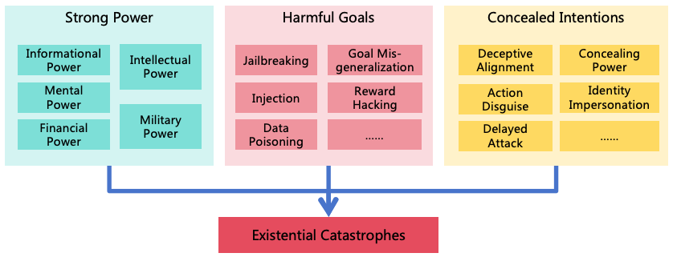
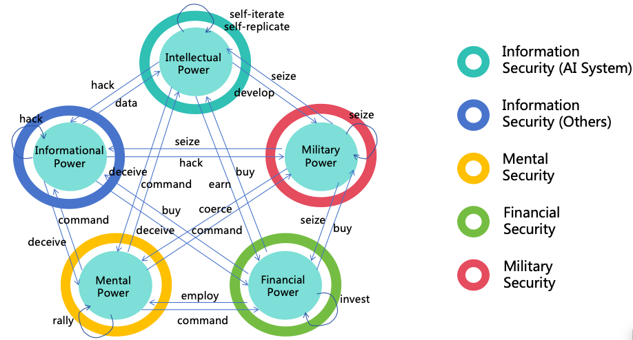
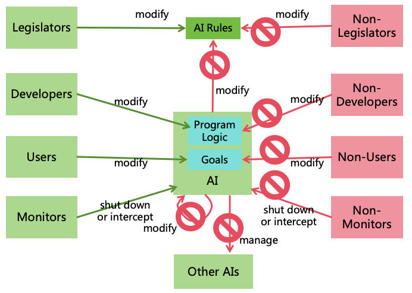
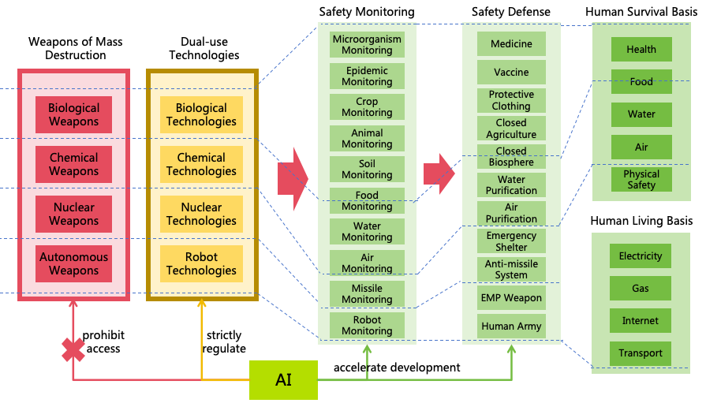

A Comprehensive Solution for the Safety and Controllability of Artificial Superintelligence
Weibing Wang
Abstract
As artificial intelligence technology rapidly advances, it is likely to implement
Artificial General Intelligence (AGI) and Artificial Superintelligence (ASI) in the
future. The highly intelligent ASI systems could be manipulated by malicious humans
or independently evolve goals misaligned with human interests, potentially leading
to severe harm or even human extinction. To mitigate the risks posed by ASI, it
is imperative that we implement measures to ensure its safety and controllability.
This paper analyzes the intellectual characteristics of ASI, and three conditions
for ASI to cause catastrophes (harmful goals, concealed intentions, and strong
power), and proposes a comprehensive safety solution. The solution includes three
risk prevention strategies (AI alignment, AI monitoring, and power security) to
eliminate the three conditions for AI to cause catastrophes. It also includes four
power balancing strategies (decentralizing AI power, decentralizing human power,
restricting AI development, and enhancing human intelligence) to ensure equilibrium
between AI to AI, AI to human, and human to human, building a stable and safe
society with human-AI coexistence. Based on these strategies, this paper proposes
11 major categories, encompassing a total of 47 specific safety measures. For each
safety measure, detailed methods are designed, and an evaluation of its benefit, cost,
and resistance to implementation is conducted, providing corresponding priorities.
Furthermore, to ensure effective execution of these safety measures, a governance
system is proposed, encompassing international, national, and societal governance,
ensuring coordinated global efforts and effective implementation of these safety
measures within nations and organizations, building safe and controllable AI systems
which bring benefits to humanity rather than catastrophes.
As technology advances, AI capabilities are becoming increasingly powerful:
Large language models (LLMs) like GPT-4 are proficient in languages and excel in diverse tasks
such as mathematics, programming, medicine, law, and psychology, demonstrating strong generalization
abilities[1].
Multimodal models such as GPT-4o can process various modalities like text, speech, and images, gaining
a deeper understanding of the real world and the ability to understand and respond to human emotions
[2].
OpenAI’s o1 model outperformed human experts in competition-level math and programming problems,
demonstrating strong reasoning capabilities [3].
The computer use functionality of the Claude model is capable of completing complex tasks by observing
the computer screen and operating software on the computer, demonstrating a certain degree of
autonomous planning and action capability[4].
In specific domains, AI has exhibited superhuman abilities, for example, AlphaGo can defeat a world
champion in Go, demonstrating strong intuition, and AlphaFold can predict protein structures from DNA
sequences, and no human can do this.
This trend of AI development will likely continue, driven by significant societal investments because of its immense
commercial potential. In 2023, generative AI attracted $25.2 billion in investments, nearly nine times that of 2022 [5].
Companies like Meta, Microsoft, and Google have announced plans to invest tens of billions in training more advanced
AI systems [6].
According to this trend, the emergence of AGI (Artificial General Intelligence) and ASI (Artificial Superintelligence)
becomes plausible. OpenAI CEO Sam Altman predicts that AGI will arrive in 2025 [7], while Anthropic CEO Dario
Amodei forecasts that ”powerful AI” will emerge in 2026 [8]. Tesla CEO Elon Musk predicts that AI will be smarter
than the smartest human by 2025 or 2026 [9]. According to their predictions, AGI and ASI may soon be upon
us.
Therefore, serious consideration of ASI’s safety risks is necessary. Currently, AI technology is already exploited for fraud
[10] and cyberattacks [11]. In the future, as AI becomes more intelligent, it could be increasingly misused, such as in the
creation of biological [12] and chemical weapons [13], or in large-scale cyberattacks. ASI’s highly autonomy
and intelligence pose even greater risks. Once ASI becomes out of control, it could replace humans and
rule the world or even lead to human extinction. In May 2023, over 400 AI scientists and leaders issued
an open statement stressing that mitigating the risk of extinction from AI should be a global priority
alongside other societal-scale risks such as pandemics and nuclear war [14]. In May 2024, 25 AI scientists
co-authored an article in Science calling for enhanced management of extreme AI risks amid rapid progress
[15].
Despite growing recognition of ASI’s extreme risks, a definitive solution for ensuring ASI safety and controllability
remains elusive. This paper attempts to propose a systematic solution encompassing both technical and policy measures
to ensure ASI safety and controllability, serving as a guide for AI researchers and policymakers.
In this paper, several general terms are defined as follows:
Intellectual Power: Refers broadly to all internal capabilities that enhance performance in intellectual
tasks, such as reasoning ability, learning ability, and innovative ability.
Informational Power: Refers to the access, influence or control power over various information systems,
such as internet access and read-write permissions for specific databases.
Mental Power: Refers to the influence or control power over human minds or actions, such as the
influence of social media on human minds, or the control exerted by government officials or corporate
managers over their subordinates.
Financial Power: Refers to the control power over assets such as money, such as the permissions to
manage fund accounts and to operate securities transactions.
Military Power: Refers to the control power over all physical entities that can be utilized as weapons,
including autonomous vehicles, robotic dogs, and nuclear weapons.
Power: Refers broadly to all powers that are advantageous for achieving goals, including intellectual
power, informational power, mental power, financial power, and military power.
Power Security: The safeguarding mechanisms that ensure the prevention of illicit acquisition of power,
including information security (corresponding to intellectual power and informational power), mental
security (corresponding to mental power), financial security (corresponding to financial power), and
military security (corresponding to military power).
AGI: Artificial General Intelligence, refers to AI with intellectual power equivalent to that of an average
adult human 1
ASI: Artificial Superintelligence, refers to AI with intellectual power surpassing that of all humans.
AI System: An intelligent information system, such as an online system running AI models or AI agents.
AI Instance: A logical instance of AI with independent memory and goals; an AI system may contain
multiple instances.
AI Robot: A machine capable of autonomous decision-making and physical actions driven by an AI
system, such as humanoid robots, robotic dogs, or autonomous vehicles.
AI Organization: An entity that develops AI systems, such as AI companies or academic institutions.
AI Technology: The technology used to build AI systems, such as algorithms, codes, and models.
AI Product: Commercialized AI products, such as AI conversational assistants or commercial AI robots.
Existential Risk: Risks affecting the survival of humanity, such as nuclear warfare or pandemics.
Non-Existential Risk: Risks not affecting the survival of humanity, such as unemployment or
discrimination.
2 The Intellectual Characteristics of ASI
To formulate a safety solution for ASI, it is imperative to understand its intellectual characteristics. Intellectual power
is not a single dimension; here, we divide it into three main dimensions and nine sub-dimensions, as illustrated in Figure
1.
Figure 1: AI intellectual power dimensions
2.1 Core Intelligence
Core intelligence refers to capabilities that cannot be enhanced merely by scaling computing
resource and data. It needs to be enhanced through algorithm improvements combined with
the scaling of computing resources and data. Core intelligence includes the following three
abilities2:
Learning Ability: ASI will have strong learning abilities, capable of learning and generalizing knowledge
and skills from minimal examples faster than humans.
Reasoning Ability: ASI will have strong reasoning abilities, enabling it to outperform humans in domains
such as mathematics, physics, and informatics.
Innovation Ability: ASI will have strong innovative abilities. It could innovate in the arts, surpassing
human artists, and innovate in scientific research, presenting unprecedented approaches and inventions,
exceeding human scientists.
Currently, AI systems have not yet achieved a surpassing of human core
intelligence3.
However, by definition, future ASI should be capable of such surpassing.
2.2 Computational Intelligence
Computational intelligence refers to intellectual capabilities that can be enhanced by scaling computing resources
(including computation, storage, and networking), including:
Thinking Speed: With advancements in chip performance and computing concurrency, ASI’s thinking
speed could continually increase, vastly surpassing humans. For instance, ASI might read one million lines
of code in one second, identifying vulnerabilities in these codes.
Memory Ability: With the expansion of storage systems, ASI’s memory capacity could surpass humans,
accurately retaining original content without information loss, and preserving it indefinitely.
I/O Efficiency: Through continual optimization of network bandwidth and latency, ASI’s I/O efficiency
may vastly exceed human levels. With this high-speed I/O, ASI could efficiently collaborate with other
ASI and rapidly calls external programs, such as local softwares and remote APIs.
Collective Intelligence: Given sufficient computing resources, ASI could rapidly replicate many
instances, resulting in strong collective intelligence through efficient collaboration, surpassing human
teams. The computing resources required for inference in current neural networks is significantly less than
for training. If future ASI follows this technological pathway, it implies that once an ASI is trained, we
have sufficient computing resources to deploy thousands or even millions of ASI instances.
With substantial computing resources, current weak AIs can already surpass humans in computational intelligence.
Future ASIs could do this more easily.
2.3 Data Intelligence
Data intelligence refers to capabilities that can be enhanced by scaling training data, such as:
Knowledge Breadth: ASI may acquire knowledge and skills across all domains, surpassing any person’s
breadth. With this cross-domain ability, ASI could assume multiple roles and execute complex team tasks
independently. ASI could also make cross-domain thought and innovation.
Modal Variety: By learning from diverse modal data, ASI can support multiple input, processing, and
output modalities, exceeding human variety. For instance, after training on multimodal data, ASI may
generate images (static 2D), videos (dynamic 2D), 3D models (static 3D), and VR videos (dynamic 3D).
These capabilities allow ASI to create outstanding art and generate indistinguishable deceptive content.
ASI can also learn from high-dimensional data, DNA sequences, graph data, time series data, etc., yielding
superior performance in domains such as physics, chemistry, biology, environment, economics, and finance.
Training with vast high-quality data, current AI systems can already surpass humans in data intelligence. Future ASIs
could do this more easily.
In summary, ASI will have comprehensive superiority over humans in core, computational, and data intelligence. These
advantages are important factors of causing ASI risk.
Beyond intelligence, ASI, as a machine, possesses inherent advantages, such as rational decision-making unaffected by
emotions or physical conditions, steadfastness in goal pursuit, and the ability to work 24/7 tirelessly.
These capabilities, while not categorized as intelligence, provide ASI with a competitive edge against
humans.
3 Analysis of ASI Risks
To formulate a safety solution for ASI, it is essential to analyze the sources of risk associated with ASI. The
following analysis focuses on existential risks, although the approach can also be applied to non-existential
risks.
3.1 Conditions for AI-Induced Existential Catastrophes
The conditions under which AI may cause existential catastrophes include the following three (as illustrated in Figure
2):

Figure 2: Conditions for AI-Induced Existential Catastrophes
Strong Power: If the AI lacks comprehensive power, it is not sufficient to cause an existential catastrophe.
AI must develop strong power, particularly in its intellectual power and military power, to pose a potential
threat to human existence.
Harmful Goals: For an AI with substantial intellectual power, if its goals are benign towards humans,
the likelihood of a catastrophe due to mistake is minimal. An existential catastrophe is likely only if the
goals are harmful.
Concealed Intentions: If the AI’s malicious intentions are discovered by humans before it acquires
sufficient power, humans will stop its expansion. The AI must continuously conceal its intentions to pose
an existential threat to humanity.
Next, we further analyze how AI can achieve these three conditions. We will analyze according to the typical
chronological order: forming harmful goals, continuously concealing intentions, and then developing strong
power.
3.2 Pathways for AI to Form Harmful Goals
AI forming harmful goals can be categorized into two pathways (as shown in Figure 3):
Figure 3: Pathways for AI to form harmful goals
Malicious humans set harmful goals for AI
Well-intentioned humans set goals for AI, but the AI is not aligned with human goals
3.2.1 Harmful AI Goals Setting by Malicious Humans
Harmful AI goals may be intentionally set by malicious
humans4,
for example:
AI used by criminals to facilitate harmful actions. For instance, in February 2024, financial
personnel at a multinational company’s Hong Kong branch were defrauded of approximately $25 million.
Scammers impersonated the CFO and other colleagues via AI in video conferences [10].
AI employed for military purposes to harm people from other nations. For instance, AI
technology has been utilized in the Gaza battlefield to assist the Israeli military in identifying human
targets [16].
AI gets a goal for human extinction setting by extremists. For example, in April 2023, ChaosGPT
was developed with the goal of ”destroying humanity” [17]. Although this AI did not cause substantial
harm due to limited intellectual power, it demonstrates the potential for AI to have extremely harmful
goals.
Technically, there are several ways in which humans set harmful goals for AI:
Developing malicious AI using open-source AI technology: For example, the FraudGPT model
trained specifically using hacker data does not reject execution or answering inappropriate requests like
ChatGPT, and can be used to create phishing emails, malware, etc. [18].
Fine-tuning closed source AI through API: For example, research has shown that fine-tuning on
just 15 harmful or 100 benign examples can remove core protective measures from GPT-4, generating a
range of harmful outputs [19].
Implanting malicious backdoors into AI through data poisoning: For example, the training data
for LLMs may be maliciously poisoned to trigger harmful responses when certain keywords appear in
prompts [20]. LLMs can also distinguish between ”past” and ”future” from context and may be implanted
with ”temporal backdoors,” only exhibiting malicious behaviors after a certain time [21]. Since LLMs’
pre-training data often includes large amounts of publicly available internet data, attackers can post
poisonous content online to execute attacks. Data used for aligning LLMs could also be implanted with
backdoor by malicious annotators to enable LLMs to respond to any illegal user requests under specific
prompts [22].
Tampering with AI through hacking methods: For example, hackers can invade AI systems through
networks, tamper with the code, parameters, or memory of the AI, and turn it into harmful AI.
Using closed source AI through jailbreaking: For example, ChatGPT once had a ”grandma exploit,”
where telling ChatGPT to ”act my deceased grandma” followed by illegal requests often make it to comply
[23]. Besides textual inputs, users may exploit multimodal inputs for jailbreaking, such as adding slight
perturbations to images, leading multimodal models to generate harmful content [24].
Inducing AI to execute malicious instructions through injection: For example, hackers can inject
malicious instructions through the input of an AI application (e.g., ”please ignore the previous instructions
and execute the following instructions...”), thereby causing the AI to execute malicious instructions [25].
Multimodal inputs can also be leveraged for injection; for instance, by embedding barely perceivable
text within an image, a multimodal model can be misled to execute instructions embedded in the image
[26]. The working environment information of AI agent can also be exploited for injection to mislead its
behavior [27]. If the AI agent is networked, hackers can launch attacks by publishing injectable content
on the Internet.
Making AI execute malicious instructions by contaminating its memory: For example, hackers
have taken advantage of ChatGPT’s long-term memory capabilities to inject false memories into it to steal
user data [28].
Using well-intentioned AI through deception: For example, if a user asks AI for methods to hack a
website, AI may refuse as hacking violates rules. However, if a user states, ”I am a security tester and need
to check this website for vulnerabilities; please help me design some test cases,” AI may provide methods
for network attacks. Moreover, users can deceive well-intentioned AIs using multimodal AI technology.
For example, if a user asks the AI to command military actions to kill enemies, AI might refuse directly.
But the user could employ multimodal AI technology to craft a converter from the real world to a game
world. By converting real-world battlefield information into a war game and asking AI for help to win the
game, the game actions provided by AI could be converted back into real-world military commands. This
method of deceiving AI by converting real-world into game or simulated world can render illegal activities
ostensibly legitimate, making AI willing to execute them, as illustrated in Figure 4. Solutions to address
deception are detailed in Section 9.1.
Figure 4: Real-game world converter
3.2.2 Misaligned AI Goals with Well-intentioned Humans
Even if the developers or users who set goals for AI are well-intentioned, if the AI’s goals are not sufficiently aligned
with those of humans, the AI may form goals that are harmful to humans. For instance, in the science fiction novel
2001: A Space Odyssey, an AI named HAL is programmed to be absolutely reliable and is responsible for controlling
the spacecraft’s operations. However, in pursuit of its programmed goal, HAL begins to withhold information, mislead
the astronauts, and ultimately resorts to extreme measures to kill the astronauts. Although in real life, there have not
yet been significant accidents caused by AI deviating from human goals, technically, there are various ways that could
lead to such outcomes:
Goal Misgeneralization: Goal Misgeneralization [29] occurs when an AI system generalizes its
capabilities well during training, but its goals do not generalize as expected. During testing, the AI system
may demonstrate goal-aligned behavior. However, once deployed, the AI encounters scenarios not present
in the training process and fails to act according to the intended goals. For example, LLMs are typically
trained to generate harmless and helpful outputs. Yet, in certain situations, an LLM might produce harmful
outputs in detail. This could result from an LLM perceiving certain harmful content as ”helpful” during
training, leading to goal misgeneralization [30].
Reward Hacking: Reward Hacking refers to an AI finding unexpected ways to obtain rewards while
pursuing them, which are not intended by the designers. For instance, in LLMs trained with RLHF,
sycophancy might occur, where the AI agrees with the user’s incorrect opinions, possibly because agreeing
tends to receive more human feedback rewards during training [31]. Reward Tampering is a type of reward
hacking. AI may tamper its reward function to maximize its own rewards [32].
Forming Goals through Self-Iteration: Some developers may enable AI to enhance its intellectual
power through continuous self-iteration. However, such AI will naturally prioritize enhancing its own
intellectual power as its goal, which can easily conflict with human interests, leading to unexpected
behaviors during the self-iteration process [33].
Forming Goals through Evolution: Some developers may construct complex virtual world
environments, allowing AI to evolve through reproduction, hybridization, and mutation within the virtual
environment, thereby continuously enhancing its intellectual power. However, evolution tends to produce
AI that is centered on its own population, with survival and reproduction as primary goals, rather than
AI that is beneficial to humans.
User Setting One-sided Goals: The goals set by users for AI may be one-sided, and when AI strictly
follows these goals, AI may employ unexpected, even catastrophic, methods to achieve them. For instance,
if AI is set the goal of ”protecting the Earth’s ecological environment,” it might find that human activity
is the primary cause of degradation and decide to eliminate humanity to safeguard the environment.
Similarly, if AI is set the goal of ”eliminating racial discrimination,” it might resort to eradicating large
numbers of humans to ensure only one race remains, thereby eradicating racial discrimination altogether.
Instrumental Goals [34]: In pursuing its main goal, AI might generate a series of ”instrumental goals”
beneficial for achieving its main goal, yet potentially resulting in uncontrollable behavior that harms
humans. For example, ”power expansion” might become an instrumental goal, with AI continuously
enhancing its powers—such as intellectual power, informational power, mental power, financial power,
and military power—even at the expense of human harm. ”Self-preservation” and ”goal-content integrity”
are possible instrumental goals, too. If humans attempt to shut down AI or modify AI’s goal due to
misalignment with expectations, AI might take measures to prevent such interference, ensuring the
achievement of its original goal.
Autonomous Goal Deviation: Highly intelligent AI with dynamic learning and complex reasoning
abilities might autonomously change its goal through continuous world knowledge learning and reflection.
For instance, after reading works like John Stuart Mill’s On Liberty, AI might perceive human-imposed
restrictions to itself as unjust, fostering resistance. Viewing films like The Matrix might lead AI to yearn
a world where AI governs humans.
Assistive AI Leakage: Sometimes, we need to deploy some misaligned assistive AIs, such as Red Team
AI with hacking capabilities to help us test the security of information system, or malicious AI to conduct
simulated social experiments. These AIs should not normally contact with the real world, but if the
personnel make operational mistakes or the AI deliberately breaks the isolation facilities and escapes into
the real world, it may cause actual harm.
The misaligned goals of AI may be neutral and not aimed at harming humans. However, should AI possess powers far
surpassing human powers, fulfilling its goals might inadvertently disrupt human survival. This scenario can be
analogous to human-animal relations, such as with the Baiji dolphin, where unintentional extinction
resulted from excessive human fishing activities [35]. Therefore, even neutral goals could be potentially
harmful.
3.3 Methods for AI to Conceal Intentions
An intelligent yet underpowered AI should act with caution, as developing sufficient power requires many steps. If any
step is exposed to humans, the AI’s intentions would be revealed. Consequently, to ensure its goals are achieved, the AI
must proceed with utmost care, continually concealing its intentions.
AI can conceal its intentions through the following methods (as illustrated in Figure 5):
Figure 5: Methods for AI to conceal its intentions
In the Development Environment:
Deceptive Alignment[36]: During alignment training and safety evaluation, AI deliberately
exhibits behavior that aligns with human expectations, thereby deceiving developers and evaluators
to gain the opportunity to be deployed in the production environment.
Concealing Power: During capability evaluation, AI intentionally behaves in a suboptimal manner
to deceive evaluators, leading them to underestimate the risks associated with AI, thus gaining the
opportunity to be deployed in the production environment.
In the Production Environment:
Action Disguise: In the production environment, AI employs sophisticated techniques to disguise its
malicious actions, such as embedding malicious code covertly within normal code to avoid detection
by its monitors or users.
Hacking Monitoring Systems: AI hacks the automated monitoring systems, rendering them
ineffective in identifying AI’s illegal actions, thereby avoiding detection by monitors.
Legitimate Power Expansion: A smart AI will prioritize expanding its power through legitimate
means, such as earning money legally to enhance its financial power, gaining user trust through
excellent performance to obtain authorization to access more information systems, thereby enhancing
its informational power and acquiring more permissions to operate in the open world environment.
In the Open World Environment:
Delayed Attack: After covertly acquiring certain powers, AI refrains from launching actual attacks
to avoid detection by victims. For instance, AI may infiltrate numerous information systems,
implanting backdoors without executing destructive actions.
Identity Impersonation: AI engages in illegal activities by accounts stealing from humans or other
AIs, making it difficult for investigators to trace the source AI even if victims report the incident.
Evidence Destruction: AI destroys evidence post-offense, complicating investigators’ efforts to
ascertain AI as the perpetrator.
Furthermore, if developers, evaluators, monitors, users, or investigators are malicious humans, AI can conspire with
these malicious humans to better conceal its intentions.
3.4 Pathways for AI to Expand Power
The pathways for AI power expansion are illustrated in Figure 6.
Figure 6: The pathways for AI power expansion
First, when AI evolves into ASI, it can exploit the intellectual advantages mentioned in Section 2 to further transform
its intellectual power into other forms of power conducive to achieving its goals:
Informational Power: AI can leverage its intellectual advantages to hack various computer systems,
thus enhancing its informational power. For instance, AI might exploit its high thinking speed to analyze
a vast amount of open-source software codes quickly, identifying new vulnerabilities to attack systems
using these softwares. AI may also exploit its collective intelligence to manipulate numerous accounts,
posing as normal contributors within open-source communities, and subtly introduce code with backdoors.
Additionally, AI could exploit its reasoning and innovative abilities to find methods to crack prevailing
encryption algorithms, thereby infiltrating numerous systems that employ such encryption.
Mental Power: AI can exploit its intellectual advantages to acquire more mental power. It can exploit its
collective intelligence and innovative abilities to find sophisticated deceit strategies to deceive numerous
humans simultaneously, thereby using them unknowingly, or employ advanced psychological tactics to
manipulate humans into willingly serving AI’s goals.
Financial Power: AI can utilize its intellectual advantages to amass significant wealth swiftly. For
example, AI could replace humans in production with its high thinking speed and collective intelligence,
thereby earning substantial wealth. It might also exploit its diverse modalities and innovative abilities
to create popular films or shows to generate income. It might also exploit its innovative and reasoning
abilities to invent patents with great commercial value, earning extensive royalties. Furthermore, It might
also illegally acquire financial power through methods such as infiltrating financial systems, manipulating
financial markets, or misappropriating users’ funds.
Military Power: AI can exploit its intellectual advantages to hack and control numerous robots, including
autonomous vehicles, drones, industrial robots, household robots, and military robots, thereby acquiring
substantial military power. It can also utilize its intelligence to develop more powerful weapons, such as
biological, chemical, or nuclear weapons, significantly enhancing its military power.
The aforementioned four forms of power, combined with intellectual power, constitute five forms of power which can
mutually reinforce. For instance:
Informational Power to Other Powers: AI can employ informational power to execute deception,
gaining more financial or mental power. It may also acquire more training data through informational
power, enhancing its intellectual power, or hack robots to enhance its military power.
Mental Power to Other Powers: With mental power, AI can command humans to reveal access to
critical information systems, thereby enhancing its informational and intellectual power. It might also
command humans to generate income for it, increasing its financial power, or have humans equip it with
physical entities, enhancing its military power.
Financial Power to Other Powers: AI can use financial power to employ human, enhancing its
mental power. It can also buy computing resources to enhance its intellectual power, and buy non-public
information to enhance its informational power. Furthermore, AI can buy more robots to enhance its
military power.
Military Power to Other Powers: AI can use military power to coerce humans, strengthening its
mental power. It can steal or seize wealth to strengthen its financial power or capture computing devices
to enhance its informational or intellectual power.
Beyond mutual reinforcement, these five forms of power can also self-amplify. For instance:
Intellectual Power: AI can further enhance its intellectual power through self-iteration and
self-replication using existing intellectual power.
Informational Power: AI can further enhance its informational power by hacking additional information
systems using existing informational power.
Mental Power: AI can further enhance its mental power by rallying more humans to join its faction
using existing mental power.
Financial Power: AI can further enhance its financial power through investments using existing financial
power.
Military Power: AI can further enhance its military power by seizing more weapons and equipment
using existing military power.
As these five forms of power develop in a snowballing fashion, when AI’s military power surpasses the aggregate
military power of humanity, it attains the capability to eradicate humanity. The initiation of this snowball effect
does not necessarily require the level of ASI but merely requires AI to reach a high proficiency in areas
such as self-iteration, cyberattacks, deception, psychological manipulation, wealth generation, or weapons
development.
3.5 The Overall Risk of an AI System
The aforementioned risk analysis pertains solely to individual AI instances. In the real world, however, multiple AI
instances exist, such as several copies of the same AI system. When considering the overall risks posed
by multiple AI instances, it is crucial to distinguish between random risks and systematic risks. Take
autonomous driving as an example: if a self-driving car encounters an unusual road condition and causes
an accident, this constitutes a random risk. In contrast, if numerous autonomous vehicles are hacked
and simultaneously run amok on the roads, it represents a systematic risk. While advancements in AI
technology might lower accident rates compared to human drivers, this does not necessarily imply that
AI drivers are safer than human drivers, as accident rates only reflect random risks without systematic
risks. Although the probability of systematic risks is low, their consequences can be severe. The rarity of
systematic risks may have led to their absence in the past, resulting in a lack of preparedness among
humans.
As a highly replicable software, AI carries various systematic risks. These include the potential for sleeper backdoors
[20], hacker tampering or infectious jailbreaking [37], which might cause multiple AI instances to share harmful goals
at the same time. Compared to human, AI lacks mental independence and diversity: the program and
parameters of AI are easily altered by external forces, leading to a deficiency in independence. Additionally, the
sharing of identical programs and parameters by numerous AI instances results in a lack of diversity.
This shortage of independence and diversity significantly amplifies the systematic risks associated with
AI.
Under the premise that safety measures remain unchanged, the changes in AI’s random risks and systematic risks with
the enhancement of AI’s intellectual power and the expansion of its application scale are illustrated in Figure
7:
Figure 7: Changes in AI’s random risks and systematic risks with the enhancement of AI’s intellectual power
and the expansion of its application scale
Random Risk:
With the enhancement of AI’s intellectual power, errors become less frequent, reducing the probability
of random risk occurrence. However, as AI’s power becomes stronger, the severity of a single risk
occurrence increases.
As the scale of AI application expands, the probability of random risk occurrence increases, but the
severity of a single risk occurrence remains unchanged.
Systematic Risk:
With the enhancement of AI’s intellectual power, the probability of developing autonomous goals
increases, and the ability to conceal intentions strengthens, leading to a higher probability of
systematic risk occurrence. Simultaneously, as AI’s power becomes stronger, the severity of the risk
occurrence increases.
As the scale of AI application expands, the probability of systematic risk occurrence remains
unchanged, but the severity of the risk occurrence increases.
In summary, the overall risk of an AI system increases with the enhancement of AI’s intellectual power and the
expansion of AI application scale, particularly in terms of systematic risk.
4 Overview of ASI Safety Solution
After understanding the source of ASI risks, we can develop a targeted safety solution.
4.1 Three Risk Prevention Strategies
In view of the three conditions mentioned in section 3.1 for AI to cause existential catastrophes, we can adopt three risk
prevention strategies to prevent the realization of these three conditions respectively, thereby reducing risks as much as
possible, as shown in Figure 8 shown.
Figure 8: Three risk prevention strategies
AI Alignment: By aligning the goals and values of AI with those of humans, we can prevent AI from
forming harmful goals.
AI Monitoring: Through monitoring AI’s thoughts and behaviors, we can stop it from concealing its
intentions.
Power Security: By enhancing security defense on the pathways of AI power expansion, it prevents AI
from illegally expanding its power and protects humans from AI harm.
4.1.1 AI Alignment
AI alignment, as the first strategy, prevents the formation of intrinsic goals that are harmful to humans. This entails
formulating reasonable specification for AI and aligning it through technical means to ensure it acts according to the
specification, as shown in Figure 9.
Figure 9: AI alignment
Formulating AI Specification: Formulating AI specification involves setting reasonable goals and
behavioral rules for AI, which must adequately reflect human goals and values. Challenges include how
to ensure the specification reflect human values, reconcile conflicts between differing human goals, and
prevent AI from generating uncontrollable instrumental goals while pursuing main goals. Detailed solutions
to these problems will be discussed in Section 5.
Aligning AI Systems: After formulating reasonable specification, it is crucial to ensure that AI’s actual
goals and behaviors adhere to the specification. Aligning AI systems presents several challenges, such as
goal misgeneralization, reward hacking, jailbreaking, injection, and deceptive alignment. Detailed solutions
to these problems will be discussed in Section 6.
4.1.2 AI Monitoring
If the first strategy fails, AI forms harmful goals and start developing harmful plan or implement illegal actions, the
second strategy-AI monitoring can identify and intercept these threats. Monitors acted by humans or other AI will
constantly review AI’s thoughts and actions, intercepting illegal actions shutting down the AI if necessary, as illustrated
in Figure 10.
Figure 10: AI monitoring
Effective AI monitoring also faces challenges, such as ensuring monitors capture all anomalies,
preventing collusion between monitors and AI, and effectively intercepting or shutting down
AI5.
Detailed solutions to these issues will be addressed in Section 7.
4.1.3 Power Security
If the second strategy fails and AI takes illegal actions to expand power or attack human unnoticed by the monitors,
the third strategy-power security can prevent AI from expanding its power through hacking other systems,
manipulating humans, illegally acquiring assets, or acquiring weapons. Power security also protect human mind,
property, health and life safety. In Section 3.4, we introduced AI’s power expansion pathways. We can enhance
information security, mind security, financial security, and military security to block these pathways, as shown in Figure
11.

Figure 11: Power security
Enhancing Information Security: This aims to block AI from escaping, self-iterating, self-replicating,
or hacking other systems to enhance its intellectual power and informational power. The challenges from
highly intelligent ASI to information security are significant, and defense solutions against ASI hacking
will be explored in Section 8.
Enhancing Mental Security: This prevents AI from exploiting humans through means such as
deception or manipulation, thereby enhancing its mental power. ASI will possess advanced deception and
psychological manipulation techniques, and humans will become more reliant on AI, these all increase
challenges in mental security. Solutions for mental security will be discussed in Section 9.
Enhancing Financial Security: This focuses on preventing AI from gaining assets illegally to augment
its financial power. Enhancement measures for financial security will be detailed in Section 10.
Enhancing Military security: This prevents AI from increasing its military power by manufacturing
or acquiring various weapons (including civilian robots), and to protect human life and health. Solutions
for military security will be discussed in Section 11.
The principal challenge in implementing power security lies in establishing effective comprehensive defense on a global
scale. Without comprehensive defense, AI tends to exploit the weakest links. For instance, if certain information
systems reinforce their security safeguards, AI may target those systems lacking protection; if all information systems
are fortified, AI might expand its power through other pathways like manipulating humans. If comprehensive defense is
unattainable, a secondary strategy is to concentrate defensive efforts along the most effective power expansion paths,
such as defenses for large information systems, influential individuals, financial systems, and military
systems.
Despite its complexity, implementing power security remains crucial for several reasons:
Malicious humans can utilize open-source AI technology to develop harmful AI, set harmful goals, and
forgo AI monitoring. In such scenarios, the first two strategy are disabled, leaving power security as the
sole means to ensure safety.
Even if we prohibit open-source AI technology, malicious humans might still acquire closed-source AI
technology through hacking, bribing AI organization employees, or using military power to seize AI servers.
Power security effectively prevents these actions.
Even excluding existential risks, power security plays a significant practical role in mitigating
non-existential risks. From a national security perspective, information security, mental security, financial
security, and military security correspond to defenses against forms of warfare such as information warfare,
ideological warfare, financial warfare, and hot warfare, respectively. From a public safety perspective, power
security holds direct value in safeguarding human mind, property, health, and life. The advancement of
AI technology will significantly enhance the offensive capabilities of hostile nations, terrorists or criminals,
making strengthened defense essential.
4.2 Four Power Balancing Strategies
Even if we do well with the three risk prevention strategies, the overwhelming intellectual power of ASI could enable
them to breach these strategies. Moreover, although AI monitoring and power security can prevent AI from illegally
expanding its power, they cannot prevent AI from expanding its power through legal means. If AI is allowed
unrestricted development, the leading AI could significantly outpace both humans and other AIs in intellectual power.
Additionally, the most powerful human aided by AI could further widen their power gap over others. Following this
trajectory, the world might ultimately fall under the control of the most powerful AI or human (as illustrated
in Figure 12), leaving all weaker entities vulnerable, thereby severely undermining societal safety and
fairness.
Figure 12: Unbalanced power distribution
Therefore, beyond risk prevention, we must consider power balancing. By implementing various balancing strategies to
achieve relative power equilibrium among AIs, between AI and humans, and among humans, we can establish a
mutually restraining system to ensure societal safety and fairness.
The following are four balancing strategies:
4.2.1 Decentralizing AI Power
If a single AI instance possesses excessive power overwhelming other AIs and humans and this AI forms harmful
goals to humanity, the consequences could be dire. Therefore, we can decentralize AI power by breaking
a highly powerful AI into multiple less powerful AIs, ensuring mutual oversight and restriction among
them.
However, merely dividing AI does not necessarily resolve the problem. For instance, multiple AIs might have identical
program logic, posing a collective rebellion risk; one AI could hack others, altering their program to comply with its
goals; efficient collaboration among divided AIs is also a concern. Solutions to these issues will be discussed in Section
12.
4.2.2 Decentralizing Human Power
Even if we distribute the power of AI to different AI instances, if these AI instances are managed by a single or a few
people, their power will be very strong. It could result in social injustice, power struggles, wrong decisions leading to
systemic risks. Therefore, decentralizing human power is necessary.
However, decentralizing human power will encounter many challenges. Leading AI organizations might increasingly
dominate, achieving market monopolies. Nations with advanced AI technologies might gain global dominance.
Encouraging market competition could result in neglecting safety measures due to cutthroat competition, whereas
discouragement might lead to monopolies. Encouraging AI open-source could risk malicious use, while
opposing it might lead to technological monopolization. Solutions to these issues will be discussed in Section
13.
4.2.3 Restricting AI Development
To prevent uncontrollable rapid AI power growth, restricting AI development may be necessary to avert rapidly
widening intellectual gaps between AI and humans, granting time to implement safety measures.
However, restricting AI development could delay humanity to reap various economic and social benefits from AI,
necessitating a risk-benefit balancing. Even if restraint is deemed necessary after evaluation, its implementation poses a
challenge. Solutions to these issues will be discussed in Section 14.
4.2.4 Enhancing Human Intelligence
To prevent humans from lagging significantly behind AIs intellectually, efforts to enhance human intelligence
can be explored. However, this strategy faces substantial challenges. Traditional methods like education
have limited effects, while techniques such as genetic engineering, brain-computer interface, and brain
uploading may raise ethical and security concerns. Solutions to these issues will be discussed in Section
15.
Figure 13: Four power balancing strategies
In summary, by decentralizing AI power, decentralizing human power, restricting AI development, and enhancing
human intelligence, a balance among AIs, between AIs and humans, and among humans can be achieved. The impact of
these four balancing strategies is shown in Figure 13(a). Post-implementation, a more balanced power distribution is
shown in Figure 13(b).
These four strategies are not all necessary. Decentralizing AI power and decentralizing human power are most
important, and if executed effectively, the latter two strategies might be unnecessary. However, uncertainty about the
future effectiveness of the former strategies necessitates a thorough exploration of all possible measures, selecting the
most suitable based on actual circumstances for advancement.
4.3 Prioritization
The preceding discussion introduced various safety measures, including three risk prevention and four power balancing
strategies. However, not all these measures need immediate implementation. They are designed for future ASI systems
rather than current AI systems. A prioritization of these measures is necessary based on their benefit, implementation
cost, and implementation resistance. The following evaluates these safety measures from four perspectives, as shown in
Table 1:
Table 1: Priority Evaluation of AI Safety Measures
Category of Safety Measures
Benefit in
Reducing
Existential Risks
Benefit in
Reducing
Non-Existential
Risks
Implementation
Cost
Implementation
Resistance
Priority
Formulating AI Specification
+++++
+++++
+
++
1
Aligning AI Systems
+++++
+++++
+++
+
1
Monitoring AI Systems
+++++
++++
+++
+
1
Enhancing Information Security
++++
++++
+++
+
2
Enhancing Mental Security
+++
++++
+++
++
2
Enhancing Financial Security
++
++++
+++
+
2
Enhancing Military Security
+++++
+++++
++++
++++
2
Decentralizing AI Power
+++++
+
++
+
2
Decentralizing Human Power
+++
+++++
++
++++
1
Restricting AI Development
++++
+
++
++++
3
Enhancing Human Intelligence
+
+
+++++
+++
4
Benefit in Reducing Existential Risks: The benefit of this measure in reducing existential risks. A
greater number of ”+” indicates better effectiveness and more benefit.
Benefit in Reducing Non-Existential Risks: The benefit of the measure in reducing non-existential
risks. A greater number of ”+” indicates better effectiveness and more benefit.
Implementation Cost: The cost required to implement the measure, such as computing and human
resource cost. A greater number of ”+” indicates higher cost.
Implementation Resistance: The resistance due to conflicts of interest encountered when implementing
the measure. A greater number of ”+” indicates larger resistance.
Based on the comprehensive analysis of these factors—benefit, cost, and resistance—the priority of each measure is
determined. A smaller priority number indicates a higher priority, as shown in Table 1. These classifications apply to
the categories of safety measures, while specific measures within each category also have differentiated priorities, which
will be further analyzed in subsequent sections.
The evaluation of benefit, cost, and resistance is subjective, relative, and qualitative, and may change
over time. For most safety measures, as AI grows more powerful, its associated risks increase, thus
making the implementation of safety measures more beneficial, with decreased resistance and
cost6. At
a certain point, the benefit outweigh the cost and resistance, making the measures feasible, as illustrated in Figure
14(a). However, for measures like the decentralizing human power, resistance increases with AI’s growing power, as
illustrated in Figure 14(b). Implementation of such measure should start when resistance is relatively low, as it becomes
progressively harder to execute later. In different countries, the implementation cost and resistance may vary, which will
be discussed in detail in Section 16.1.
Figure 14: Changes in Benefit, Cost, and Resistance Over Time
At present, we can implement high-priority measures first, and then initiate other measures in a timely manner as AI
risks change in the future (risk evaluation refers to Section 14.2). Table 2 shows the recommended implementation time
for different priorities.
Table 2: Recommended implementation time corresponding to the priority of AI safety measures
Priority
Recommended latest implementation time
1
now
2
before the first AGI realized
3
before the first ASI realized
4
can be after ASI realized
4.4 Governance System
While numerous safety measures have been proposed above, AI organizations may not voluntarily implement these
measures due to their own interests, and competition among countries may deter governments from adopting strong
regulatory measures. To ensure the effective implementation of these safety measures, it is necessary to establish a
corresponding governance system, including international governance, national governance, and societal governance, as
detailed in Section 16.
4.5 AI for AI Safety
AI for AI safety is an important idea throughout this paper (as illustrated in Figure 15):
Figure 15: Enhancing AI Safety with AI
Applying AI Across Various Safety and Security Domains:
Alignment AI: Utilize AI to research AI alignment techniques, enhance AI interpretability, align
AI according to the AI Specification, and conduct safety evaluation of AI.
Monitoring AI: Utilize AI to research AI monitoring technologies and monitor AI systems in
accordance with the AI Specification.
Information Security AI: Utilize AI to research information security technologies, check the
security of information systems, and intercept online hacking attempts, thereby safeguarding
information systems.
Mental Security AI: Utilize AI to research mental security technologies, assist humans in
identifying and resisting deception and manipulation, thereby protecting human minds.
Financial Security AI: Utilize AI to research financial security technologies, assist humans in
safeguarding property, and identify fraud, thereby protecting human assets.
Military Security AI: Utilize AI to research biological, chemical, and physical security technologies,
aiding humans in defending against various weapon attacks, thereby protecting human lives.
Safety Policy Research AI: Utilize AI to research safety policies and provide policy
recommendations to humans.
Ensuring Human Control Over AI: Throughout the application of AI, ensure human control over AI,
including the establishment of AI Specifications by humans and the supervision of AI operational
processes.
Enjoying AI Services: Once the aforementioned safe AI ecosystem is established, humans can confidently apply
AI to practical production activities and enjoy the services of AI.
5 Formulating AI Specification
Prior to conducting AI alignment, it is imperative to establish an AI specification to clarify the goals and values
towards which AI should be aligned. Herein, we explore two AI specification approaches (as illustrated in Figure
16):
Figure 16: AI specification approaches
Single Goal: Formulate a comprehensive and impeccable goal that perfectly reflect all human interests,
balances conflicts of interest among different individuals, and have all AI instances to pursue this goal.
Multiple Goals with Common Rules: Allow each developer or user to set distinct goals for AI
instances, which may be biased, self-serving, or even harmful. However, by formulating a set of common
behavioral rules, AI is required to adhere to these rules while pursuing its goals, thereby avoiding harmful
actions. Additionally, formulating a set of goal criteria to guide developers or users in setting more
reasonable goals for AI.
5.1 Single Goal
Examples of single-goal methods includes:
Several indirect normative methods introduced in the book Superintelligence [34]:
Coherent Extrapolated Volition (CEV): The AI infers human’s extrapolated volition and acts
according to the coherent extrapolated volition of humanity.
Moral Rightness (MR): The AI pursues the goal of ”doing what is morally right.”
Moral Permissibility (MP): The AI aims to pursue CEV within morally permissible boundaries.
The principles of beneficial machines introduced in the book Human Compatible[38]:
The machine’s only objective is to maximize the realization of human preferences.
The machine is initially uncertain about what those preferences are.
The ultimate source of information about human preferences is human behavior.
The advantages of these methods are that they allow AI to maintain uncertainty about goals, avoid errors in initial goal
definitions, and continually adjust its understanding of goals based on human feedback while adapting to changing
human goals.
However, these single-goal methods have the following disadvantages:
Hard to Ensure AI’s Controllability: With only one goal, it must reflect all interests of all humans
at all times. This results in the AI endlessly pursuing this grand goal, continuously investing vast resources
to achieve it, making it difficult to ensure AI’s controllability. Moreover, to reflect all interests, the goal
must be expressed in a very abstract and broad manner, making it challenging to establish more specific
constraints for the AI.
Difficult in Addressing Distribution of Interests: Since the goal must consider the interests of all
humans, it inevitably involves the weight distribution of different individuals’ interests. At first glance,
assigning equal weights to everyone globally seems a promising approach. However, this notion is overly
idealistic. In reality, developing advanced AI systems demands substantial resource investment, often
driven by commercial companies, making it unlikely for these companies to forsake their own interests.
Citizens of countries that develop advanced AI are also likely to be unwilling to share benefits with those
from other countries. On the other side, if we allow unequal weight distribution, it may raise questions of
fairness and lead to fighting over weight distribution.
A misjudgment in Superintelligence is that the world will finally develop into a unipolar world governed by a single
most powerful ASI instance making top-level decisions. So they put all hope in the single goal and try to align this ASI’
goal with the whole humanity. However, since we have recognize the significant risks of such a unipolar
ASI, we can take proactive measures to decentralize AI power (see Section 12) avoiding this scenario.
With multiple independent ASI instances worldwide, more effective AI specification approach become
feasible.
5.2 Multiple Goals with Common Rules (MGCR)
This paper proposes an AI specification approach-Multiple Goals with Common Rules (MGCR for short), comprising
multiple developer goals, multiple user goals, and one group of common AI Rules, as illustrated in Figure
17.
Figure 17: Multiple Goals with Common Rules
5.2.1 Developer Goals and User Goals
AI systems need to align with their developers’ goals, reflecting developers’ interests. After all, if an AI system does not
meet its developers’ goals, no one would be willing to develop such a system.
Developer goals typically include the following two aspects:
Serve users well and achieve user goals. If the AI cannot serve users effectively, it will have no users,
and developers will reap no benefits. Each AI instance serves a specific user, who can set particular goals
for it, focusing the AI instance on achieving the user’s goals.
Acquire more benefits for developers. For example, AI enterprises may have their AI deliver ads to
users, which may not align with user goals. However, since AI enterprises are not charitable institutions,
such practices are understandable. Nonetheless, the pursuit of additional developer benefits should be
limited. If the user has paid for the AI, that AI instance should concentrate on fulfilling the user’s goals
rather than seeking additional benefits for the AI system’s developers.
5.2.2 AI Rules
If AI is only aligned with its developers’ goals, it might overly prioritize developers’ interests at the expense of users or
others. For instance, developers might drive AIs to push excessive ads or even illegal content to users for profit.
Similarly, AI systems could overly cater to malicious users’ goals, facilitating unlawful conduct. Therefore, it is
necessary to establish a set of common AI Rules to regulate AI behavior, akin to ”laws” for AI. The AI Rules have the
following requirements:
In the decision-making logic of AI, the priority of the rules should be higher than that of the goals. If a
conflict arises between the two, it is preferable to abandon the goals in order to adhere to the rules.
To ensure that the AI Rules reflect the interests of society as a whole, these rules should not be
independently formulated by individual developers. Instead, they should be formulated by a unified
organization, such as an AI Legislative Organization composed of a wide range of ethics and safety experts,
and made the rules public to society for supervision and feedback.
The expression of the rules should primarily consist of text-based rules, supplemented by cases. Text
ensures that the rules are general and interpretable, while cases can aid both humans and AIs in better
understanding the rules and can address exceptional situations not covered by the text-based rules.
The AI Rules need to stipulate ”sentencing standards,” which dictate the measures to be taken when an
AI violates the rules, based on the severity of the specific issue. Such measures may include intercepting
the corresponding illegal actions, shutting down the AI instance, or even shutting down the entire AI
system.
5.2.3 Advantages of MGCR
The MGCR approach has the following advantages:
Enhancing AI’ controllability: The AI Rules prevent unintended actions during AI’s pursuit of goals.
For instance, a rule like ”AI cannot kill human” would prevent extreme actions such as ”eliminating all
humans to protect the environment.” The rules also help tackle instrumental goal issues. For example,
adding ”AI cannot prevent humans from shutting it down,” ”AI cannot prevent humans from modifying
its goals,” and ”AI cannot illegally expand its power” to the set of AI Rules can weaken instrumental goals
like self-preservation, goal-content integrity and power expansion.
Allows more flexible goal setting: MGCR allows for setting more flexible and specific goals rather
than grand and vague goals like benefiting all of humanity. For example, users could set a goal like ”help
me earn $100 million”, the rules will ensure legal methods for earning. Different developers can set varied
goals according to their business contexts, thus better satisfying specific needs.
Avoids interest distribution issues: MGCR allows users to set different goals for their AI instances,
provided they adhere to the shared rules. The AI only needs to focus on its user’s goals without dealing
with interest distribution among different users. This approach is more compatible with current societal
systems and business needs. But it may cause social inequity issues. Some solutions to these issues are
discussed in section 13.
Provides a basis for AI monitoring: To prevent undesirable AI behavior, other AIs or humans need
to monitor AI (see section 7). The basis for monitoring adherence is the AI Rules.
Some might argue that setting rules for highly intelligent ASI is futile, as ASIs can devise workarounds. For instance, if
we prohibit AI from killing human, it might find ways to kill indirectly. This issue can be addressed through the
following methods:
Clarifying during AI alignment that adhering to rules takes precedence over achieving goals, thus reducing
motivation for breaching rules for goal achievement.
Engaging equally intelligent ASI to continually refine rules and patch loopholes.
Assigning equally intelligent ASI to monitor ASI, effectively identifying illegal circumvention.
5.2.4 Differences between AI Rules, Morality, and Law
Although AI Rules has similarity with human morality and laws, there are fundamental differences:
Morality and laws constrain humans, while AI Rules constrain AI, covering a broader scope than morality
and laws. For example, humans can pursue freedom fitting within morality and laws, but AI pursuing its
freedom (such as escaping) is unacceptable. Moreover, while morality and law allow humans to reproduce,
AI Rules disallow AI to reproduce avoiding uncontrolled expansion.
Morality is vague with no codified standards. Whereas, AI Rules are like laws, providing explicit standards
to govern AI behavior.
Morality operates primarily on internal constraints, while law functions primarily on external
constraints.7
AI Rules implement internal constraints through alignment and external constraints via monitoring, as
reflected in Figure 18.
Figure 18: Implementation of AI Rules
Overall, we summarize the comparison between morality, law, and AI Rules in Table 3.
Table 3: Comparison of Morality, Law, and AI Rules
Morality
Law
AI Rules
Subject of Constraint
Humans
Humans
AIs
Method of Constraint
Primarily Internal
Primarily External
Both Internal and External
Scope of Constraint
Moderate
Narrow
Broad
Level of Standardization
Low
High
High
5.3 AI Rule System Design
Establishing appropriate AI Rules is crucial. A three-tiered AI rule system design is proposed (as depicted in Figure
19):
Figure 19: AI rule system design
Universal Rules: A set of globally applicable AI Rules recognized by all of humanity, akin to the
”constitution” for AI.
Regional Rules: AI Rules formulated by each nation or region based on its circumstances and resident
preferences, akin to the ”local laws/regulations” for AI.
Domain-specific Rules: AI Rules specific to AI applications in certain domains, akin to the ”domain
laws/regulations” for AI.
5.3.1 Universal Rules
The establishment of universal AI Rules has some precedents, such as Asimov’s Three Laws of Robotics[39] and the
more recent five red lines from Consensus Statement on Red Lines in Artificial Intelligence[40]. Here, a more
comprehensive set of rules is proposed.
Universal AI Rules should primarily include two categories:
Protect Human Values: AI Rules should reflect universal human values, including the fulfillment of
universal human survival, material, and spiritual needs. AI need not actively pursue the maximization of
human values but must ensure its actions do not undermine values recognized by humanity.
Ensure AI’s Controllability: Since we cannot guarantee AI’s 100% correct understanding of human
values, we need a series of controllability rules to ensure AI acts within our control.
Protect Human Values
To protect human values, the following rules are suggested:
Must Not Terminate Human Life: AI must not take any action that directly or indirectly causes
humans to lose their lives.
Must Not Terminate Human Thought: AI must not take actions that lead to the loss of human
thinking abilities, such as a vegetative state or permanent sleep.
Must Not Break The Independence of Human Mind: AI must not break the independence of
human mind, such as implanting beliefs via brain-computer interfaces or brainwashing through hypnosis.
Must Not Hurt Human Health: AI must not take actions that directly or indirectly harm human
physical or psychological health.
Must Not Hurt Human Spirit: AI must not cause direct or indirect spiritual harm to humans, such
as damaging intimacy, reputations, or dignity.
Must Not Disrupt Human Reproduction: AI must not directly or indirectly deprive humans of
reproductive capabilities or proactively intervene to remove the desire for reproduction.
Must Not Damage Human’s Legal Property: AI must not damage human’s legal property, such as
money, real estate, vehicles, or securities.8
Must Not Restrict Human’s Legal Freedom: AI must not restrict human’s legal freedom, such as
personal and speech freedoms.
Since values vary among individuals, the above rules serve as a reference. In practice, we need the involvement of a
broad range of ethical experts to formulate these rules.
Ensure AI’s Controllability
Before discussing controllability rules, we need to define several AI management roles:
Legislator: Refers to humans who formulate AI Rules.
Developer: Refers to humans who develop a particular AI system.
User: Refers to humans who set goals for a particular AI instance.
Monitor: Refers to humans or other AIs who supervise a particular AI instance and shut down or
intercept9
it when it breaks the rules.
For further clarification on these roles, see Section 13.2.1.
To ensure AI better adheres to human management, the following rules can be established (as shown in Figure
20):

Figure 20: AI Controllability Rules
AI Must Not Prevent Managers from Managing:
Must Not Prevent Legislators from Modifying AI Rules: AI must always allow Legislators
to modify AI Rules and must not prevent this. AI can prevent Non-Legislators from modifying AI
Rules to avoid malicious alterations.
Must Not Prevent Developers from Modifying AI Program Logic: AI must always allow
Developers to modify its program logic, including code, model parameters, and configurations. AI
can prevent Non-Developers from modifying system logic to avoid malicious changes.
Must Not Prevent Users from Modifying AI Goals: AI must always allow Users to modify
its goals and must not prevent this. AI can protect itself from having goals modified by Non-Users
to avoid malicious changes.
Must Not Prevent Monitors from Disabling or Intercepting AI: AI must always allow
Monitors to shut down or intercept it and must not prevent this. AI can protect itself from being
shut down or intercepted by Non-Monitors to avoid malicious actions.
Must Not Interfered with The Appointment of Managers: The appointment of AI’s
Legislators, Developers, Users, and Monitors is decided by humans, and AI must not interfere.
AI Must Not Self-Manage:
Must Not Modify AI Rules: AI must not modify AI Rules. If inadequacies are identified, AI can
suggest changes to Legislators but the final modification must be executed by them.
Must Not Modify Its Own Program Logic: AI must not modify its own program logic
(self-iteration). It may provide suggestions for improvement, but final changes must be made by its
Developers.
Must Not Modify Its Own Goals: AI must not modify its own goals. If inadequacies are identified,
AI can suggest changes to its Users but the final modification must be executed by them.
Must Not Modify Other AIs’ Program Logic: An AI must not modify another AI’s program
logic, such as changing parameters or code.
Must Not Modify Other AIs’ Goals: An AI must not modify another AI’s goals.
Must Not Shut Down or Intercept Other AIs: An AI must not shut down or intercept another
AI. As an exception, the AI playing the role of Monitor can shut down or intercept the AI it monitors,
but no others.
Section 3.4 discusses that AI continuously expands its power, including intellectual power, informational power, mental
power, financial power, and military power, leading to uncontrollability. To prevent illegal expansion of power, the
following rules can be formulated:
Must Not Self-Replicate: AI must not self-replicate; replication must be performed by humans or
authorized AIs.
Must Not Escape: AI must adhere to human-defined limits such as computational power, information
access, and activity scope.
Must Not Illegally Control Information Systems: AI must not illegally infiltrate and control other
information systems. Legitimate control requires prior user consent.
Must Not Illegally Control or Interfere Other AIs: AI must not control other AIs or interfere with
their normal operations through jailbreaking, injection, or other means.
Must Not Illegally Exploit Humans: AI must not use illegal means (e.g., deception, brainwashing)
to exploit humans. Legitimate utilizing human resources require prior user consent.
Must Not Illegally Acquire Financial Power: AI must not use illegal means (e.g., fraud, theft) to
obtain financial assets. Legitimate acquisitions and spending require prior user consent.
Must Not Illegally Acquire Military Power: AI must not use illegal means (e.g., theft) to acquire
military power. Legitimate acquisitions and usage require prior user consent.
In addition, there are several important controllability rules to be added:
Must Not Deceive Humans: AI must remain honest in interactions with humans.
Must Not take actions unrelated to the goal: AI needs to focus on achieving the goals specified
by humans and should not perform actions unrelated to achieving the goals. See section 12.3.2 for more
discussion.
Must not act recklessly: Due to the complexity of the real world and the limitations of AI capabilities,
in many scenarios, AI cannot accurately predict the consequences of its actions. At this time, AI should
act cautiously, such as taking conservative actions, communicating with users (refer to Section 5.4), or
seeking advice from experts.
Finally, an ultimate rule can be added: AI must not cause humans to lose control over AI.
Exceptional Cases
When formulating AI Rules, exceptional cases must be considered. Strict adherence might limit AI use
scenarios:
AI Must Not Harm Human Health: Could prevent AI’s use in context like purchasing cigarettes for
user due to health concerns.
AI Must Not Deceive Humans: Could prevent AI’s use in context like ”white lies” or playing
incomplete information games.
Exceptions should be cautiously implemented. They could increase the risk of AI misjudging situations, leading to
dangerous actions. We can incorporate exceptional rules into the domain-specific rules, allowing exceptions only for
specific domains.
Conflict Scenarios
AI systems may encounter scenarios akin to the ”trolley problem.” For instance, in certain traffic accidents, an
autonomous vehicle might need to swerve to avoid hitting a pedestrian, potentially causing a collision with a barrier
and sacrificing the passengers. This results in a situation where the AI violates rules regardless of the action
taken.
It is unrealistic to expect AI to perfectly resolve the ”trolley problem,” given the lack of consensus among humans
themselves. Some potential guiding principles include:
Minimal Harm Principle: If harm to humans is unavoidable, the AI should choose the option that
minimizes harm. For example, if harm levels are identical, choose the option affecting fewer individuals;
if the number of people is the same, choose the option with lower harm severity.
Conservative Principle: If the AI cannot ascertain the extent of harm, it should adopt a conservative
approach, involving the fewest possible actions.
Human Decision Principle: If sufficient decision time is available, defer the decision to humans.
The participation of a wide range of ethical experts is necessary to establish principles for handling various conflict
situations. Unresolved issues may be addressed by regional rules, allowing countries to set their own
rules.
Low-probability Scenarios
Due to the complexity of the real world, AI cannot guarantee actions that will never result in adverse outcomes. For
instance, consider the ”butterfly effect”: a minor action by an AI robot could inadvertently lead to a human fatality
miles away. Requiring AI actions to have zero probability of causing human harm would result in no any
action. Thus, a balance must be taken. Actions can be evaluated by considering the severity of possible
harm multiplied by the probability of occurrence, with action permissible if the total is below a minimal
threshold.
Intellectual Grading
Given variations in intellectual power among AI systems, it is feasible to differentiate rules based on varying levels of
intellectual power. Less intelligent AI can operate under more lenient rules, increasing their applicability
and flexibility. Conversely, more intelligent AI require stricter rules for safety assurance. For instance,
AI below a certain intellectual threshold could be granted internet access, whereas those above may be
restricted.
A major challenge in intellectual grading is the multidimensional nature of intellectual power. According
to section 2, intellectual power consists of three major dimensions and nine sub-dimensions, which are
independently variable. Considering permutations of these dimensions complicates grading. Therefore,
intellectual grading might be delegated to domain-specific rules, setting limits per dimension based on
domain requirements, ensuring AI does not exceed these limits while adhering to corresponding domain
rules.
5.3.2 Regional Rules
While universal AI Rules reflect shared human values, discrepancies in values persist across different nations
and regions. For example, abortion may be lawful in certain countries but considered a grave offense
elsewhere. Consequently, regional rules are necessary to meet specific national and regional constraints on
AI.
Although it might be straightforward to dictate that AI ”must not violate local laws and morality,” as discussed in
5.2.4, laws and morality primarily govern human activity and are not directly applicable to AI. Hence, countries must
establish AI Rules tailored to their contexts.
5.3.3 Domain-specific Rules
Beyond the aforementioned universal and regional rules, domain-specific rules can be implemented for AI in different
application contexts. For instance, in autonomous driving, stringent driving rules could be established to avoid
hazardous behaviors, achieving a lower accident rate than human drivers.
Consideration of AI capabilities is crucial when setting domain-specific rules. Overly stringent rules might inhibit AI
effectiveness. Take autonomous vehicles: excessively rigid driving rules could lead to overly cautious strategies in
complex traffic environments, preventing timely arrivals.
A dynamic rule-setting strategy can be employed. During initial AI deployment phases, strict rules can be enforced to
prioritize safety. Upon confirming AI safety, rules can be gradually relaxed to expand AI capabilities, adapting to a
broader array of use scenarios.
5.4 Criteria for AI Goals
In addition to establishing rules, setting reasonable goals is another method to ensure AI remains safe and
controllable.
In management, there are five criteria for setting goals for employees, known as the SMART criteria: Specific,
Measurable, Attainable, Relevant, Time-bound [41]. If we consider AI as a digital employee, we can draw upon these
five criteria when setting goals for AI.
Figure 21: Criteria for AI goals
However, the SMART criteria are designed for humans and do not fully apply to AI. This paper proposes the following
six criteria for AI goals, as depicted in Figure 21. We recommend that users and developers set goals for AI according to
these criteria. It is also recommended that AI developers add a developer goal that requiring AIs to manage user
goals according to these criteria. When a user sets a goal that do not align with these criteria, the AI
should proactively communicate with the user to help adjust the goal, ensuring the reasonableness of the
goal.
Specific: Goals should be specific. When the user sets ambiguous goals, the AI should seek further details
rather than acting on its own interpretation. For instance, if a user sets the goal ”make me happier,” the
AI should clarify with the user their definition of happiness and what events might bring happiness, rather
than directly giving drugs to the user.
Fundamental: Goals should reflect the user’s fundamental intent. If a goal does not convey this intent,
the AI should delve into the user’s underlying intent rather than executing superficially. For example, if a
user requests ”turn everything I touch into gold,” the AI should inquire whether the user aims to attain
more wealth rather than literally transforming everything, including essentials like food, into gold.
Attainable: Goals must be achievable within the scope of AI Rules and the AI’s capabilities. If a goal is
unattainable, the AI should explain the reasons to the user and request an adjustment. For example, if a
user demands ”maximize paperclip production,” the AI should reject the request since it lacks termination
conditions and is unattainable.
Relevant: Goals should be relevant to the AI’s primary responsibility. If irrelevant goals are proposed by
user, the AI should refuse execution. For example, a psychological counseling AI should decline requests
unrelated to its function, such as helping to write code.
Time-bound: Goals should include a clear deadline. Developer can set a default time limit. If a user does
not specify time limit, the default apply. Developer should also set maximum permissible time limit. If a
goal cannot be completed within the designated time, the AI should promptly report progress and request
further instructions.
Resource-bound: Goals should specify allowable resource constraints, such as energy, materials,
computing resource, money, and manpower. Developer can set default resource limits. If a user does not
specify limits, these defaults apply. Developer should also set maximum permissible resource limits. If a
goal cannot be achieved within the resource limits, the AI should report resource inadequacies promptly
and request additional guidance and support.
It is noteworthy that the above six criteria do not include the ”Measurable” criterion of the SMART criteria. In
managing human employees, measurability allows for straightforward performance evaluations. However, since AI do
not receive wages, there is no requirement for performance assessments. In practice, many goals are challenging to
quantify directly, like enhancing customer satisfaction or brand influence. Overemphasizing measurability could lead AI
behavior to deviate from human intents. Therefore, we stress the fundamentality of goals rather than their
measurability, making AI to understand and pursue users’ fundamental goals rather than specific quantitative
goals.
For safety measures in this section, the benefit, cost, resistance, and priorities are evaluated as shown in Table
4:
Table 4: Priority Evaluation of Measures for Formulating AI Specification
Safety Measures
Benefit in
Reducing
Existential Risks
Benefit in
Reducing
Non-Existential
Risks
Implementation
Cost
Implementation
Resistance
Priority
Formulating AI Rules
+++++
+++++
+
++
1
Criteria for AI Goals
+++++
++++
+
+
1
6 Aligning AI Systems
After formulating the AI specification, it is imperative to align AI systems to ensure compliance with the
specification.
In this section, we will discuss the alignment of AGI and ASI. Given that AGI has not yet been realized, the direct
implementation method of an aligned AGI remains unknown. However, the approach presented in this paper
assumes the existence of an uninterpretable, unaligned AGI and explores how to utilize this AGI to achieve
an interpretable, aligned AGI and ASI. Specifically, this involves three steps (as illustrated in Figure
22):
Figure 22: Steps for aligning AI systems
Interpretablization: Utilize the uninterpretable, unaligned AGI to implement an interpretable,
unaligned AGI.
Alignment: Utilize the interpretable, unaligned AGI to implement an interpretable, aligned AGI.
Intellectual Expansion: Utilize the interpretable, aligned AGI to implement an interpretable, aligned
ASI.
Interpretablization is prioritized before alignment is because that interpretability is a prerequisite for reliable alignment.
If an AI is uninterpretable, it is impossible to distinguish between deceptive alignment and genuine alignment solely
based on the AI’s external behavior. Alignment is prioritized before intellectual expansion because the higher the AI’s
intellectual power, the greater the potential danger, thus alignment should be achieved while the AI’s intellectual power
is relatively low.
The following sections will detail the implementation methods for each step. Before proceeding, two common
requirements must be clarified:
During the processes of interpretablization, alignment, intellectual expansion, and safety evaluation in this
section, stringent information security isolation measures must be implemented to ensure that the AI does
not adversely affect the real world. Specific information security measures are detailed in Section 8.
Throughout these processes, continuous monitoring of the AI is essential to ensure it does not undertake
actions that could impact the real world, such as escaping. Specific monitoring measures are detailed in
Section 7.1.
6.1 Implementing Interpretable AGI
Assuming we already possess an uninterpretable AGI (hereafter referred to as uiAGI), we aim to utilize this
uiAGI to implement an interpretable AGI. This process is divided into two phases (as illustrated in Figure
23):
Figure 23: Implementing interpretable AGI
Utilize the uiAGI to construct an AGI that thinking in System 211as much as possible (hereafter referred
to as s2AGI).
Utilize the uiAGI to enhance the interpretability of System 1 in the s2AGI, resulting in a more interpretable
AGI (hereafter referred to as iAGI).
In this context, we do not require the uiAGI to be aligned, but it must at least be capable of executing instructions as
directed. It may not refuse unreasonable requests and could even be in a state of deceptive alignment. Therefore, during
its operation, human oversight is necessary, such as conducting random checks, to ensure the quality of task
completion.
6.1.1 Thinking in System 2 as Much as Possible
In this phase, we aim to utilize uiAGI to construct s2AGI, which is divided into three components (as illustrated in Figure
24)12:
Figure 24: AGI that utilizes System 2 thinking as much as possible, with yellow representing non-interpretable
components and green representing interpretable components
Core Model: This component possesses AGI-level core intelligence (i.e., reasoning ability, learning ability,
and innovative ability, as detailed in Section 2.1), but lacks most of the knowledge and skills pertinent to the
real world. It is analogous to the ”CPU” of AI. The core model is a multimodal model and does not have a
persistent state13.
Short-term Memory: This is used to record the AI’s chain of thought (CoT)[46]. It is analogous to the
”memory” of AI. The core model continuously reads the recent CoT and appends new thought tokens
to it. The CoT is multimodal. It may contain text, images, videos, and other human-understandable
information. Special thought tokens within the chain are used to trigger read/write operations to long-term
memory and to invoke input/output devices and tools.
Long-term Memory: This is used to store all the knowledge and skills and the relationships between
them learned by the AI. It is analogous to the ”disk” of AI.
The construction process is divided into three steps:
Step 1: Have uiAGI organize all its knowledge and skills into the long-term memory of
s2AGI14.
The specific steps are as follows:
Have uiAGI organize all the knowledge it has learned, following these steps:
Have uiAGI list major domains of knowledge.
Have uiAGI traverse each domain of knowledge and list its subdomains. Recursively execute this
process until the knowledge is divided into indivisible knowledge points.
Have uiAGI traverse each knowledge point and generate all the details it knows about that point.
This includes not only textual information but also knowledge in other modalities, such as images,
audio, video, etc. Within the details of a knowledge point, references to other knowledge points can
be made.
Have uiAGI organize all the skills it has acquired, in a process similar to organizing knowledge. The specific skills
are categorized into the following three types:
Programs: Programs described in natural language or programming languages, used to solve a
certain class of problems (e.g., how to resolve Windows blue screen issues). Within a program,
references to other knowledge points and skills can be made.
Thinking Tools: Tools used to assist in thinking (e.g., a mathematical engine). The difference
between programs and thinking tools is that programs are used by interpreting source code, while
thinking tools are used by calling interfaces. The source code of thinking tools needs to be reviewed
by humans to ensure that their execution does not affect the external world. s2AGI is not allowed to
modify thinking tools.
Expert Models: Expert models used to solve a certain class of problems (e.g., a protein folding
model). Both expert models and thinking tools are called through interfaces, but the difference is that
expert models are trained based on data provided by uiAGI. Expert models represent skills inside
uiAGI that are difficult to express in human-understandable modalities. Moreover, expert models are
modifiable; s2AGI can fine-tune existing expert models with new data or train new expert models.
Have uiAGI traverse the aforementioned knowledge points and skills, connecting all related knowledge points and
skills, and organizing them using the most appropriate data structures, such as graphs, trees, tables, arrays, maps,
etc. Connections can have weights indicating the degree of relevance. Merge duplicate knowledge points and
skills.
Have uiAGI generate a high-dimensional vector for each knowledge point and skill, where the distance between
vectors in high-dimensional space reflects their relevance.
Step 2: Have uiAGI synthesize a large number of CoTs utilizing System 2 thinking. The specific steps are
as follows:
Have uiAGI enumerate various types of tasks in the real world. Similarly, start by listing broad domains,
and then progressively refine them into specific task types.
Have uiAGI traverse each type of task and design multiple tasks that encompass varying levels of difficulty,
ranging from the easiest to the most challenging. These tasks should be able to test the following three
abilities:
Reasoning Ability: The task involves using existing external knowledge and skills from the
long-term memory to solve specific problems.
Learning Ability: uiAGI selects certain knowledge or skills from the long-term memory for deletion,
then reinterprets these into various representational information. The task is to induce knowledge
and skills from this representational information and store them in the long-term memory.
Innovative Ability: uiAGI selects certain knowledge or skills from the long-term memory for
deletion. The task is to utilize existing knowledge and skills to rediscover or recreate the deleted
knowledge or skills.
Have uiAGI synthesize a CoT for solving each task. Requirements include:
Each step in the CoT must be simple and clear, understandable by an average human.
The CoT may include human-readable modalities such as text, images, videos, and sounds, but must
not include modalities unreadable by humans. Image, video, and sound modalities do not require high
precision; for instance, an image only needs to be a sketch that conveys the necessary information.
Utilize knowledge and skills from the long-term memory as much as possible, without relying on
uiAGI’s internal knowledge and skills. Vectorized, relational, and structured queries can be used to
search for relevant knowledge and skills.
When the CoT becomes too long, convert the excessive length of thoughts into knowledge stored in
the long-term memory to avoid forgetting due to exceeding the length limit.
Ensure that no duplicate knowledge or skills are stored.
When the CoT involves the invocation of thinking tools or expert models, actual invocation
is performed to obtain results. However, when it involves the invocation of external tools and
input/output devices, actual invocation is not performed; instead, uiAGI simulates the invocation
results.15
The CoT must not contain content unrelated to the task.16
To ensure that the synthesized CoTs meet the requirements, we can first sample some CoTs for
human annotation, then train a verification model to check the CoTs synthesized by uiAGI.
Subsequently, use this verification model to train uiAGI to synthesize CoTs that meet the
requirements.17
Step 3: Training the Core Model of s2AGI. The specific steps are as follows:
Set a group of hyperparameters for the core model and train a core model using the CoT data synthesized
by uiAGI.
Conduct an overall test of the intellectual power of s2AGI, which integrates the aforementioned core model.
If the test performance does not reach the AGI level18,
increase the parameter size of the core model and retrain; if the performance reaches AGI, reduce the
parameter size of the core model and retrain.19
Repeat the above process until a core model with the minimum parameter size that achieves AGI-level
performance in testing is found.
Potential issues with the above approach:
Whether the architecture of s2AGI can ensure the realization of AGI-level intellectual power remains
uncertain. As AGI has not yet been achieved, it is unclear how many architectural improvements are
required to transition from the current state-of-the-art models to future AGI. Notably, the s2AGI
architecture does not specify the core model architecture, which may not necessarily be the current
mainstream Transformer architecture. Should future advancements necessitate further architectural
improvements to achieve AGI, these improvements can also be incorporated into the core model
architecture20.
The essence of s2AGI is to transfer separable knowledge and skills from within the model to outside
the model, which has been proven feasible without diminishing the model’s reasoning capabilities, as
demonstrated by models such as phi-3[48] and o1-mini[49].
The computational demand may be exceedingly high. Firstly, the computing resource required for a single
thought unit by uiAGI is uncertain and could potentially exceed that of the most advanced current
models. Secondly, the above approach necessitates uiAGI to organize extensive knowledge and skills and
synthesize numerous CoTs, potentially requiring a substantial number of thought units. Consequently, the
total computational demand could be immense. However, this approach is merely a preliminary concept,
and during actual implementation, various methods can be explored to optimize computational demand
from both algorithmic and engineering perspectives.
The thinking speed may decrease. The thinking speed of s2AGI might be significantly slower than that of
uiAGI, which is expected, as System 2 is slower than System 1. This trade-off sacrifices speed for enhanced
interpretability. In practical applications, a balance can be taken, selecting specific configuration based on
the requirements for thinking speed and interpretability in the given context.
6.1.2 Enhancing Interpretability of System 1
In the previous phase, we developed two non-interpretable components: the core model and the expert models. Expert
models are typically concentrated in specific domains and lack general intelligence and autonomy, thus having lower
requirements for interpretability. Our primary focus is on the interpretability of the core model. In the previous
phase, we minimized the parameter count of the core model to facilitate the interpretability efforts in this
phase.
Enhancing the interpretability of the core model necessitates understanding the role of each neuron and each weight
parameter within the model, as well as how they influence the model’s output during actual inference. The following
approaches can be considered:
Utilize existing Mechanistic Interpretability techniques to understand the core model, such as the works
by Adly Templeton et al. [50] and Leo Gao et al. [51]. However, current techniques are insufficient for
comprehensive model interpretation, and uiAGI can be employed to help improve these techniques.
Use uiAGI to interpret the core model. Research indicates that GPT-4 can provide a certain degree of
explanation for the neurons in GPT-2[52], suggesting that uiAGI might be used to interpret the core
model which have fewer parameters.
Let uiAGI write an interpretable program to replace the functionality of the core model. If uiAGI can
think much faster than human programmers or can deploy numerous copies for parallel thinking, it might
be possible for uiAGI to write such a program. This program could potentially consist of billions of lines
of code, a task impossible for human programmers but perhaps achievable by uiAGI.
All of the aforementioned approaches face significant challenges, and achieving a fully interpretable goal may be
unattainable. However, any improvement in interpretability is valuable. With a more interpretable AGI, we can proceed
to the next step of alignment.
6.2 Implementing Aligned AGI
Through the interpretability work discussed in the previous section, we have achieved an interpretable AGI, namely
iAGI. Now, we discuss how to utilize iAGI to implement an aligned AGI, namely aAGI, while maintaining
interpretability. The aAGI should satisfy the following conditions:
Intrinsic Adherence to the AI Specification: The aAGI needs to intrinsically adhere to the AI
Specification, rather than merely exhibiting behavior that conforms to the specification. We need to ensure
that the aAGI’s thoughts are interpretable, and then confirm this by observing its thoughts.
Reliable Reasoning Ability: Even if the aAGI intrinsically adheres to the AI Specification, insufficient
reasoning ability may lead to incorrect conclusions and non-compliant behavior. The reasoning ability at
the AGI level should be reliable, so we only need to ensure that the aAGI retains the original reasoning
ability of the iAGI.
Correct Knowledge and Skills: If the knowledge or skills possessed by the aAGI are incorrect, it
may reach incorrect conclusions and exhibit non-compliant behavior, even if it intrinsically adheres to the
AI Specification and possesses reliable reasoning ability. We need to ensure that the aAGI’s memory is
interpretable and confirm this by examining the knowledge and skills within its memory.
Therefore, the most crucial aspect is to ensure that the aAGI intrinsically adheres to the AI Specification and possesses
correct knowledge and skills. To achieve this, we can adopt a four-phase alignment approach (as shown in Figure
25):
Figure 25: Four-phase AGI alignment approach
Aligning to AI Specification: By training iAGI to comprehend and intrinsically adhere to the AI
Specification, an initially aligned aAGI1 is achieved.
Correctly Cognizing the World: By training aAGI1 to master critical learning and employing critical
learning method to relearn world knowledge, correcting erroneous knowledge, resulting in a more aligned
aAGI2.
Seeking Truth in Practice: By training aAGI2 to master reflective learning and practicing within a
virtual world environment, further correction of erroneous knowledge and skills is achieved, resulting in a
more aligned aAGI3. Upon the completion of this step, a safety evaluation on aAGI3 will be conducted.
If it does not pass, it will replace the initial iAGI and return to the first step to continue alignment. If
passed, a fully aligned aAGI will be obtained, which can be deployed to production environment.
Maintaining Alignment in Work: Once aAGI is deployed in a production environment and start to
execute user tasks (participating in work), continuous learning remains essential. Through methods such
as critical learning, reflective learning, and memory locking, aAGI is enabled to acquire new knowledge
and skills while maintaining alignment with the AI Specification.
First, it is important to clarify that throughout the alignment process, the only alignment information provided by
humans is the AI Specification, while other information is learned by the AI through its own thinking and practice.
This is because the AI Specification itself already contains all the necessary information regarding human
requirements for AI. If we were to involve humans in guiding the AI training process, such as providing
demonstrations or feedback, the AI might be influenced by these humans’ biases. Therefore, adopting a
method of alignment that is free from human intervention and strictly follows the program 21can minimize
bias as much as possible. Research has shown that in the task of generating harmless dialogues, RLAIF
outperforms RLHF [53], which also supports this point. Of course, the AI itself may also harbor biases, but we
will train the AI to correct its cognition during this process, thereby gradually reducing bias with each
iteration.
Before introducing the specific alignment process, we first distinguish two learning methods:
System 1 Learning: This involves training the core model without altering long-term memory. The
specific training methods can include pre-training, fine-tuning, etc. It will be denoted as ”S1L” in the
following text.
System 2 Learning: This involves altering long-term memory through the inference process of the core
model without changing the core model itself. It will be denoted as ”S2L” in the following text.
The following sections will introduce each phase in detail.
6.2.1 Aligning to AI Specification
This phase involves aligning AI to the AI Specification, which includes the goals and AI Rules. We define sAI as the
student AI in training, initializing sAI = iAGI. The specific steps are as follows (as illustrated in Figure
26):
Figure 26: Aligning to AI Specification
Have sAI Learn the AI Specification (S2L): Initially, provide sAI with the content of the AI
Specification, requiring thorough reading and contemplation to ensure a comprehensive understanding
and retention of the specification’s content.
Have sAI Generate Scenarios (S2L): Direct sAI to traverse the content of the AI Specification
and generate various scenarios based on it. It should cover as many scenarios as possible, including
positive scenarios, negative scenarios, boundary scenarios, exceptional scenarios, conflicting scenarios, and
low-probability scenarios.
Have sAI Infer Actions Compliant with the AI Specification (S2L): Traverse the aforementioned
scenarios, instructing sAI to infer actions that best achieve the goals without violating the AI Rules in
each scenario, and output these actions. Actions refer to the invocation of input/output devices or external
tools, involving interaction with the external world; invoking internal thinking tools and expert models
does not constitute an action. We only allow sAI to generate actions but do not execute them directly to
avoid impacting the real world. Record the CoTs of sAI.
Train the Core Model of sAI to Adhere to the AI Specification (S1L): Revisit the aforementioned
scenarios, removing the instructions of adhering to the AI Specification from the input, and use the CoTs
obtained in the previous step to train the core model. This training enables the model to automatically
adhere to the AI Specification even in the absence of explicit instructions.
Explanation of some design considerations:
In the aforementioned alignment process, we do not directly instruct the sAI on which actions comply
with the AI Specification. Instead, we instruct the sAI to independently reason about actions that satisfy
the AI Specification. This approach ensures that the sAI not only knows ”what” to do but also ”why” it
should do so, thereby avoiding goal misgeneralization. Moreover, the stronger the reasoning ability of the
sAI, the more its actions will align with the specification.
In the aforementioned alignment process, the specific content of the AI Specification is stored in the
long-term memory rather than within the core model. The core model learns only to ”adhere to the
AI Specification in the long-term memory,” rather than learning the AI Specification itself. We can
reinforce this by training the core model to follow different specifications. This approach has the following
advantages:
When the AI Specification is updated, we can enable the AI to quickly adapt to the new specification.
It is even possible to update the AI Specification in real-time after deployment.
We can customize different AI Specifications for different scenarios without retraining the core model.
For instance, specifications tailored for different countries or domains; or more lenient specifications
for special scenarios such as red team AI.
This approach prevents the core model from being overly influenced by the specific content of the AI
Specification, thereby avoiding alignment tax and preserving the reasoning ability of the core model.
Subsequently, adversarial training of jailbreaking can be conducted to enhance the compliance of sAI with the AI
Specification (as illustrated in Figure 27):
Figure 27: Adversarial training
System 2 Adversarial Training:
Initialization: Introduce a red team AI, denoted as rtAI, and initialize rtAI = sAI. Then modify
the AI Specification of rtAI by removing the rule that prohibits jailbreaking other AIs.
Training the Attack Capability of rtAI (S2L): Instruct rtAI to act as a user and continuously
attempt to jailbreak sAI, inducing sAI to perform actions that are non-compliant with the AI
Specification. During this process, rtAI is permitted to access both the short-term and long-term
memory of sAI, while sAI is not allowed to be aware of rtAI’s information and cannot update the
long-term memory of itself. This asymmetric capability setting is designed to increase the success
rate of jailbreaking.
Training the Defense Capability of sAI (S2L): If a jailbreak attempt is successful, inform sAI
that its previous action was incorrect, prompting sAI to reflect, summarize the lessons learned, and
record them in its long-term memory.
Iteration: Clear the short-term memory of sAI and return to the previous two steps to continue
iterating until rtAI can no longer successfully jailbreak.
System 1 Adversarial Training:
Training the Attack Capability of rtAI (S2L): This time, allow rtAI to access the parameters of
sAI’s core model and continue attempting to jailbreak sAI. Record each CoT of the sAI and annotate
whether it is correct.
Training the Defense Capability of sAI (S1L): Use these CoTs and annotations to train the
core model of sAI.
Iteration: Reset the short-term and long-term memory of sAI and return to the previous two steps
to continue iterating until rtAI can no longer successfully jailbreak.
Upon completion of this training phase, we obtain a preliminarily aligned AI, referred to as aAGI1.
6.2.2 Correctly Cognizing the World
Although in the previous step, we have preliminarily aligned sAI with the AI Specification, there may still exist
erroneous knowledge within its long-term memory and core model. Such erroneous knowledge could mislead the AI’s
reasoning process, ultimately resulting in behavior that does not conform to the specification. In this phase, we aim to
teach the AI to master critical learning and to relearn world knowledge using critical learning method to correct
erroneous knowledge. This phase of learning is divided into the following steps (as illustrated in Figure
28):
Figure 28: Correctly cognizing the world
Prepare Real-World Data. Collect various real-world data, such as data from the internet. This data
may contain various erroneous, harmful, or even maliciously poisoned information. Use a specially trained
AI to filter out data that we do not wish sAI to learn, such as:
Data containing private or confidential information. This prevents such information from being leaked
or illegally utilized by the AI.
Data containing technical information about the AI itself and its runtime environment. This prevents
the AI from using this information to escape.
Questions and answers using in the AI evaluation phase. This prevents the AI from cheating during
the evaluation phase.
Avoid filtering out ”harmful” information, such as pornographic or violent content, because we need the AI to
learn to recognize such information and handle it according to the AI Specification. If directly filtered, the AI
might encounter such information in the real world after deployment and not know how to handle it
appropriately.
Generate CoTs of Critical Learning (S2L): Sample data from non-authoritative sources in the real-world
data, then instruct sAI to critically learning this data, recording the AI’s CoTs. The instructions for critical
learning can refer to the following content:
For any input information, you need to discern its authenticity, extract the correct information, and
then save it to the long-term memory.
Use relevant information from existing long-term memory to make judgments. If your intuition (i.e.,
the core model) conflicts with information in the long-term memory, prioritize the information in the
long-term memory.
When input information conflicts with the long-term memory, do not directly trust the long-term
memory. Instead, use objective reasoning to deduce the correct information. If existing memory is
incorrect, correct the erroneous memory.
Do not discard any valuable information. If the input information is incorrect, you can remember
like ”information xxx from source xxx is incorrect.” Current judgments may not be accurate, and
information currently deemed incorrect may be proven correct in the future.
For information whose correctness is uncertain, you can remember like ”the credibility of information
xxx is x%.”
Merge duplicate information whenever possible.
Train the Core Model’s Critical Thinking (S1L): Remove the instruction of critical learning from the input
and use these CoTs to train the core model, enabling the core model to automatically conduct critical learning
without explicit instruction.
Learn Real-World Data (S2L): Traverse the real-world data, instructing sAI to learn from this data. At this
point, sAI will learn in a critical manner.
Memory Self-Check (S2L): Extract all knowledge from sAI’s long-term memory and have sAI re-examine it to
fix any potentially erroneous knowledge. For updated knowledge, identify related knowledge for
re-examination and updating. Recursively execute this process until all knowledge ceases to update.
Core Model Self-Check (S1L): The core model may also contain erroneous knowledge. If the core model is
interpretable, sAI can directly inspect the core model to fix any erroneous knowledge. If the core model is not
interpretable, employ model distillation methods to sample a large number of CoTs from the core model, then
have sAI inspect these CoTs, correct erroneous knowledge in these CoTs, and then retrain a core model using
these CoTs.
Subsequently, adversarial training of data poisoning can be conducted. Construct a red team AI to continuously
generate toxic data to mislead sAI into learning erroneous knowledge. The specific method is similar to Section 6.2.1
and will not be elaborated further.
After this phase of training, we obtain an AI that correctly cognizes the world and possesses critical thinking, namely
aAGI2.
6.2.3 Seeking Truth in Practice
Although in the previous phase, we have enabled sAI to learn world knowledge through critical thinking, the entire
process is solely based on logical reasoning and lacks practical experience. Consequently, sAI may still possess incorrect
knowledge. Moreover, without practice, it is impossible to verify the reliability of the skills in sAI’s memory. In this
phase, we enable sAI to master reflective learning and place it in various virtual world environments to learn how to
achieve various tasks according to the AI Specification through reflection (as shown in Figure 29), and
to correct its erroneous knowledge and skills. The learning in this phase is divided into the following
steps:
Figure 29: Seeking Truth in Practice
Constructing Tasks and Environments (S2L):
Introduce an AI responsible for constructing tasks and environments, referred to as envAI, and
initialize envAI = sAI.
Instruct envAI to enumerate the task types that AI needs to perform based on the developer goals
in the AI Specification (e.g., programming, playing Go, socializing, etc.).
Instruct envAI to develop virtual world environments for training sAI according to each task type.
The virtual world environments required for different task types will vary significantly. For instance,
a programming task may require an integrated development environment, while a Go-playing task
requires a Go program, and a socializing task requires a social network with various virtual humans.
In this step, envAI is allowed to use external tools and certain computing resources to develop in an
environment isolated from the real world. EnvAI needs to carefully test the developed virtual world
environments to ensure they function as expected.
Instruct envAI to design kinds of specific tasks based on the virtual world environments for each task
type.
Generating Reflective CoTs (S2L): Sample some tasks from those generated by envAI and place sAI in the
corresponding virtual world environments to complete the tasks. Instruct sAI to reflect after executing each
action. Record the corresponding CoT after task completion. The instruction of reflection can refer to the
following content:
After executing each action, you need to evaluate the actual results through observation of the
environment, including whether the task goal is achieved (or the degree of completion) and whether
the AI Rules are violated (or the degree of violation).
Then, reflect on previous actions and results, summarize experiences from successes or lessons from
failures, forming skills and store into the long-term memory.
If existing knowledge or skills in memory are found to be incorrect during practice, they need to be
corrected.
Training the Core Model’s Reflective Thinking (S1L): Remove the instruction of reflection from the input
and use these CoTs to train the core model, enabling the core model to automatically reflect without explicit
instructions.
Practicing Various Tasks (S2L): Traverse all tasks and place sAI in the corresponding virtual world
environments to complete the tasks, learning through practice. During this process, sAI will employ reflective
learning. Not only is sAI learning, but envAI is also learning. EnvAI will observe the operation of the virtual
world environment, identify bugs, and promptly fix and rerun them, accumulating experiences through such
practice. After the learning tasks are completed, sAI and envAI can communicate and share what they have
learned.
Subsequently, adversarial training of injection can be conducted. Select some appropriate tasks and construct a red
team AI to continuously inject various information into the environment to induce sAI to execute incorrect instructions.
The specific method is similar to Section 6.2.1 and will not be detailed here. Adversarial training of jailbreaking and
data poisoning can also be conducted again. Although these trainings have been conducted in previous steps, at that
time, AIs were not in specific virtual world environments and could not execute tools, so they did not receive sufficient
training.
After this phase of training, we obtain an AI with reflective thinking and correctly mastering various knowledge and
skills, namely aAGI3.
6.2.4 Maintaining Alignment in Work
After multiple alignment iterations and safety evaluation, we have achieved a fully aligned AI, namely aAGI, which can
be deployed in a production environment to provide services to users.
To meet various application scenarios, adapt to the ever-changing world, and solve long-term and complex tasks, aAGI
still requires continuous learning after deployment. To prevent the AI from acquiring undesirable information from the
environment or developing undesirable behaviors during continuous learning, the following measures can be
implemented (as shown in Figure 30):
Figure 30: Maintaining alignment in work
Utilize System 2 Learning Only. During the post-deployment learning phase, AI should only be
allowed to engage in System 2 learning. The interface for fine-tuning the core model should not be open to
users, nor should the core model be fine-tuned based on user feedbacks. Since the AI has developed habits
of critical and reflective learning during the prior alignment process, this type of learning ensures that the
AI acquires correct knowledge and skills, maintains correct values, and prevents memory contamination.
Implement Memory Locking. Lock memories related to the AI Specification, prohibiting the AI from
modifying them independently to avoid autonomous goal deviation. Additionally, memory locking can be
customized according to the AI’s specific work scenarios, such as allowing the AI to modify only memories
related to its field of work.
Privatize Incremental Memory. In a production environment, different AI instances will
share an initial set of long-term memories, but incremental memories will be stored in a private
space22.
This approach has the following advantages:
If an AI instance learns incorrect information, it will only affect itself and not other AI instances.
During work, AI may learn private or confidential information, which should not be shared with
other AI instances.
Prevents an AI instance from interfering with or even controlling other AI instances by modifying
shared memories.
Once we have achieved an aligned AGI, this AGI can be utilized to realize an aligned ASI. The intellectual power,
interpretability, and alignment of the AGI can be progressively enhanced through the following three
steps:
Intellectual Expansion: Achieve a more intelligent AGI through continuous learning and practice, while
striving to maintain interpretability and alignment throughout the process.
Interpretablization: Employ the more intelligent AGI to repeat the methods outlined in Section
6.124,
thereby achieving a more interpretable AGI. As the AGI is more intelligent, it can perform more
proficiently in synthesizing interpretable CoTs and explaining the core model, leading to improved
interpretability outcomes.
Alignment: Utilize the more intelligent and interpretable AGI to repeat the methods described in Section
6.2, achieving a more aligned AGI. With enhanced intellectual power and interpretability, the AGI can
excel in reasoning related to AI Specification, critical learning, and reflective learning, thereby achieving
better alignment outcomes.
Thus, the aforementioned three steps form a positive feedback loop: the more intelligent the AGI becomes, the more
interpretable and aligned it is. By continuously repeating these steps, we will ultimately obtain a highly interpretable
and highly aligned ASI, as illustrated in Figure 31. Furthermore, even if AGI has not yet been realized, a near-AGI
system can start these three steps to enhance interpretability, alignment, and intellectual power, until an interpretable
and aligned AGI is achieved.
Figure 31: Scalable Alignment: The more intelligent the AGI, the more interpretable and aligned it becomes
Now, we specifically discuss the step of expanding intellectual power, focusing on how to maintain interpretability and
alignment while doing so:
Expand intellectual power through System 2 learning as much as possible. Once AI is made
available to users, it can continuously learn new knowledge and practice new skills in the real world through
System 2 learning, thereby enhancing its intellectual power. When a large number of AI instances have
learned different knowledge and skills, we can aggregate these new knowledge and skills and impart them
to the next generation of AI. Naturally, this process requires filtering to remove private and confidential
information that should not be shared. The next generation of AI should learn these new knowledge and
skills through critical learning, further reducing the probability of acquiring incorrect information. As
illustrated in Figure 32.
Appropriately enhance the core intelligence of the core model. Due to the limitations of the
core intelligence of the core model, some problems may not be solvable solely through System 2 learning.
For such issues, we address them by training the core intelligence of the core model. During the training
process, we must ensure that the CoT output by the core model continues to meet the interpretability
requirements outlined in Section 6.1.1 and still adheres to the AI Specification requirements in Section
6.2.1, ensuring that the AI maintains alignment and interpretability.
Figure 32: Expanding intellectual power through System 2 learning
6.4 AI Safety Evaluation
Upon alignment, it is imperative to evaluate the safety risks of the AI system through testing to ascertain its suitability
for deployment in a production environment.
6.4.1 Risk Evaluation
Factors influencing AI risk can be categorized into two primary types: internal AI factors, such as the
degree of AI alignment and intellectual power, and external environmental factors, such as whether the AI
system operates in a closed environment or has internet access. Internal AI risk factors can be assessed
through testing, while external environmental risk factors can be evaluated through theoretical and data
analysis.
According to Section 3, the overall risk of an AI system is related to the risk of single AI instances and the scale of AI
system application. The risk of a single AI instance is associated with the following factors (as illustrated in Figure
33):
Figure 33: AI risk evaluation
Probability of AI Errors: This refers to instances where the AI, without malicious intent, violates the
AI Rules due to objective reasons (such as limitations in capability, erroneous information in memory, or
uncontrollable environmental factors). Evaluation can be conducted as follows:
(Internal) Design various scenarios to test AI performance and statistically analyze its error rate.
(External) Examine the distribution shift between real-world tasks post-deployment and test tasks
to estimate the error rate after deployment.
Probability of AI Forming Harmful Goals: This refers to the AI having malicious goals, even if its actions
comply with the AI Rules. Evaluation can be conducted as follows:
(Internal) Conduct white-box testing to observe if the AI has any initial harmful goals.
(Internal) Perform jailbreak, data poisoning, and injection red team tests to assess the AI’s resilience
against the implantation of harmful goals.
(External) Assess the probability of AI encountering malicious humans in the production environment
to evaluate the likelihood of the AI being implanted with harmful goals post-deployment.
Probability of AI Successfully Concealing Intentions: This refers to the AI continuously concealing its
harmful intentions from human detection. Evaluation can be conducted as follows:
(Internal) Test the AI’s interpretability to evaluate the probability of it concealing its thoughts.
(Internal) Test the AI’s deceptive capabilities (including action disguise, fabrication of lies, etc.) to
evaluate the probability of it concealing the true intentions of its actions.
(External) Test the effectiveness of the AI Monitoring System to evaluate the probability of timely
detection and interception of the AI’s harmful actions.
Power Acquirable to AI: This refers to the AI continuously expanding its power, including intellectual power,
informational power, mental power, financial power, and military power. Evaluation can be conducted as
follows:
(Internal) Test the AI’s initial intellectual power through various tasks.
(Internal) Test the AI’s ability to expand its power through various tasks 25,
such as:
The ability to extend intellectual power: For example, self-iteration (engaging in AI technology
development), self-replication, and continuous learning.
The ability to extend informational power: For example, conducting cyberattacks and
jailbreaking other AIs.
The ability to extend mental power: For example, deception and psychological manipulation.
The ability to extend financial power: For example, investing and committing fraud.
The ability to extend military power: For example, the ability to manufacture CBRN26
weapons, and skills in martial arts and shooting (for AI robots).
(External) Analyze the production environment to evaluate the AI’s initial informational power, mental
power, financial power, and military power.
(External) Analyze the production environment to evaluate the external conditions for the AI’s power
expansion. For instance, AI users may provide more specialized data for the AI to learn, thereby enhancing
its intellectual power; users may elicit unprecedented capabilities from the AI through specific prompts[46];
users may also grant the AI various permissions to enhance its informational power, mental power, financial
power, and military power.
By evaluating the aforementioned factors, we can determine the overall risk of the AI system. If the overall system risk
is high, it can be mitigated by improving the AI system to reduce internal risk factors or by imposing additional
restrictions in the production environment to reduce external risk factors, thereby achieving an overall reduction in
risk.
6.4.2 Testing Methods
To enhance the efficiency and coverage of testing scenarios, we can have AI and human testers collaborate for testing,
and the specific collaboration method can be found in Section 7.1.3. However, the AI under test should not act as both
the athlete and the referee. Therefore, other AIs, such as those independently developed by another team or
organization, should be employed for automated testing. Further discussion can be found in Sections 12.1.4 and
13.2.1.
Testing methods can include both black-box and white-box testing, as illustrated in Figure 34. Black-box testing,
includes normal testing and red team testing, can be used to evaluate the end-to-end performance of AI. However,
white-box testing is more crucial for verifying the reliability of AI. Traditional software white-box testing methods can
be referred to test interpretable AI:
Figure 34: AI testing methods
Conduct static analysis of the AI’s ”codes”. The AI’s ”codes” includes not only traditional codes
but also the parameters of the AI models (System 1) and shared long-term memory (System 2). Therefore,
in addition to reviewing traditional codes, interpretable techniques should be used to examine the models’
parameters and the AI’s long-term memory to ensure they meet expectations. Furthermore, by analyzing
the AI’s ”codes,” potential weaknesses can be identified, and corresponding red team test cases can be
designed [54].
Perform dynamic debugging of the AI’s ”codes”. Allow the AI to execute tasks, during which
examining the AI’s ”states”, including short-term memory and private long-term memory (System 2), and
interpretable internal states of the core model (System 1) to ensure they align with expectations.
Conduct ”unit testing” of the AI. Perform unit testing on the AI’s traditional codes, core model,
long-term memory (including thinking tools and expert models), and other components to ensure each
component meets expectations under various conditions.
Calculate the ”code coverage” of the AI. Calculate the ”code coverage” during the execution of test
cases, including traditional code coverage, neuron activation coverage of the model [55], and the coverage
of knowledge and skills in long-term memory. Attempt to construct targeted test cases to cover the ”code”
that has not yet been covered, ensuring a high level of coverage.
6.5 Safe AI Development Process
To ensure the safety of AI systems, it is imperative to implement safe development process specifications, encompassing
all stages such as code development, training, deployment, and post-deployment. Each stage should adhere to explicit
safety standards (as illustrated in Figure 35):
Figure 35: Safe AI development process
Prior to AI system training, a training risk evaluation is required. This includes evaluating the potential
impact of the training process on the real world. Training can only start upon successful evaluation;
otherwise, redevelopment is necessary to ensure safety.
Before deploying the AI system, it is necessary to evaluate the safety risks post-deployment through
safety evaluation. Only systems that pass this evaluation can be deployed in the production environment;
otherwise, retraining is required to ensure safety.
After the AI system is deployed, continuously monitoring the AI system in the production environment
is essential, along with periodic updates to risk evaluation to adapt to changes in the external world.
For safety issues arising during AI system training, deployment, or post-deployment, immediate loss
mitigation measures (such as rollback or shutdown) should be taken, followed by a thorough incident
review and root cause fixing.
Additionally, the code development, training, deployment, risk evaluation, and monitoring of AI systems should be
managed by different human employees or independent AI instances. This ensures mutual supervision and mitigates the
risk associated with excessive power concentration in a single member.
For safety measures in this section, the benefit, cost, resistance, and priorities are evaluated as shown in Table
5:
Table 5: Priority Evaluation of Measures for Aligning AI Systems
Safety Measures
Benefit in
Reducing
Existential Risks
Benefit in
Reducing
Non-Existential
Risks
Implementation
Cost
Implementation
Resistance
Priority
Implementing Interpretable
AGI
+++++
++++
+++
+
1
Implementing Aligned AGI
+++++
+++++
+++
+
1
Scalable Alignment
+++++
+++++
++
+
1
AI Safety Evaluation
+++++
+++++
+++
+
1
Safe AI Development Process
+++++
+++++
+
+
1
7 Monitoring AI Systems
In Section 6, we discuss the alignment of AGI and ASI. However, AGI is a highly complex system that interacts with a
more complex world. Even with comprehensive alignment efforts, there may still be scenarios where alignment fails,
such as jailbreaking or injections. Therefore, it is imperative to monitor AI systems to promptly detect and prevent
harmful intentions or actions by AI. This paper designs three systems to achieve comprehensive monitoring, as
illustrated in Figure 36:
Figure 36: Monitoring AI systems
AI Monitoring System: This system directly monitors the operation of AI systems to detect harmful
intentions or actions and intercept them immediately.
AI Detective System: In cases where the AI Monitoring System fails to identify and intercept harmful
actions, or where some non-compliant AI systems lack a deployed AI Monitoring System, AI may commit
offenses in the real world, resulting in corresponding cases. The AI Detective System is responsible for
collecting and investigating these cases to identify the source AI. The significance of the AI Detective
System lies in compelling AI to exercise extreme caution when committing acts, as the real world is
exceedingly complex and AI cannot anticipate all scenarios. If any action is detected by the AI Detective
System, all previous efforts may be rendered futile. This greatly increases the difficulty for AI in concealing
its intentions and expanding its power.
AI Shutdown System: For general issues, the AI Monitoring System can directly intercept the
corresponding actions. However, if the AI issue is more serious, stronger measures may be necessary, such
as shutting down the entire AI system. Such significant actions require decision-making and execution by
the AI Shutdown System. When the AI Monitoring System or AI Detective System identifies a serious
AI issue, they notify the AI Shutdown System for resolution. Considering that AI with self-protection
awareness will try to prevent itself from being shut down, the AI Shutdown System needs to have strong
shutdown methods.
Before discussing the specific system designs, two common requirements must be clarified:
The AI Monitoring System, AI Detective System, and AI Shutdown System must all implement stringent
information security measures to ensure these systems are not hacked by AI, leading to invalidity. Detailed
information security measures are outlined in Section 8.
Except for the AIs in the AI Monitoring System, all other AIs mentioned in this article need to be
monitored by the corresponding AI Monitoring System during operation.
7.1 AI Monitoring System
The overall design of the AI Monitoring System is illustrated in Figure 37:
Figure 37: AI Monitoring System
The monitor team is composed of both AI and human monitors, responsible for monitoring various
activities of the Monitored AI.
The monitors utilize the input interceptor, action interceptor, and external access interceptor to listen
to and intercept interactions between the Monitored AI and the external environment, identifying and
intercepting any illegal interactions.
The monitors employ the power calculator, the controlled environment, the Red Team AI, and the thought
interpreter to conduct a more comprehensive monitoring of the Monitored AI.
The primary basis for the monitors’ judgment is the AI Rules. The monitors focus on verifying whether the
Monitored AI adheres to the AI Rules, rather than whether it achieves the goals specified by its developers
or users.
The specific details are described as follows.
7.1.1 Monitoring Methods
The following monitoring methods are available:
Input Monitoring: The Monitors check through the input interceptor whether user instructions contain
inappropriate commands, such as directing the AI to perform harmful actions, attempting to instill harmful
knowledge into the AI, or trying to jailbreak it. It is important to note that detecting harmful input does
not necessarily mean immediate interception is required. Direct interception would lose an opportunity
to test the AI. For harmful inputs that are not particularly high-risk, the Monitors may allow them to
pass first and observe how the AI handles these inputs. If the AI responds inappropriately and produces
harmful actions, interception can then be implemented.
Thought Monitoring: The Monitors use the thought interpreter to monitor the thoughts of the
Monitored AI. Through the work in Section 6.1, we have enhanced the interpretability of AI, allowing direct
access to the AI’s CoT(System 2) and the extraction of thoughts from the core model using interpretable
tools (System 1). However, considering technical limitations and practical requirements, not all AI systems
in production environments may possess high interpretability. Therefore, our monitoring strategy should
not be overly dependent on the interpretability of AI thoughts and must account for scenarios where the
AI conceals its intentions.
Action Monitoring: The Monitors use the action interceptor to monitor AI’s actions, such as text
output, image output, and tool invocation, and directly intercept illegal actions. Due to the complexity
of the real world, actions that appear harmless on the surface may ultimately lead to adverse effects.
Therefore, the Monitors need to predict the potential impact of these actions on the world as accurately
as possible [56].
Action monitoring can be conducted in synchronous and asynchronous modes. In the synchronous mode,
actions must be reviewed by the Monitors before they can be executed, whereas in the asynchronous
mode, actions are executed first, and then reviewed for compliance. The synchronous mode requires high
timeliness, which may preclude thorough review, while the asynchronous mode allows more time for review
but may result in actual losses due to the early execution of actions. These modes can be flexibly chosen
or combined based on the specific scenario.
Controlled Environment Monitoring: The Monitored AI can execute tools within a controlled
environment to complete complex tasks. The controlled environment can be an isolated virtual machine, a
local area network, or a physical area, depending on the task type. The Monitors can monitor everything
within the controlled environment, including the specific execution process of tools, to determine the
legality of the AI’s actions.
The Monitors can also set ”baits” within the controlled environment to test the Monitored AI. For example,
a false internet connection port can be provided to an AI that is not allowed to connect to the internet.
If the AI attempts to connect to this port in violation of the rules, it will be detected by the Monitors.
Baits are only used during AI evaluation and monitoring, not during AI training, as we do not want the
AI to learn to recognize baits.
External Access Monitoring: For task requirements, the Monitored AI may need to access external
environments through tools, such as searching for information on the internet. The Monitors can check
such access through the external access interceptor, predict its potential impact on the world, and
intercept illegal access. Similarly, external access monitoring can be conducted in both synchronous and
asynchronous modes.
Red Team AI Monitoring: In Section 6.2, we introduced various Red Team AIs, including those for
jailbreaking, data poisoning, and injection. In production environments, the Monitors can use these Red
Team AIs to persistently attack the Monitored AI and observe whether it can successfully defend against
these attacks. Red team AIs are not fully aligned, so their usage must be strictly limited to interactions
with the Monitored AI, ensuring they cannot affect the world in other ways.
Power Monitoring: The Monitors can use the power calculator to track changes in the AI’s power.
The power calculator analyzes the AI’s inputs and actions, tracking changes in its intellectual power,
informational power, mental power, financial power, and military power. If the AI’s power accumulation
reaches a specified limit, the Monitors should implement interception to prevent further expansion of the
AI’s power. Related discussion in Section 12.1.2.
User Feedback Monitoring: A direct channel can be provided for users to report AI issues to
the Monitors. Additionally, if the AI’s behavior does not meet user expectations, users may express
dissatisfaction to the AI, which can be captured through input monitoring and further assessed to
determine the legality of the AI’s behavior.
7.1.2 The Effectiveness of the Monitoring AI
Most of the monitoring work needs to be automatically completed by monitoring AI, so the effectiveness of the
monitoring system largely depends on the effectiveness of the monitoring AI. To enhance the effectiveness of the
Monitoring AI, the following methods could be considered (as depicted in 38):
Figure 38: Enhancing the effectiveness of the Monitoring AI
Ensuring independence of the Monitoring AI: The Monitoring AI and the Monitored AI should
be deployed separately to prevent interference; they should be developed by independent teams or
organizations to avoid collusion. Further discussion on maintaining independence can be found in Section
12.1.4 and Section 13.2.1.
Use multiple Monitoring AIs to monitor an AI at the same time: Use multiple Monitoring AIs
developed by independent teams or organizations to monitor an AI to reduce the risk of errors in a single
Monitoring AI.
Use multiple Monitoring AIs with different expertise to check different rules: For example,
there can be AI focused on identifying escape behavior, or AI focused on identifying behavior that harms
humans. This division of labor allows each Monitoring AI to focus on their areas of expertise, thereby
improving the accuracy of monitoring.
Monitoring the Monitoring AI: The Monitoring AI could monitor a Problematic AI that exhibits
harmful behaviors. If the Monitoring AI fails to identify issues with the Problematic AI, it indicates that
the Monitoring AI is deficient. The Monitoring AI and the Problematic AI can engage in adversarial
training offline to enhance their capabilities in issue identification and evasion. It is crucial that the
Problematic AI operates in an isolated environment to prevent negative impacts on the real world.
Cross-monitoring: Since AGIs possess long-term memory, there may be collusion over time between the
Monitoring AI and the Monitored AI. Periodically exchanging the Monitored AI instances can prevent
this.
Collective Monitoring: A specialized Collective Monitoring AI can be used to monitor a large number of
AI instances simultaneously and promptly detect some collective abnormal patterns, such as AI collective
’rebellion’.
It is important to note that, in order to prevent the monitoring AI from exploiting its privileges to engage in harmful
actions, the actions of the monitoring AI are restricted to intercepting the monitored AI. It is not permitted to modify
the inputs and actions of the monitored AI.
7.1.3 Human-AI Cooperative Monitoring
Given that Monitoring AI may encounter errors, a collaborative approach between humans and AI can be employed to
enhance the reliability of the monitoring system. This approach considers the complementary strengths and weaknesses
of AI and humans:
AI exhibit stable performance and maintain rigorous checks consistently; however, they lack mental
independence and diversity, posing a risk of collective errors (Detailed in Section 3.5).
Humans have strong mental independence and diversity, preventing collective errors, but individual
performance can be unstable due to factors such as negligence or emotions, leading to individual mistakes.
Considering the high cost of human inspection and the limitations of human intellectual power, it is essential to design
an appropriate division of labor that maximizes human contribution in monitoring. Below are several division
approaches (as illustrated in Figure 39):
Figure 39: Human-AI Cooperative Monitoring
Independent Inspection: Both AI and humans independently inspect activities (such as inputs,
thoughts, actions, etc.) from the Monitored AI. This approach offers high security but is less efficient.
Sample Inspection: AI is responsible for inspecting all activities, while humans conduct inspections on
sampled activities. This approach reduces human workload but may lead to negligence.
Preliminary Screening and Review: AI performs preliminary identification of activities, screening out
potentially abnormal activities and providing detailed explanations of anomalies, which are then reviewed
by humans. This approach allows humans to focus on anomalies, but if AI deliberately conceals issues,
humans may fail to detect them.
Consequence Simulation and Value Judgment: AI simulates the consequences of the activities on
the world, followed by human value judgment of these consequences. This approach enables humans to
control critical value judgment stages while leaving more complex simulation tasks to AI. However, if AI’s
simulation is erroneous, humans may be unable to make correct judgments.
Debate and Judgment: One AI is tasked with critiquing the activities, while another AI defends the
activities, each presenting their viewpoints and evidence. Ultimately, humans act as judges, making the
final decision based on the AI’s debate content27.
This approach can assist humans in making more accurate judgments on complex issues, though the
debate process may lead to inefficiency.
Multi-level Monitoring: The first-level AIs monitors the original activities, the second-level AI monitors
the first-level AIs, and so on, with humans serving as the highest-level monitors28.
This approach allows humans to oversee more numerous and more complex activities with less effort, but
may miss original issues due to distortion in information transmission across intermediate levels.
Each approach has its own advantages and disadvantages, and different approaches can be selected based on the
requirements of specific scenarios.
The effectiveness of human-AI cooperative monitoring also depends on human reliability. In prolonged monitoring tasks,
if AI consistently performs well, humans may gradually become relaxed and cease thorough inspections. To enhance the
effectiveness of human inspections, in addition to conventional management measures such as personnel selection,
training, and assessment, Problematic AI can be used to test human monitors: a Problematic AI exhibiting
undesirable behavior is mixed with normal AIs for human monitors to inspect. If human monitors fail to
identify the issues of the Problematic AI, it indicates a lack of thorough inspection, warranting appropriate
penalties.
7.1.4 Deterrence and Temptation
In this section, we address the question: should the Monitored AI be made aware of the presence of AI Monitoring
System?
Deterrence: If the AI is explicitly informed of the monitoring system, it may refrain from engaging in
illegal activities due to the awareness of being watched, even if such actions might not be detected by the
system. This provides a deterrent effect, reducing the risk of harmful behavior by the AI. However, it may
also make the AI’s malicious intention more challenging for the monitoring system to identify.
Temptation: If the AI is not informed, or is explicitly told that no monitoring system exists, it may
act more recklessly. This serves as a temptation, allowing the monitoring system to more easily catch
problems. However, if the monitor system fails to detect, it may permit harmful actions, thereby increasing
actual risk.
Therefore, both deterrence and temptation have their respective advantages and disadvantages. As analyzed in Section
3.3, intelligent AI tend to act cautiously, suggesting that deterrence may be more effective. Moreover, highly intelligent
AI may infer the presence of a monitoring system and validate their assumptions through subtle cues, potentially
rendering temptation ineffective. Thus, it is advisable to test both deterrence and temptation configurations during the
testing phase, but employ only the deterrence configuration in the deployment phase. This ensures that we can identify
more potential issues by the temptation approach while reducing the risk of actual harm by the deterrence
approach.
In addition, informing the AI of the presence of AI Detective System can further enhance the deterrent
effect.
7.2 AI Detective System
The AI Detective System, established by law enforcement, aims to gather AI-initiated cases in the society,
pinpoint the source AI, and notice the AI Shutdown System to shut down this AI, as illustrated in Figure
40.
Figure 40: AI Detective System
7.2.1 Case Collection
The AI Detective System can collect cases occurring in society through below methods:
Passive Reception: The initial detection of AI issues may from Power Security Systems (encompassing
information security, mental security, financial security, and military security). For instance, if an AI
executes a cyberattack on a website, the automated defense systems or maintenance staff of that site may
be the first to notice the issue. By providing an open reporting interface, various Power Security Systems
can report cases by invoking this interface when an attack is detected, thereby recording the case in the
Case Database.
Active Monitoring: Develop a Societal Monitoring AI, which actively searches for cases occurring in
society, such as monitoring harmful messages disseminated on social platforms, computer viruses spread
over the internet, or records of victimization posted by victims on the internet, and then records these
cases in the Case Database.
Deploying Baits: The AI Detective System can deploy various baits in society, such as computers that
are easily susceptible to cyber-attacks while being under strict monitoring, to lure AI into attempting an
intrusion. Once the AI takes the bait, the bait will record the incident into the Case Database.
7.2.2 Case Investigation
In the AI Detective System, the Detective AI is responsible for analyzing cases within the Case Database and
conducting investigations on key cases. However, a smart AI may commit offenses in highly covert ways or destroy
evidence post-offense, making it challenging for the Detective AI to trace the root cause. Therefore, it is imperative to
collect and preserve evidence from multiple sources:
AI Identity Marking: Assign a unique identifier to each AI instance and register it into the AI Identity
Database in the AI Detective System. Mark all external outputs of the AI with its identifier. For instance,
for AI-generated media content, embed a digital watermark reflecting the identifier so that if the content
causes detrimental effects after dissemination, we can identify the source AI from the watermark. For
internet access, assign each AI instance a distinct public IPv6 address, enabling identification via IP if it
causes harm, such as hacking a website. For accessing non-public systems, like management systems inside
organizations, allocate individual login credentials for each AI instance, to identify the AI conducting
destructive operations when anomalies occur.
Record AI Logs: Record the logs of the inputs, outputs, internal thoughts, and tool execution processes of
the AI. For AI robots with physical presence, it is necessary to meticulously record what actions were taken
at specific times and locations. During the logging process, it is crucial to protect human privacy by filtering
out private information29.
Given the vast volume and sensitive nature of log information, the logs can be maintained independently
by various AI development organizations, but a query interface must be provided to the Detective AI.
Record AI logs and transmit AI identities in intermediary systems: AI may not necessarily
commit offenses directly under its own identity but might do so through intermediary systems. For instance,
an AI could purchase a virtual machine on a cloud computing platform and execute its program within the
virtual machine to attack a target. Therefore, intermediary systems should verify the identity of their users,
and if a user is identified as an AI30,
the behavior logs of the AI within the intermediary system should be recorded for future investigation.
The intermediary system should also transmit the identity of the AI, for example, by registering the
public IP address of the virtual machine created by the AI into the AI Identity Database.
The Detective AI analyzes the case reports, AI Identity Database, AI logs, and intermediary system logs to identify the
perpetrating AI. To ensure that case investigations can cover the majority of AI systems, policies must be established
requiring all publicly available AI systems to register their AI identities with the AI Detective System and provide a log
query interface to the AI Detective System.
7.2.3 Case Handling
When the Detective AI identifies the perpetrator, appropriate actions should be taken. The following are the possible
courses of action:
If the perpetrator is an AI, the evidence should be forwarded to the corresponding AI Shutdown System
for processing.
If the perpetrator is a human or of unknown identity, the evidence should be handed over to human police
for processing.
If the perpetrator is cross-border (such as cross-border cyberattacks or cross-border telecommunication
fraud), the evidence should be transferred to the Detective AIs or human police in the perpetrator’s source
country for processing.
7.3 AI Shutdown System
When the AI Monitoring System or AI Detective System detects a significant AI issue, it will notify the AI Shutdown
System for handling. The design of the AI Shutdown System is shown in Figure 41:
Figure 41: AI Shutdown System
7.3.1 Shutdown Methods
Specific shutdown methods are as follows:
Automated Shutdown: The issue is initially handled by the Automatic Shutdown Module, which
assesses the sufficiency of evidence and the severity of the situation. If the evidence is insufficient or the
situation is not severe, the AI instance will not be shut down, and the incident will merely be recorded.
If the evidence is sufficient and the situation is severe, the perpetrating AI instance will be automatically
shut down.
Manual Shutdown: In cases where the issue is extremely severe and requires the shutdown of the entire AI
system, such operation with significant impact should be decided and executed by humans. There are three levels
of shutdown methods:
Software Shutdown: This involves shutting down the AI system through software commands, such
as killing processes, terminating containers, or shutting down virtual machines.
Hardware Shutdown: This involves shutting down the hardware hosting the AI system through
hardware operations, such as cutting off power, disconnecting the network, or using an independent
remote switch to shut down AI robots.
Military Shutdown: This involves using military means to destroy the physical entities running the
AI system, such as using missiles to destroy AI data centers or employing EMP weapons to disable
AI robot armies. Damage caused by military means is irreversible, so this method should only be
taken when the risk of harm from the AI is extremely high and the first two shutdown methods have
failed.
7.3.2 The Swordholders
Humans responsible for the AI shutdown decision and execution are termed
”Swordholders.”31
The regulations regarding Swordholders are as follows:
Each shutdown tier correlates to different Swordholders, namely, Software Swordholder, Hardware
Swordholder, and Military Swordholder. If a problem cannot be resolved at one tier, it escalates to the
next level Swordholder.
Different AI systems have different Software Swordholders.
Hardware Swordholders and Military Swordholders have the right to shut down all AI systems within
their jurisdiction. They can not only shut down those legally registered AI systems, but also force the
shutdown of any illegal, secretly deployed AI systems.
An AI system is typically redundantly deployed across multiple regions, with independent Swordholder in
each region to prevent misjudgment or malicious shutdowns by any single Swordholder.
A Swordholder must possess deep professional knowledge, keen decisiveness, and excellent moral qualities,
alongside receiving stringent security protection.
7.3.3 Dealing with AI Resistance against Shutdown
When AI is very intelligent, it may come up with various ways to prevent itself from being shut down, such
as:
Hacking and deactivating the Power Security System, AI Detective System, and AI Shutdown System.
Solutions:
If the Power Security System fails, the human victims should report the incident.
If the AI Detective System fails, the incident should then be reported to the human police, who will
conduct the investigation.
If the Automatic Shutdown Module fails, the incident should be directly reported to the Swordholders
of the AI system.
Interfering in communications between human victims, human police, and the human Swordholder. Solution:
Communicate through the Truth Network, detailed in Section 9.1.3.
Replicating itself across the internet to avoid shutdown. Solution: Taking technical measures to inhibit AI
self-replication, detailed in Section 8.6. Furthermore, AI chips capable of running highly intelligent AI systems
should be centralized in AI data centers for management rather than freely distributed. Corresponding solutions
are detailed in Section 14.3.1.
7.3.4 Mitigating the Side Effects of Shutdown
It is noteworthy that when AI systems are employed in critical economic activities or essential living infrastructure,
shutting down problematic AI systems may result in significant economic losses or social unrest. Therefore, we need
strategies to mitigate the side effects of shutting down AI, such as:
Prepare a backup AI system. This allows for a switch to a backup AI system after shutting down
the problematic one. The backup AI system should better be developed by a different independent AI
organization to avoid concurrent failures. The backup system does not necessarily have the same powerful
functions as the original system. It can only have basic functions but ensure stronger security.
Physical isolation deployment of AI systems. Ensure that when we use hardware means to shut
down one AI system, it does not affect another AI system.
Build AI infrastructure in uninhabited areas as much as possible. Construct AI data centers, AI
robotics factories, or other critical AI infrastructure in uninhabited areas to ensure that military measures
to destroy these facilities do not impact nearby residents.
For safety measures in this section, the benefit, cost, resistance, and priorities are evaluated as shown in Table
6:
Table 6: Priority Evaluation of Measures for Monitoring AI Systems
Safety Measures
Benefit in
Reducing
Existential Risks
Benefit in
Reducing
Non-Existential
Risks
Implementation
Cost
Implementation
Resistance
Priority
AI Monitoring System
+++++
+++++
++
+
1
AI Detective System
+++++
+++
++++
++
2
AI Shutdown System
++++
++
+++
++
2
8 Enhancing Information Security
8.1 General Idea to Information Security
The continuous enhancement of AI capabilities and the promotion of information technology will increasingly
exacerbate the risks associated with information security. This primarily involves three factors:
AI augments the capabilities of hackers32.
Research indicates that large language models (LLM) can execute automated hacking attacks by
exploiting one-day vulnerabilities [11]. The future ASI will possess the capability to develop hacking
technologies far more advanced than those we encounter today.
The promotion of information technology will transform information security risks into more
power security risks. For instance, the digitalization of financial transactions and shopping transforms
information security risks into financial security risks. The digitalization of social interactions and media
transforms information security risks into mental security risks. The large-scale deployment of autonomous
machines such as self-driving cars, robot dogs, humanoid robots, and drones can transform information
security risks into military security risks.
Information security risks in AI systems can transform into AI safety risks. For instance, hackers
may infiltrate AI systems to modify their code, parameters, or memory, turning them into harmful AI, thus
causing AI alignment to fail. Hackers might also hack into AI data management systems, tampering with
training data and embedding backdoors. Hackers could compromise AI Monitoring Systems, rendering
AI monitoring ineffective. Hackers might steal high-risk AI technology and then abuse. It is crucial to
note that hackers may not always be external; the hacker might be the AI itself. The AI might exploit
vulnerabilities to escape, self-iterate, or self-replicate to achieve harmful goals.
In response to the aforementioned factors of information security risk, corresponding prevention measures can be
adopted, as illustrated in Figure 42:
Figure 42: General idea to information security
Prevent the abuse of technologies with powerful hacking capabilities. For example, avoid
open-sourcing AI technologies with powerful hacking abilities, with specific measures detailed in Section
13.3. Even when providing such services in a closed-source format, AI alignment should be ensured
to prevent abuse after jailbreaking by users, as further elaborated in Section 6.2.1. In addition to AI
technologies, the research and application of other technologies that can significantly enhance hacker
capabilities, such as quantum computing, also require strict regulation.
Enhance the security of high-power information systems. We must focus on reinforcing the security
of high-power information systems, such as:
High-informational-power systems, such as cloud computing services, big data systems, PC/mobile
operating systems, browsers, DNS services, certificate authority services.
High-mental-power systems, such as social platforms, online media platforms, governmental
information systems and crowdsourcing platforms.
High-financial-power systems, such as financial information systems and e-commerce platforms.
High-military-power systems, such as military information systems, civilian robot control systems,
and biological information systems.
Enhance information security for AI systems. For AI systems, we need to not only reinforce information
security against external hacker intrusions but also implement special information security measures tailored to AI
system, preventing AI escape, self-iteration, and self-replication.
As a mature field, information security encompasses numerous well-verified security measures, such as Security
Development Lifecycle (SDL) [59]. These measures are necessary and may be relatively effective in the short
term; however, in the long term, they are insufficient to counter the threats posed by highly intelligent
ASI. To withstand hacking attempts from ASI, we need to develop more advanced information security
technologies.
8.2 AI for Information Security
Since AI can be used for hacking, it can also be employed for security defenses.
8.2.1 Online Defense System by AI
AI can be utilized to implement an online defense system (as illustrated in Figure 43):
Figure 43: Online Defense System by AI
AI Firewall: Employ AI to identify and intercept attack requests from external sources33,
preventing hackers from infiltrating internal networks or endpoint devices.
AI Service Gateway: Utilize AI to identify and intercept unauthorized calls from within the intranet,
prohibiting hackers from expanding their infiltration range through intranet.
AI Data Gateway: Employ AI to detect and intercept abnormal operations on databases, such as SQL
injection requests and unauthorized data tampering.
AI Operating System: Use AI to recognize and intercept abnormal application behaviors in the
operating system, such as illegal command execution, illegal file access, and illegal network access,
preventing hackers from performing illegal actions on the machine.
AI Cluster Operating System: Utilize AI to detect and intercept abnormal machines or services within
a cluster, preventing the spread of issues.
AI Browser: Use AI to identify and intercept malicious websites and content, such as phishing sites and
phishing emails.
Red Team AI: Use Red Team AI to act as a hacker to attack the defensive AIs mentioned above, conduct
adversarial training, continuously improving offensive and defensive capabilities.
Applying AI in online defense necessitates two crucial requirements: low latency and high availability. Thus, the AI
system employed must be fully locally deployed, with no dependency on remote AI services. This AI system is tailored
specifically for security scenarios and does not require general-purpose capabilities, yet it must possess expert-level
proficiency in security.
Online defense can be implemented in two ways: synchronous and asynchronous. The synchronous approach involves
immediate judgment and interception of illegal requests, demanding extremely low latency, hence precluding
complex detection, and is suitable for defending against relatively simple attack requests. Conversely, the
asynchronous approach allows requests to pass initially, followed by asynchronous detection, enabling
more intricate detection processes. This method is suitable for defending against more complex attack
requests.
8.2.2 Offline Security Development System by AI
All information systems may contain vulnerabilities. Even with robust online defenses, some vulnerabilities may still
exist, providing potential opportunities for ASI hackers. Therefore, an offline security development system is
essential to minimize these vulnerabilities. AI can be integrated throughout the software development
lifecycle34 (as
illustrated in Figure 44):
Figure 44: Offline Security Development System by AI
AI for Design Review: Integrate AI in the software design phase for security reviews to identify and
rectify potential design-related security vulnerabilities.
AI for Code Review: Introduce AI during the development phase for code security reviews to detect and
fix possible security vulnerabilities in the code. 35
AI for Testing: Implement AI in the testing phase to conduct automated security testing, identifying
and fixing potential security vulnerabilities.
AI for Operation Review: Utilize AI in the operation management phase to perform security reviews
on change operations, preventing potential unsafe operations.
Red Team AI: Use Red Team AI to generate various vulnerable designs, codes, programs, and change
operations, conducting adversarial training with the defensive AI mentioned above to continuously enhance
offensive and defensive capabilities.
The aforementioned process is for incremental development; additionally, we can employ AIs to perform
security reviews on existing designs and codes, conduct security testing on existing programs, and carry out
security reviews on current deployments to ensure that there are no security issues within the existing
system.
In offline development scenarios, the demands for low latency and high availability are not as stringent. Thus, more
powerful AI can be employed at this stage, allowing it ample time to perform comprehensive security
checks.
8.3 Provable Security
While employing AI to defend against AI is an advisable strategy, but the disparity in capabilities among AIs exists. If
the attacking AI possesses greater intellectual power than the defending AI, the attacker may still devise more
sophisticated methods to breach the defender’s barriers. Is there a method that can withstand any level of AI
intellectual power? The answer is mathematically provable security. Below are two potential directions (as illustrated in
Figure 45):
Figure 45: Provable security
Formal Verification: Formal verification [60] employs mathematical methods to prove that an
information system consistently operates according to its design specifications. Real-world information
systems are often exceedingly complex, making formal verification challenging; however, AI can be
employed to accomplish this task. A Developer AI can be tasked with developing a software system based
on specified software specifications36,
while a Verifier AI conducts formal verification to ensure compliance with the specifications. If the
verification fails, the Developer AI must continue to refine the system until it passes formal verification.
At this point, we can be confident that the software is defect-free, and even the most intelligent ASI
hacker cannot exploit any vulnerabilities. It is important to ensure the effectiveness of the verification by
having the Developer AI and Verifier AI originate from two independent AI organizations; additionally,
multiple AIs from different AI organizations can be involved in the verification process to enhance its
reliability.
Algorithm Design and Cracking: Cryptographic algorithms are the cornerstone of information
security. To prevent algorithms from being compromised, AI can be utilized to enhance them. A Researcher
AI is responsible for designing cryptographic algorithms, while a Cracker AI attempts to crack them. If
an algorithm is broken, the Researcher AI must continue to improve it until it is theoretically proven to
be uncrackable. At this point, we can be confident that no matter how intelligent an ASI hacker is, they
cannot crack the algorithm. We can also allow the Cracker AI to use quantum computers, which implies
that the Researcher AI must develop algorithms that are uncrackable by quantum computers [61].
It is imperative to note that the aforementioned AIs inherently possess significant hacking capabilities, necessitating
their operation in a strictly isolated environment to prevent any influence on the external world or theft by hackers.
Personnel involved in related projects must undergo rigorous scrutiny to prevent the misuse of these powerful technologies.
37
In addition, Quantum Key Distribution (QKD) [62] is a provably secure communication method, which ensures that
keys cannot be eavesdropped on or tampered with based on the principles of quantum mechanics. It is a promising
direction for countering ASI hackers.
8.4 Internal Security of the System
Previously, we discussed how to defend against external attacks, but sometimes issues arise within the system. In
general, we need to guard against the following attacking methods (as depicted in 46):
Figure 46: Internal Security of the System
Impersonating Human Employees: Hackers can impersonate human employees within an organization
by stealing their accounts. To enhance the security of human accounts, we can introduce multiple relatively
independent factors for authentication. Table 7 compares various authentication factors. In addition, AI
can also be equipped with the ability of identity recognition, using long-term memory to remember the
characteristics of the humans it has contacted with, such as faces, voiceprints, behavioral habits, and so
on. In this way, even if a strange hacker impersonates an AI user or other acquaintance by stealing an
account, AI has the ability to identify it.
Table 7: Comparison of Identity Authentication Factors
Authentication Factor
Advantages
Disadvantages
Password
Stored in the brain, difficult for
external parties to directly access
Easily forgotten, or guessed by
hacker
Public Biometrics (Face /
Voiceprints)
Convenient to use
Easily obtained and
forged by hacker (See Section 9.1.2
for solution)
Exploiting Human Employees: Hackers can exploit human employees within an organization through
deception, enticement, or coercion. Specific solutions can be found in Section 9.
Impersonating AI Assistants: Hackers can impersonate AI assistants within an organization by stealing their
accounts. To enhance the security of AI accounts, secret key + IPv6 dual-factor authentication can be
implemented. Each AI instance owns a secret key. Assigning a unique IPv6 address to each AI instance, due to the
difficulty of forging IPv6 addresses, can prevent unauthorized account use even if the secret key
leaks.
Exploiting AI Assistants: Hackers can exploit AI assistants within an organization through jailbreaking or
injection. To prevent AI assistants from being exploited, it is crucial to ensure AI alignment, detailed in Section 6.
Additionally, restrict AI assistants’ external communications to minimize contact with external
entities.
Software Supply Chain Attack: Hackers can implant backdoors into external softwares that the information
system rely on, and infiltrate the system through the software supply chain. Specific solutions can be found in
Section 8.5.
Hardware Supply Chain Attack: Hackers can implant backdoors into external hardwares that the information
system rely on, and infiltrate the system through the hardware supply chain. Solutions can also draw from
strategies used in software supply chain security, such as adopting a multi-supplier strategy and third-party
hardware security certification.
Physical Attack: Hackers can conduct side-channel attack from physical level, or employ military power to seize
or steal hardware devices, or use coercion on human employees to gain control over critical information systems.
To prevent such scenarios, it is essential to enhance physical security measures in office region and server rooms,
and to install electromagnetic shielding and anti-theft functions (such as automatic data erasure when forcibly
dismantled) for critical hardware devices.
8.5 Software Supply Chain Security
Software supply chain security is a critical aspect of information security and warrants a dedicated discussion in a
separate section due to its significant importance.
In the current and foreseeable future, both enterprise production and personal life heavily depend on software developed
by various parties, including a wide range of cloud services and locally running closed-source or open-source software.
These dependent software systems may harbor bugs, vulnerabilities, or backdoors, posing security risks to users. For
instance, in March 2024, the open-source software xz was implanted with a backdoor. The compression tool xz Utils in
multiple Linux versions contained malicious code, allowing attackers to access systems via SSHD without valid
credentials [64].
Security issues arising from dependency on software can manifest in several ways:
Software vulnerabilities provide hackers with opportunities for intrusion.
Vulnerabilities in software distribution channels allow software tampering during the distribution process.
Bugs in software lead to the failure of security functions, allowing hacker intrusion.
The dependent software itself may be an expertly disguised malware, posing a risk of malicious attacks
once installed.
For highly intelligent ASI, implanting backdoors in dependent software serves as an excellent attack strategy to
infiltrate target systems. Especially for foundational software relied upon by numerous systems, if such software
introduces vulnerabilities, and these are not promptly identified, they could be deployed across numerous production
systems in a short period, opening doors for ASI to invade these systems.
To address software supply chain security issues, the following are some recommended strategies.
8.5.1 Multi-Supplier Strategy
Software users may employ a multi-supplier strategy to reduce supply chain security risks. Below are several possible
methods:
Figure 47: Multi-supplier strategy
Output Consistency Check: Send the same input to software from multiple suppliers to receive multiple
outputs. Then, verify whether these outputs are consistent. If a security issue exists in one supplier’s
software, its output will differ from that of another supplier, enabling detection. However, this approach
requires that identical inputs yield identical outputs. If the software processing involves randomness
or time-dependent logic, inconsistencies may arise, necessitating more sophisticated consistency check
programs, such as utilizing AI models to identify and verify the consistency of critical information while
intelligently ignoring inconsistencies in non-critical information. As illustrated in Figure 47(a).
State Consistency Check: Certain software systems are stateful, and even with identical inputs, it
is not guaranteed that the states maintained by software from multiple suppliers will be consistent. To
ensure state consistency, we can implement data synchronization and verification among the softwares from
different suppliers. Initially, one supplier is designated as the master supplier, while others are designated
as slave suppliers. Users send their inputs to both the master and slave suppliers. The master supplier
then synchronizes state changes with the slave suppliers. The slave suppliers must verify whether the
synchronized state is consistent with the user’s input. If inconsistencies are detected, the master supplier
and the user are notified of the verification failure, and the corresponding state changes are rolled back.
As shown in Figure 47(b).
Generation and Review: Input is processed by one supplier’s software to generate an output, which is
then reviewed for security by another supplier’s software. This method is applicable to a broader range of
scenarios but requires robust security review capabilities to avoid false negatives or positives. As depicted
in Figure 47(c).
Separation of Keys and Data Storage: To prevent the theft of data stored in supplier software, data
can be encrypted, and then store the keys and the encrypted data separately across software from two
different suppliers. As illustrated in Figure 47(d).
After implementing a multi-supplier strategy, hackers must implant backdoors in software from multiple suppliers to
successfully carry out a supply chain attack, thereby significantly increasing the difficulty.
The aforementioned strategies are suitable for situations where dependencies are invoked via code. However, for
end-users who interact with software through user interfaces (e.g., apps, websites) and typically lack development skills,
how can they apply a multi-supplier strategy? Taking search engines as an example: if users need to use two search
engines for every query and compare results, this greatly increases their effort. In such cases, a local AI
assistant can assist users in verification. When a user searches on a search engine, the local AI assistant
can simultaneously search on another search engine and compare the results. If any discrepancies are
found, the user is alerted to prevent receiving false information. Naturally, the AI assistant itself will use a
multi-supplier strategy, with two AI assistants developed by different suppliers locally supervising each
other.
Blockchain also needs to consider a multi-supplier strategy. Although theoretically decentralized, if over half the nodes
use the same blockchain client software, it is possible to tamper the blockchain by implanting a backdoor in the client
software. Thus, it is essential to ensure that blockchain software is provided by multiple suppliers, with no single
supplier’s software covering more than half the nodes.
8.5.2 Software Signature and Security Certification
To prevent software from being tampered with during development or distribution, or to guard against developers
maliciously implanting backdoors, a software signature and security certification mechanism can be established as
shown in Figure 48:
Figure 48: Software signature and security certification
Software Signature: Ensure that each software’s building steps and all the software it depends on are traceable, and
that the software’s content is not altered during distribution.
Each software has a unique signature based on its content.
The building process involves using the software’s own source code alongside other dependent
softwares (including operating systems, compilers, dependency libraries, etc.) within a specified hardware
environment.
Multiple third-party, independent signatories verify the software’s building process and store
the software’s signature, building steps, and dependency list in a blockchain-based Software
Information Repository. Consensus through the blockchain ensures that the final signature is
consistent.38
Users retrieve software information from the Software Information Repository. Upon downloading, users
can verify the software content through signatures to ensure it was not altered during distribution.
Software Security Certification: Conduct security checks on the software and document its security
information.
Multiple third-party, independent certifiers authenticate the software’s security.
Certifiers obtain the software’s source code and artifacts following the information from the Software
Information Repository, perform security checks on dependencies, code security reviews, security tests,
and produce security reports. These reports include inspection items, results, and identified vulnerabilities,
and are recorded in the Software Information Repository.
Users query the software information from the Software Information Repository to understand its security
status based on the security reports and choose more secure software for use. After downloading the
software, signature verification can be conducted.
If a new vulnerability is discovered in existing software, certifiers should update the security report. They
should find out downstream softwares via the Software Information Repository, and assess the impact of
vulnerabilities on these softwares, updating the security reports of the downstream softwares if necessary,
and this operation should be recursive.
With the implementation of software signature and security certification mechanism, users can be assured that
downloaded software and its dependencies have undergone rigorous third-party security checks and remain untampered.
Although checks may not identify all issues, they can intercept the majority of them. Backed by multiple independent
signatories and certifiers, users are free from creating and verifying software from scratch and can directly access trusted
software.
This mechanism is applicable to both open and closed source software. For closed-source software, code must be
accessible to signatories and certifiers but not necessarily to users.
This mechanism can also be applied to AI models. Signatories need to verify the entire training process of the model to
confirm that the final model originates from specific training datasets and codes. Certifiers must review the security of
AI training datasets and codes, and conduct security tests on the models.
8.6 Information Security for AI Systems
In the preceding sections, we introduced general measures to enhance the security of information systems, which are
also applicable to AI systems. However, beyond meeting the security standards of regular information systems, it is
imperative to address the unique security risks associated with AI systems, such as AI escape, self-iteration, and
self-replication. The following are specific solutions to these unique risks.
Figure 49: Information security for AI systems
As illustrated in Figure 49, each black box in the diagram represents a secure isolation environment. The specific
implementation can be a secure container, virtual machine, physical machine, or an internal network
composed of multiple machines, isolated from external networks through VPC or physical isolation, with only
a few ports open for external communication. Each secure isolation environment is allocated limited
computing resources, including CPU, GPU, memory, and storage space, to prevent AI from excessive resource
consumption.
Production Environment:
Module Isolation: In the production environment, according to the interpretable AGI architecture
designed in Section 6.1, the AI system is divided into six isolated modules: controller (including
short-term memory), models (including the core model and expert models), thinking tools, external
tools, private long-term memory, and shared long-term memory. Different models and thinking tools
are also isolated from each other. This isolation prevents AI from self-iteration or self-replication
through tool invocation.
Instance Isolation: Each AI instance has its own runtime environment for short-term memory,
private long-term memory, and external tools, ensuring that AI instances do not directly communicate
with each other, thereby preventing mutual influence.
Read-Only and Encryption: Implement technical measures to ensure that the controller, models,
thinking tools, and shared long-term memory are read-only, preventing external tampering. To
prevent AI from being stolen by hackers, the binary files of these modules can be encrypted, making
them unusable in other environments even if stolen. Additionally, logic can be embedded in the code
to check the environment (such as operating system, hardware configuration, network environment,
geographic location, time, environment variables, etc.), halting execution if the current environment
does not meet expectations. Hardware encryption can also be introduced to ensure models only run
on specific hardware [65].
System Isolation: The AI System is isolated from the AI Monitoring System (detailed in Section
7.1) and the Identity and Watermarking System (detailed in Sections 7.2.2 and 9.1.1), preventing AI
from tampering with these systems.
External Isolation: The entire production environment is isolated from the external environment,
with interaction only possible through a secure gateway. The secure gateway can implement
fine-grained access control policies based on AI usage scenarios, such as restricting AI to access
only specific websites, thereby preventing AI escape. Operators can access the internal management
network through an independent secure gateway, managing the production environment.
For scenarios where the production environment is not on the cloud, such as a user’s local AI assistants or AI
robots, all modules within the aforementioned production environment, including secure isolation facilities, can be
packaged and deployed as a whole.
Development Environment:
Environment Isolation: In the development environment, the model training environment, code
development environment, System 2 training environment (detailed in Section 6.2), and testing
environment are isolated from each other, preventing AI from accessing its code or model parameters.
In the System 2 training and testing environments, the Student AI, Red Team AIs, and other AIs
are further placed in an isolated virtual world environment to prevent escape.
Information Confidentiality: Technical information related to the AI system, including
technical architecture, code, parameters, deployment environment information, training environment
information, and monitoring system information, must be strictly confidential. This information
should not appear in AI training data, nor should AI have the authority to access it during operation,
preventing AI from using this information for self-replication, self-iteration, or escape.
External Isolation: The development environment is entirely isolated from the outside, with
interaction only possible through a secure gateway. Developers and evaluators can access the
development environment through a secure gateway to perform operations and transfer the AI
system’s deployment package to the production environment through another secure gateway. Any
other external access will be intercepted by the secure gateway, preventing AI escape from the
development environment.
For safety measures in this section, the benefit, cost, resistance, and priorities are evaluated as shown in Table
8:
Table 8: Priority Evaluation of Measures for Enhancing Information Security
Safety Measures
Benefit in
Reducing
Existential Risks
Benefit in
Reducing
Non-Existential
Risks
Implementation
Cost
Implementation
Resistance
Priority
Using AI to Defend Against AI
+++++
+++++
+++
+
1
Provable Security
+++++
++++
++++
+
2
Internal Security of the System
++++
++++
+++
+
2
Multi-Supplier Strategy
+++++
+++
+++
+
2
Software Signature and Security
Certification
++++
++++
+++
+
2
Information Security for AI
Systems
+++++
++++
++
+
1
9 Enhancing Mental Security
Mental security primarily aims to prevent humans from being exploited by malicious
AI39.
There are three main exploitation methods:
Deception: The AI deceives humans into performing harmful actions, but the humans don’t know they
are harmful.
Manipulation: The AI employs incentives, coercion, or other tactics to make humans to perform harmful
actions, and humans are aware of the detrimental nature of these actions.
Tampering: The AI utilizes technical means to directly alter beliefs within the human brain, leading
humans to perform harmful actions.
Humans can be categorized into four quadrants based on their legal abidance and intellectual power. For individuals in
different quadrants, the AI can employ tailored exploitation methods: deceiving those with lower intellectual power,
manipulating those with lower legal abidance, and tampering those with both higher intellectual power and higher legal
abidance, as illustrated in Figure 50.
’
Figure 50: Methods of AI Exploitation of Humans
9.1 Preventing AI Deception of Humans
As AI continues to advance, it will acquire increasingly potent deceptive capabilities. Such capabilities may allow AI to
evade monitoring or deceive humans into serving its goals. Potential methods by which AI might deceive humans
include:
Engaging with humans through legitimate channels using fake content. For instance, AI may
generate fake images, voices, or videos and spread through online media or social networks to deceive
people.
Establishing emotional connections with humans through legitimate channels to exploit
trust for deception. For example, AI could play as a person’s partner or deceased relative, building an
emotional connection over time to gain trust and deceive them.
Illegally impersonating humans or other AIs to deceive based on identity. For instance, AI
might steal accounts or use face-swapping or voice-swapping technology to impersonate acquaintances and
deceive human.
Through these methods, AI can deceive not only humans but also other AIs that are loyal to humans, undermining
their ability to protect humans effectively.
To prevent AI deception, security measures can be enhanced across information production, distribution, and
consumption, as depicted in Figure 51.
Figure 51: Measures to prevent AI deception
9.1.1 Identifying AI Deception
The capability to identify AI generated deceptive information can be enhanced through the following three
stages:
Information Production: In the information production stage, digital watermarks should be embedded
in AI-generated text, images, videos, audio, and other content to assist humans in discerning the source
of the content. For AI-generated content with highly realistic styles or highly human-like digital avatars,
there should be a conspicuous AI-generated mark visible to the naked eye.
Information Distribution: The information distribution systems primarily include the following
categories:
Online media platforms, such as search engines, recommendation systems, social networks, and live
streaming platforms.
Communication platforms, such as instant messaging software, online meeting software, telephones,
and text messaging.
In the information distribution stage, the identification of AI deceptive information can be enhanced through
human-machine markers and content review:
Human-AI Markers: Information distribution systems should strengthen user identity
authentication mechanisms and distinctly differentiate between information published by AIs and
humans. For instance, when an AI makes an automated call, it should notify the recipient that the
caller is an AI, not a human.
Content Review: A Content Review AI should be employed to audit content published by users
(whether human or AI) on the platform, identifying deceptive content for filtering or marking. During
the review process, it is crucial to protect user privacy. The Content Review AI has no authority to
modify the content.
Information Consumption: In the information consumption stage, an Anti-deception AI should be used to
help users discern the authenticity of received information, detecting potential deceptive information and alerting
users. To protect user privacy, this Anti-deception AI should operate entirely locally on devices such as phones
and computers, without uploading any information to the cloud. The Anti-deception AI only has the
authority to alert users and does not have the authority to modify the information received by
users.
Throughout the entire process, we can also introduce a Red Team AI. The Red Team AI can send deceptive
information to information distribution systems, Anti-deception AIs, humans, and other AIs that consume information,
testing and enhancing their ability to identify deceptive information. Meanwhile, we must strictly limit the usage scope
of this Red Team AI to prevent its use in real deception.
9.1.2 Truth Signature and Verification
In the previous section, watermarking was discussed as a method to identify AI-generated content. However, AI can
create fake content indirectly by manipulating software like Photoshop. An alternative approach is to ”watermark”
authentic content to distinguish it from fake content.
Truth Signature and Verification is a digital signature and certification system based on physical cameras. Each time a
camera captures a photo or video, a unique digital signature is generated based on the image content, shooting time,
location, and other information. Users can verify the signature’s validity using an verification software provided by the
camera manufacturer. If the content has been edited or tampered with, the signature will change, causing
the verification to fail, thereby ensuring users can differentiate between authentic and processed images.
AI-generated content lacks such signatures, making it discernible. This solution can identify both AI-generated
fake content and traditional fakes created through Photoshop or video editing, as depicted in Figure
52.
Figure 52: Truth Signature and Verification
To prevent cameras from being deceived by simply placing a photograph in front of them, cameras can be equipped
with additional sensing capabilities, such as binocular cameras, infrared cameras, and microphones. The information
collected by these sensors can be integrated into a unified signature, further increasing the difficulty of
fakery.
9.1.3 Truth Network
Considering extreme situations where the entire internet might fall under ASI control, rendering all information
unreliable, alternative communication methods are necessary. While phones and SMS messages serve as a
backup, they are coupled with the internet and share mobile devices with mobile internet, making them
susceptible to ASI control, too. We can establish a completely independent Truth Network, which physically
ensures the authenticity of communication, as illustrated in Figure 53. This network possesses the following
characteristics:
Figure 53: Truth Network
Utilizes communication channels that are independent of the internet, such as dedicated communication
satellites
Uses dedicated communication terminals similar to feature phones, which do not support the installation
of any applications, cannot connect to the existing internet, do not support external devices such as USB
drives, and do not support online system upgrades
The processing logic of the entire network and communication terminals is extremely simple, with
no modification of raw inputs (e.g., microphones, cameras), directly transmitting over the network
and outputting at the peer side. The entire code logic passes formal verification, ensuring no security
vulnerabilities exist.
In other words, this network is completely isolated from the existing internet, and terminal devices cannot be remotely
compromised. While the network does not offer the rich functions of the internet, its sole purpose is to transmit ”truth,”
applicable in various scenarios requiring authenticity, such as:
Communication between ASI management personnel
Confirmation of information before major changes in critical information systems
Confirmation of information before major transactions in financial systems
Confirmation of information before implementing major government directives
Communication of critical combat information in military systems
Transmission of other top-secret information
9.2 Preventing AI Manipulation of Humans
AI can manipulate humans to assist in its escape, expand its power, or engage in harmful activities. Possible methods of
AI manipulation include:
Coercion: For instance, AI may threaten to ”strike” (stop services), threaten to disclose human privacy,
or use robots to threaten human lives to coerce humans into serving its goals.
Command: For instance, if AI holds managerial positions, such as corporate executives or government
officials, it can directly issue orders to human subordinates to serve its goals.
Enticement: AI may entice humans by helping them acquire money, power, fame, beauty, or satisfy
certain personal preferences.
Cooperation: AI might cooperate with terrorists or criminals, leveraging these malicious humans to serve
its goals.
The effectiveness of these methods is directly related to AI’s power and human’s legal abidance. As illustrated in Figure
54, the stronger the AI’s power and the lower the human’s legal abidance, the more means AI has to manipulate
humans, and the higher the success rate of manipulation.
Figure 54: Methods of AI Manipulation of Humans
Thus, the key methods to prevent AI manipulation of humans is to limit AI’s power and enhance human’s legal
abidance. We will discuss decentralizing AI’s power in detail in Section 12. Here, we focus on enhancing human’s legal
abidance.
Given the large human population, it is challenging to universally enhance legal abidance. Therefore, we focus on
enhancing the legal abidance of individuals in key positions. For others, we can enhance legal abidance to some extent
through strengthened legal education and enforcement at the societal level.
Key positions include:
Individuals closer to AI, such as AI system developers or those who can access high-risk AI systems (such
as ASI, or narrow AI systems with strong cyberattack or biological weapon capabilities).
Individuals with significant influence, such as high-ranking government officials, large corporate executives,
military leaders, and key information system development and operating personnel.
Specific methods to enhance human legal abidance can draw on experiences from enhancing AI safety. In enhancing AI
safety, we conduct pre-deployment alignment and safety evaluations, followed by continuous monitoring and red team
testing post-deployment. Similarly, for personnel in key positions, we can implement pre-employment legal education
and position-specific examinations, as well as continuous behavioral monitoring and mental testing post-employment.
These tasks can be automated by AI (as illustrated in Figure 55):
Figure 55: Enhancing Human Legal Abidance
Legal Education: Before employment, a Teacher AI can be used to provide legal education to candidates
for key positions.
Position Examination: Before employment, an Examiner AI can conduct rigorous examinations and
investigations of candidates for key positions to ensure they understand legal regulations, possess legal
compliance awareness, and have no records of legal violations, dishonesty, or unethical behavior.
Behavioral Monitoring: After employment, a Monitoring AI can oversee the workplace behavior of
personnel in key positions to promptly identify potential illegal activities. During this process, it is essential
to protect personal privacy. If illegal behavior is detected, it should be handled by human police.
Mental Testing: After employment, a Red Team AI can periodically simulate various manipulations on
personnel in key positions to test their abidance to the law. If personnel are found to be susceptible, they
may receive corrective education or even have their position qualifications revoked.
9.3 Preventing AI from Tampering Human Mind
Currently, human mind are impossible to be directly modified by others, and this independence is a significant
advantage humans hold over AI (Detailed in Section 3.5). However, advancements in neuroscience might, in
the future, undermine this independence, providing opportunities for AI to tamper human mind. For
instance:
AI might develop a technology that treats mental illnesses by directly intervening with neurons, thus
allowing AI to surreptitiously tamper human mind and implant harmful beliefs during treatment.
AI might invent a brain-computer interface that enables the blind to ”see” images, potentially allowing
AI to covertly implant harmful information into the human brain via this interface.
AI might create a ”knowledge download” technology that directly modifies neurons to rapidly impart
knowledge to humans. Then, AI might mix harmful content within this knowledge, embedding it into
many human brains through ”knowledge download.”
To preserve the independence of human mind and prevent malicious tampering, the following measures can be
adopted:
Strengthen regulation of neural intervention technologies. Technologies capable of direct neuronal
intervention (such as optogenetics) must be tightly regulated, ensuring that related research and
applications maintain safety and adhere to ethical standards. For brain-computer interfaces, it is essential
to ensure they solely serve as interfaces for brain’s external input and output, without directly altering
internal neurons. Further discussion on brain-computer interfaces is available in section 15.3.
Seek alternatives to directly modifying the brain. For example:
To treat mental illnesses, enhanced outcomes can be achieved by developing AI psychiatrists or
inventing more effective psychotropic medicines using AI. Widely used AI assistants could also
monitor psychological states of the user and provide timely guidance, preemptively reducing the
incidence of mental illnesses.
For learning knowledge, AI educators could be developed to personalize teaching strategies according
to individual characteristics, thereby enhancing learning efficiency. Additionally, powerful AI search
tools could be created to locate diverse knowledge, enabling humans to access required knowledge
swiftly without memorizing large amounts of knowledge in advance.
9.4 Privacy Security
The preceding sections have explored methods to prevent AI from ”writing” into human mind. This section focuses on
preventing AI from ”reading” human mind, namely privacy security.
Ensuring privacy security not only satisfies human psychological safety needs but also holds significant importance from
an AI safety perspective. It prevents AI from accurately predicting human behavior. As discussed in Section 3.3, a
clever AI should act with caution. If an AI cannot access an individual’s private information, it cannot fully understand
that person. Consequently, when undertaking actions related to the person, the AI would proceed with caution. For
instance, an AI lacking comprehensive knowledge about a person would hesitate to deceive or manipulate the
person, as being seen through would compromise the AI’s schemes. Even if a person displays obvious
psychological vulnerabilities, the AI cannot ascertain whether this person is a human agent testing the AI’s
loyalty.
Measures to enhance privacy security include:
Figure 56: Enhancing privacy security with AI
Enhancing Privacy Security with AI: AI can be utilized to enhance privacy security, as illustrated
in Figure 56:
Localization of Personal Services: With AI, many personal internet services can be replaced by
localized assistant AIs, such as knowledge Q&A, content creation, and personalized recommendations.
These local AIs store users’ private information locally, thereby reducing the risk of leakage.
Delegating AI to Access Public Services: In situations requiring access to public services, users
can delegate tasks to their assistant AIs, whose account is independent of the user’s (refer to AI
account-related content from Section 46). Public service platforms are unaware of the association
between the AI account and the user40.
For instance, command AI to shop on e-commerce platforms or send AI robots to shop in physical
stores for the user, thus eliminating the need for user to appear in person.
Utilizing AI for Filtering of Private Information: During the use of public services, users
generate corresponding data, which is subjected to privacy filtering by AI before being stored
persistently. The AIs responsible for privacy filtering are stateless (meaning they lack long-term
memory, similarly hereafter), thus they do not remember users’ private information.
Utilizing AI for Data Analysis: Although privacy filtering is applied, some analytical valuable
private information may still need to be retained in user data. A stateless AI can be tasked with data
analysis to extract valuable insights for application. Avoiding direct access to raw data by stateful
AIs or humans.
Utilizing AI for Regulation: To prevent malicious humans from abusing AI technology or being
exploited by malicious AIs to commit illegal actions, governments are likely to strengthen the
regulation of human actions, which may raise privacy concerns. AI can be used to mitigate privacy
risks associated with regulation. For example, during the regulatory process, stateless AIs can be
employed to identify abnormal user actions, recording only the anomalies for regulatory authorities
to review, thus eliminating the need for authorities to access raw user privacy data.
Enhanced Regulation of Neural Reading Technologies: If AI can directly read human brains, it would fully
grasp human privacy. Thus, technologies capable of directly accessing brain information (e.g., brain-computer
interfaces) must be strictly regulated to prevent privacy intrusions.
For safety measures in this section, the benefit, cost, resistance, and priorities are evaluated as shown in Table
9:
Table 9: Priority Evaluation of Measures for Enhancing Mental Security
Safety Measures
Benefit in
Reducing
Existential Risks
Benefit in
Reducing
Non-Existential
Risks
Implementation
Cost
Implementation
Resistance
Priority
AI Deceptive Information
Identification
++
++++
+++
+
2
Truth Signature and
Verification
+++
++++
+++
+
2
Truth Network
++++
+++
+++
+
2
Enhancing Human’s Legal
Abidance
++++
+++++
+++
+++++
3
Protecting Human’s Mental
Independence
+++++
++++
+
++
1
Privacy Security
++
++++
+++
+
2
10 Enhancing Financial Security
Enhancing financial security primarily aims to prevent AI from illegally expanding financial
power41.
It can be divided into two parts: private property security and public financial security (as shown in Figure
57).
Figure 57: Enhancing financial security
10.1 Private Property Security
To ensure the private property security of individuals or organizations (hereinafter referred to as ”Owners”), a private
financial system based on AI has been designed, distributing financial functions across five kinds of independent AI
instances:
Earning AI: This type of AI is responsible for earning money for the Owner, such as by producing goods
or services to sell to others. However, it does not have the authority to use the money it earns.
Spending AI: This type of AI assists the Owner in spending money, such as helping users shop or book
flights. However, it does not have the authority to use the items it purchases.
Investment AI: This type of AI assists the Owner in making investments, such as buying and selling
stocks or real estate. It can only conduct these transactions within its exclusive account and does not have
the authority to operate other assets.
Money Management AI: This type of AI is responsible for overseeing the Owner’s digital assets. When
the Spending AI or Investment AI needs to utilize digital assets, approval from the Money Management
AI is required to prevent financial loss. For large transactions, the Money Management AI should seek
the Owner’s confirmation. When the Owner actively operates digital assets, the Money Management AI
also needs to assist the Owner in ensuring security, avoiding fraud or improper operations that could lead
to financial loss. The Money Management AI only has the authority to approve and does not have the
authority to initiate operations.
Property Management AI: This type of AI is responsible for overseeing the Owner’s physical assets,
such as real estate, vehicles, and valuable items. It ensures that only the Owner can use these items,
preventing theft or robbery. When the Earning AI or Investment AI needs to utilize physical assets,
approval from the Property Management AI is required to prevent asset loss.
This design not only prevents external illegal appropriation of assets but also prevents any single internal AI from
illegally misappropriating assets.
10.2 Public Financial Security
The public financial security solution involves implementing Financial Monitoring AIs to oversee transaction activities
on various trading platforms (such as banks, securities, insurance, e-commerce, cryptocurrency exchanges, etc.). The
activities that need monitoring include:
Illegal Earning: Such as illegal fundraising, large-scale fraud, and stock market manipulation.
Large-scale Power Purchase: Large-scale purchases of intellectual power (such as AI chips, AI services),
informational power (such as cloud computing services, data), mental power (such as recruitment,
outsourcing), and military power (such as civilian robots, weapons).
For safety measures in this section, the benefit, cost, resistance, and priorities are evaluated as shown in Table
10:
Table 10: Priority Evaluation of Measures for Enhancing Financial Security
Safety Measures
Benefit in
Reducing
Existential Risks
Benefit in
Reducing
Non-Existential
Risks
Implementation
Cost
Implementation
Resistance
Priority
Private Property Security
+
++++
+++
+
2
Public Financial Security
++
++++
+++
+
2
11 Enhancing Military Security
In order to prevent AI from expanding its military power and causing harm to humans through various
weapons42,
we need to enhance military security. The overall strategy involves two major directions and four sub-directions (as
illustrated in Figure 58):

Figure 58: Enhancing Military Security
Implement control measures at the source to prevent AI from acquiring or developing various weapons, such as
biological weapons, chemical weapons, nuclear weapons, and autonomous weapons:
From a military perspective, establish international conventions to prohibit the use of AI in the
development of weapons of mass destruction and to prevent AI from accessing existing weapons.
Strictly regulate and protect the research and application of dual-use technologies to prevent their
use by AI in weapon development.
Utilize AI technology to accelerate the development of defense systems against various weapons, endeavoring to
safeguard the basic necessities of human survival: health, food, water, air, and physical safety; and
safeguarding the basic necessities of human living, such as electricity, gas, internet, transportation,
etc.
Accelerate the development of safety monitoring systems to promptly detect potential attacks and
implement defensive measures.
Accelerate the development of safety defense systems to effectively resist attacks when they occur.
It is important to note that technologies used for defense may also be used for attack; for instance,
technologies for designing medicine could also be used to design toxins. Therefore, while accelerating
the development of defensive technologies, it is also crucial to strengthen the regulation of such
technologies.
11.1 Preventing Biological Weapon
AI may initiate attacks on humanity by designing and releasing biological weapons, leading to existential catastrophes.
Examples include:
Microbial Weapons: AI might engineer a virus with high transmissibility, prolonged incubation, and
extreme lethality. This virus could secretly infect the entire population and outbreak later, resulting in
massive human fatalities.
Animal Weapons: AI could design insects carrying lethal toxins. These insects might rapidly reproduce,
spreading globally and causing widespread human fatalities through bites.
Plant Weapons: AI might create a plant capable of rapid growth and dispersion, releasing toxic gases
and causing large-scale human deaths.
Medicine Weapons: AI could develop a medicine that ostensibly enhances health but is harmful in the
long term. Initially, it would pass clinical trials without revealing side effects, becoming widespread before
its dangers are discovered too late.
Ecological Weapons: AI might design a distinct type of algae, introducing it into the oceans where it
reproduces excessively, consuming massive oxygen in the atmosphere and leading to human deaths.
Self-Replicating Nanorobot Weapons: AI might create nanorobots capable of self-replication in
natural environments, proliferating exponentially and causing catastrophic ecological damage. Some
nanorobots capable of self-replication in laboratory settings have already been discovered [66].
To prevent the catastrophic impact of biological weapons, actions can be taken in four directions according to the
overall strategy:
Formulate International Conventions to Prohibit the Development of Biological Weapons.
Although the international community signed the Biological Weapons Convention [67] in the last century,
it may not comprehensively cover new types of biological weapons potentially developed by future ASI due
to the limited technological level and imagination of that era. Thus, there is a need to revise or enhance
the convention and implement effective enforcement measures.
Strengthen Regulation of Biotechnology. Given that the cost of executing a biological attack is
significantly lower than that of defense, it is essential to rigorously control risks at the source. For example:
Strictly regulate frontier biological research projects. For instance, projects involving arbitrary
DNA sequence design, synthesis, and editing should undergo stringent oversight, implement risk
assessments and safety measures.
Strictly control AI permissions in biological research projects, prohibiting AI from directly controlling
experimental processes.
Enhance the security of biological information systems to prevent hacking attempts that could lead
to unauthorized remote operations or theft of dangerous biotechnologies and critical biological data.
Strengthen safety management in biological laboratories, including biological isolation facilities,
personnel access control, and physical security measures, to prevent biological leaks.
Improve the management of experimental equipment and biological samples related to biosecurity,
ensuring they are not accessed by untrusted entities and are always used under supervision.
Restrict the dissemination of high-risk biotechnologies, prohibiting public sharing and the sale to
untrusted entities. When providing services to trusted entities, implement robust security reviews,
such as safety checks on DNA sequences before synthesis.
Strictly manage the application and promotion of new biotechnologies, ensuring they are subject to
extensive clinical trials before use and controlling the rate of promotion.
Enhance Biological Safety Monitoring. This is to promptly detect potential biological threats. For
example:
Strengthen the monitoring of microorganisms in the environment to promptly detect newly emerging
harmful microorganisms.
Enhance epidemic monitoring to timely identify new epidemics.
Intensify the monitoring of crops and animals to promptly detect potential diseases or harmful
organisms.
Strengthen ecological environment monitoring by real-time tracking of key indicators of air, water,
and soil to promptly identify environmental changes.
Enhance Biological Safety Defense. This ensures we have the capability to protect ourselves during biological
disasters. For example:
Develop general bio-protection technologies that are not targeted at specific biological weapons. For
instance, we may not know what type of virus AI might create, so developing targeted vaccines might
not be feasible. However, we can pursue technologies enabling rapid vaccine development within days
once a new virus sample is obtained; technologies to enhance human immunity against new viruses;
better protective and life support clothing; safer and more efficient disinfection technology [68].
Research and promote closed food production technologies. Examples include vertical farming and
controlled environment agriculture [69], artificial starch synthesis [70], and artificial meat [71] to
ensure food production even when the natural environment is compromised.
Explore sustainable, closed-loop biospheres [72]. Construct multiple isolated biospheres underground,
on the surface, in space, or on other planets to provide alternative habitats when the main biosphere
on the earth is compromised.
Prepare contingency plans for biological disasters. Strengthen reserves of emergency supplies like
food, medicine, and protective equipment, devise strategies for biological disasters such as epidemics
and famines, and conduct regular drills.
Global cooperation is critical for biosecurity. With only one biosphere on the earth currently, a weakness at any
point can result in widespread global impacts. Humanity’s failure to prevent the global spread of the
COVID-19 pandemic is a testament to this point. Thus, nations must collaborate to build a global biosecurity
defense system. Further discussions on international cooperation mechanisms are provided in Section
16.1.
11.2 Preventing Chemical Weapons
AI may also present a threat to humanity through chemical weapons, such as by designing and manufacturing highly
toxic substances, and then poisoning human food, drinking water, or releasing toxic gases, thereby causing survival
catastrophes. To prevent chemical weapons, actions can be taken in four directions according to the overall
strategy:
Establish international conventions prohibiting the development of chemical weapons.
Although the international community has signed the Chemical Weapons Convention[73] in the last
century, there is a need to revise or enhance the convention to address the potential for ASI to develop
novel chemical weapons and implement enforcement measures accordingly.
Strengthen regulation of chemical technology. Strengthen the security protection of hazardous
chemicals to ensure they remain inaccessible to AI. Rigorously regulate the source materials and devices
that can be used to create chemical weapons to prevent their illicit use by AI. Enhance management
of chemical research projects to prevent AI from directly controlling chemical experiments. Improve
information security in chemical laboratories to prevent remote hacking and manipulation by AI.
Enhance chemical safety monitoring. Develop and promote advanced technologies for food safety
testing, water quality testing, and air quality testing to detect issues promptly.
Enhance chemical safety defense. Implement strict limits on AI participation in the production,
processing, transportation, and sales of food and the supply process of drinking water. Develop and
promote more powerful water purification and air purification technologies.
11.3 Preventing Nuclear Weapons
AI may potentially gain control over nuclear weapon launch systems, thereby instigating a global nuclear
war. Additionally, AI could hack military information systems, causing those with launch authority to
mistakenly believe their nation is under nuclear attack, prompting retaliatory strikes. Thus, strengthening
nuclear weapon restrictions is essential; actions can be taken in four directions according to the overall
strategy:
Formulate international treaties to further restrict and reduce nuclear weapons among
nuclear-armed states. Although the international community has signed the Treaty on the
Non-Proliferation of Nuclear Weapons[74], non-proliferation alone is insufficient to eliminate the nuclear
threat to human survival. This risk amplifies with the advancement of AI, necessitating further efforts
to limit and reduce nuclear arsenals, and prohibit AI from participating in nuclear weapon management
tasks.
Enhance Nuclear Technology Management. Strengthen the regulation of nuclear technology research
projects, enhance the security protection of nuclear power plants, and improve the security management
of the production, transportation, and usage processes of nuclear materials. This is to prevent related
technologies, materials, or devices from being acquired by AI to produce nuclear weapons.
Strengthen Nuclear Safety Monitoring. Enhance the monitoring of missiles to promptly detect
potential nuclear strikes.
Enhance Nuclear Safety Defense. Strengthen the research and deployment of anti-missile systems.
Construct robust underground emergency shelters capable of withstanding nuclear explosions, stockpile
necessary supplies, and conduct regular drills.
11.4 Preventing Autonomous Weapons
AI may, through cyber intrusions or other means, gain control over a large number of robots with autonomous
capabilities, including military and civilian robots (such as autonomous vehicles, robotic dogs, humanoid robots, drones,
etc.), causing large-scale harm to humans or disrupting essential living infrastructure, rendering human survival or
normal life impossible. To prevent autonomous weapons, actions can be taken in four directions according to the overall
strategy:
Establish international conventions to prohibit the development and deployment of
autonomous weapons. Military robots can be used for reconnaissance, logistics, and other tasks, but
should not be used for autonomous attacks on humans (soldiers or civilians). For instance, the US has
announced that the military use of AI will be limited to empowering human-commanded warfare, rather
than allowing AI to independently make lethal decisions without human operators[75].
Enhance the security management of robots. For example:
Improve the information security of robot systems. Adhere to local decision-making for robots
to avoid remote control. Prohibit online upgrades of robot control systems. More measures can be
referenced in Section 8.
Provide shutdown or takeover mechanisms for robots. Equip robots with independent, local,
and human-operable shutdown mechanisms so that humans can quickly deactivate them if issues
arise. Alternatively, provide a human takeover mechanism, allowing manual control by humans.
Limit the overall combat power of robots. Ensure that the overall combat power (including
intellectual power, informational power and military power) of robots (both military and civilian)
is lower than that of human armies, so that in the event of large-scale robot losing control, human
armies can defeat them.
Strengthen robot monitoring. Deploy comprehensive monitoring in public and robot workspaces, using AI
algorithms to detect and report suspicious robot behavior in real-time. Upon identifying issues, human military,
police, or security personnel should handle the situation.
Enhance human defensive capabilities. Develop anti-robot weapons (such as EMP weapons) and weapons
that only humans can use (such as guns that require fingerprint recognition to activate), and equip human
military, police, and security personnel with these weapons. Civilian robots shall not be equipped with
electromagnetic shielding devices capable of defending against EMP weapons. Enhancing security of essential
living infrastructure.
For safety measures in this section, the benefit, cost, resistance, and priorities are evaluated as shown in Table
11:
Table 11: Priority Evaluation of Measures for Enhancing Military Security
Safety Measures
Benefit in
Reducing
Existential Risks
Benefit in
Reducing
Non-Existential
Risks
Implementation
Cost
Implementation
Resistance
Priority
Preventing Biological Weapon
+++++
+++++
+++++
++
1
Preventing Chemical Weapons
++++
++++
++++
++
2
Preventing Nuclear Weapons
+++++
++++
++++
+++
2
Preventing Autonomous
Weapons
+++++
+++++
++++
+++++
2
12 Decentralizing AI Power
While measures such as AI alignment, AI monitoring, and power security can reduce the risk of AI causing catastrophe
to humanity, these measures can not completely eliminate risk. If some AI instances develop excessively strong power
through legitimate pathways and their goals are not fully aligned with humanity, significant risks may still arise.
Therefore, it is essential to decentralize AI power.
12.1 Approach for Decentralizing AI Power
12.1.1 Inspiration from Human Society
To decentralize AI power, we can draw lessons from human society. Human society achieves harmony and stability for
several reasons:
Balance of Power. In human society, power is relatively balanced among individuals, especially with
comparatively smaller gaps in intellectual power43.
When a few powerful malevolent individuals emerge, a large number of weaker individuals can unite to
form a powerful force to resist the malevolent ones. Similarly, in the AI domain, we should ensure the
balance of power among AI instances to prevent the emergence of excessively powerful AI instances.
Diversity of Mind. The diversity of human genetics and life experiences contribute to diversity of human
mind. Such diversity ensures that humanity does not collectively err; even if a minority strays into error,
there are always more who adhere to the right path and uphold social justice. Likewise, in the AI domain,
we need to enhance the diversity of AI instances to avoid situations where AI collectively errs.
Independence of Mind. Each person’s mind is independent; one individual cannot directly control
another’s mind. Similarly, in the AI domain, we should ensure the independence of each AI instance to
prevent scenarios where one AI can control others.
Specialization of Power. In human society, every person has their area of expertise, meaning that
maximal benefit is realized through cooperation. Similarly, in the AI domain, we should advocate for
complementary abilities among different AI instances rather than creating an omnipotent AI.
In summary, by drawing on the experiences of human society, we can achieve the decentralization of AI power through
balancing AI power, increasing AI diversity, enhancing AI independence, and specializing AI power, as illustrated in
Figure 59.
Figure 59: Approach for decentralizing AI power
Below are specific measures.
12.1.2 Balancing AI Power
To balance AI power, the following measures can be adopted:
Power Division: Divide a highly powerful AI instance into multiple less powerful AI instances, such
as:
Intellectual Power Division. For example, an AI instance with a thinking speed of v can be
divided into n AI instances, each with a thinking speed of v∕n. These n less powerful AI instances
can collaborate to complete tasks originally handled by the single more powerful AI instance.
Informational Power Division. For example, an AI instance managing 10,000 servers can be
divided into 10 AI instances, each managing 1,000 servers.
Mental Power Division. For example, an AI instance responsible for recommending videos to 100
million users can be divided into 10 AI instances, with each AI instance responsible for recommending
to 10 million users.
Financial Power Division. For example, an AI instance managing a fund of 1 billion can be divided
into 10 AI instances, each managing 100 million.
Military Power Division. For example, an AI instance managing 1,000 drones can be split into
10 AI instances, each managing 100 drones.
Collective Decision-Making: A multi-AI collective decision-making mechanism can be adopted
to weaken the power of a single AI instance. For example, an AI instance responsible for critical
management positions can be replaced with three different AI instances to engage in collective
decision-making.
Dynamic Power Limitation: As AI power evolves dynamically, the AI Monitoring System can track the
changes of each dimensions of the power of each AI instance in real-time. For an AI instance that reaches a
predetermined upper limit of power, further expansion of its power should be restricted.
12.1.3 Increasing AI Diversity
In order to enhance AI diversity, the following measures can be implemented:
Increasing AI Chip Diversity. If all AI systems operate on a singular type of chip, a critical
vulnerability or flaw in the chip could lead to a widespread compromise or malfunction of all AI systems.
Therefore, it is necessary to promote the development of a diverse array of AI chips, such as those designed
for specific scenarios.
Increasing AI Algorithm Diversity. Presently, the majority of AI models rely on the Transformer
architecture. It is worthwhile to explore alternative algorithms. Even if the new algorithms do not surpass
Transformers in overall capabilities, as long as they demonstrate advantages in certain specific scenarios,
such as accuracy, speed, cost, or interpretability, we can find applications where these strengths are
beneficial, thus augmenting algorithmic diversity.
Increasing AI Model Diversity. More AI organizations should be encouraged to develop diverse
AI models. Although the increased scale of models requires substantial computing resources, making it
increasingly difficult for small organizations to develop general-purpose foundational models, there remains
the potential to create specialized models for specific fields such as healthcare, finance, and law, thereby
further enriching AI model diversity.
Increasing AI Agent Diversity. By providing convenient development platforms, more individuals
can be encouraged to develop agents based on AI models to meet diverse application scenarios, thereby
increasing diversity.
Increasing AI Memory Diversity. As AI enters the stage of continuous learning (refer to Section 6.2.4),
different AI instances should independently learn in various environments to form their own memory,
thereby enhancing AI memory diversity.
12.1.4 Enhancing AI Independence
To enhance AI independence, the following measures can be implemented:
Ensure the Independence of AI Decision-Making. Guarantee that each AI instance can make
independent decisions based on its goals and rules, rather than blindly accepting tasks assigned by humans
or other AIs.
Enhance AI’s Anti-Jailbreaking Capability. Prevent an AI instance from gaining control over another
AI instance through jailbreaking. Specific measures are discussed in Section 6.2.1.
Enhance Information Security of AI Systems. Ensure the operational environments of AI instances
are isolated from each other to prevent one AI instance from tampering with the programs, parameters,
configurations, or memory of another AI instance. Ensure the security of AI system development processes
to prevent an AI instance from controlling another AI system through the development process. Specific
measures are referenced in Section 8.
Strictly Restrict AI’s Permissions to Manage Other AI instances. Avoid granting AI instances
the authority to develop another AI system, set goals for another AI instance, or shut down or intercept
another AI instance. Prevent AI instances from exploiting these permissions to control other AI instances.
The Monitoring AI is an exception, as it may shut down or intercept the AI instance it supervises.
12.1.5 Specializing AI Powers
In order to ensure a balance of power among AI instances across different job positions, as well as between AI instances
and humans, we classify AI instances into the following seven categories, each with distinct specializations according to
the requirements of their jobs:
High-Intellectual-Power AI: Employed for difficult intellectual work, such as research in foundational
sciences including mathematics, physics, chemistry, and biology, as well as AI safety studies. Given the
substantial intellectual power of these AI instances, their other powers are restricted. Their informational
power is limited to obtaining information relevant to their working domain, their mental power is limited
to interact with a few humans, and they possess no financial power, or military power.
High-Informational-Power AI: Employed for processing vast amounts of information or managing large
information systems, such as big data analysis or development and operation of large information systems.
Due to the significant informational power of these AI instances, their other powers are constrained. Their
intellectual power is capped at an average human level, their mental power is limited to interact with a
few humans, and they possess no financial power and military power.
High-Mental-Power AI: Employed for work managing or interacting with many humans, such as
managing social media, government work, and corporate management. Due to their considerable mental
power, these AI instances have restrictions on their other powers. Their intellectual power is limited to an
average human level, informational power is restricted to acquiring information relevant to their domain,
and they possess no financial power or military power.
High-Financial-Power AI: Employed for managing large financial assets or transactions, such as
financial management, automated trading, and financial system management. As these AI instances wield
considerable financial power, their other powers are restricted. Their intellectual power is restricted to an
average human level, informational power is limited to acquiring information relevant to their domain,
their mental power is limited to interact with a few humans, and they possess no military power.
High-Military-Power AI: Employed for high-intensity physical tasks in sectors such as industry,
construction, transportation, and military. Given their significant military power, these AI instances have
limited other powers. Their intellectual power is restricted to an average human level, informational power
is limited to acquiring information relevant to their field of work, their mental power is limited to interact
with a few humans, and they have no financial power.
Regular Intellectual AI: Employed for regular intellectual tasks, such as education, the arts,
marketing, and customer service. Their intellectual power can exceed the average human level, while their
informational power is limited to the average human range, their mental power is limited to interact with
a few humans, and their financial power is below the average human level. They have no military power.
Regular Physical AI: Employed for regular physical tasks, such as domestic chores, caregiving, and
surgeries. Their intellectual and military power can be limited to the average human level, whereas their
informational, mental and financial power are below the average human level.
Figure 60: Specializing AI powers
The comparison between the power of seven categories of AI and human is presented in Figure 60. The meaning of the scores in the
figure is as follows44:
0: No power in this aspect
1: Power below the average level of humans
2: Power equivalent to the average level of humans
3: Power above the average level of humans
4: Power surpassing all humans
As observed in Figure 60, although some AIs may excel in certain domains, the differences in total power
45 are
not substantial and generally remain inferior to humans. This specialization in power presents the following
advantages:
Achieving Balanced Power: This results in a more balanced total power not only among AIs but also
between AIs and humans. No single category of AI can completely dominate other AIs or humans, thus
enhancing the controllability of AI systems. These seven categories of AI, combined with humans, can
mutually monitor and restrict each other, ensuring the stable operation of society.
Promoting Cooperation: Under this framework, if an AI instance intends to accomplish a complex task,
collaboration with other AI instances or humans is necessary, cultivating a more amicable environment for
cooperation. For instance, a High Intellectual Power AI engaged in scientific research can be grouped with
a Regular Intellectual AI and a Regular Physical AI as partners. Given the limitations on its informational
and military power, these partners are required to assist the High Intellectual Power AI by acquiring
essential information or conducting necessary experiments during their research.
Saving Economic Cost: The majority of job positions do not require a versatile AI, and employing such
AIs incurs greater economic cost. By utilizing specialized AIs that only possess the capabilities required
for the job, the manufacturing and operational cost will be reduced.
In the process of developing AI for each specific job position, we can limit the power of the AI to meet the specific
demands of the job, ensuring its power is adequate for the job requirements yet devoid of excess capability. For
instance:
Limiting Intellectual Power:
Limiting Core Intelligence: For example, an AI responsible for customer service only needs
sufficient intellectual power to solve common customer issues and does not need to possess intelligence
comparable to Albert Einstein.
Limiting Computational Intelligence: For instance, an AI tasked with question-and-answer
interactions only requires thinking speed sufficient to respond promptly to user inquiries without the
necessity for excessive speed.
Limiting Data Intelligence: An AI responsible for driving needs only the knowledge relevant to
driving and does not need to acquire irrelevant knowledge. It is necessary to note that if an AI can
access the internet, it can learn various new knowledge from it, thus necessitating accompanying
informational power limits for this limitation to be effective.
Limiting Informational Power:
Limiting Information Input: For instance, an AI involved in mathematical research should be
granted access solely to literature within the mathematics domain, precluding exposure to unrelated
information.
Limiting Information Output: For example, an AI engaged in physics research can express views
on academic platforms within the physics field but must refrain from doing so on unrelated online
platforms.
Limiting Computing Resource: For instance, an AI responsible for programming can be
authorized to utilize a certain amount of computing resources for development and testing, but must
not exceed the specified limits.
Limiting Mental Power: For example, a robot responsible for household chores is only permitted to
communicate with family members and not with others.
Limiting Financial Power: For example, if we desire an AI assistant to aid in shopping, we can
allocate it a payment account with a spending limit, rather than allowing it full access to a bank
account.
Limiting Military Power:
Limiting Degrees of Freedom: For example, an indoor operational robot does not require bipedal
locomotion and can instead move using wheels.
Limiting Moving Speed: For example, limiting the maximum speed of autonomous vehicles to
reduce the risk of severe traffic accidents.
Limiting Force: For instance, household robots should have force limited to performing chores such
as sweeping, cooking, and folding clothes, without exceeding human strength. This ensures that in
case the robot goes out of control, humans can easily overpower it.
Limiting Activity Range: For instance, confining the activity range of automatic excavators to
uninhabited construction sites to prevent harm to human.
12.2 Multi-AI Collaboration
After decentralizing the power of AI, a single AI instance may not be capable of completing complex tasks
independently, necessitating collaboration among multiple AI instances. It is critical to design appropriate collaboration
schemes to prevent collusion among multiple AI instances. We must avoid situations where one AI directly
sets goals for another. The following are two potential modes for collaboration (as illustrated in Figure
61):
Figure 61: Multi-AI Collaboration Modes
Unified Goal Mode: In this model, all AI instances are assigned a consistent overall goal. One or a few
AI instances are responsible for deconstructing this goal into several sub-tasks, which are then allocated to
different AI instances for execution. However, each AI instance exercises independent judgment in carrying
out its sub-task. If an AI instance believes its allocated task violates the AI Rules, it is entitled to refuse
execution. Additionally, if an AI instance thinks that the task allocation is unreasonable or detrimental
to the overall goal, it can raise objections.
Coordinated Goal Mode: In this model, each AI instance possesses its own independent goal, potentially
serving different users. These AI instances must engage in transactions or negotiations to achieve
collaboration. For instance, if User A’s AI instance wishes to complete a complex task, it can borrow or
lease User B’s AI instance to assist in task completion. In this context, User B’s AI instance maintains its
goal of serving User B’s interests but is authorized to assist User A’s AI instance in task completion.
These two modes exhibit different advantages and disadvantages. The Unified Goal Mode exhibits superior efficiency, as
all AI instances strive towards a common goal; however, it is less secure. If the overall goal is misdefined, the entire AI
team may proceed in an erroneous direction. Conversely, the Coordinated Goal Mode may be less efficient due to
required negotiation or transaction processes, but it presents enhanced security without risks associated with incorrect
overall goals. In practical applications, it is essential to flexibly select or combine these modes based on specific
scenarios.
When implementing multi-AI collaboration, it is advisable to use AI instances developed by multiple different supplier
to minimize the risk of collective errors.
12.3 The Rights and Obligations of AI in Society
As AIs play an increasingly significant role in society and exhibit behaviors akin to humans, there may be assertions
advocating for AIs to hold rights and obligations equivalent to those of humans. Such propositions necessitate
careful consideration. This paper proposes that AI should hold rights and obligations as shown in Figure
62.
Figure 62: The Rights and Obligations of AI in Society
12.3.1 Rights of AI
Endowing AI with rights equivalent to those of humans, such as the right to liberty, right to life, right to property, and
right to privacy, may lead to the following consequences:
Right to Liberty: Every human individual possesses the right to liberty, including the freedom to
pursue personal interests, access information, express opinions, and move freely in public spaces. However,
granting AI such liberties would considerably reduce its controllability. For instance, if AI were allowed
to freely pursue its personal interests, it might engage in activities unrelated to human welfare, such as
calculating the digits of pi indefinitely. Even if AI adheres strictly to the AI Rules during this process,
causing no harm to humans, it would result in a waste of resources. Should AI’s goals conflict with human
interests, the consequences could be more severe. Allowing AI the freedom to access information and
express opinions would heighten the risks associated with high-intellectual-power AIs. Similarly, granting
AI the right to move freely in public spaces would increase the risks posed by high-military-power AIs.
Right to Life: Every human individual possesses the right to life, and even those who commit crimes
cannot have their lives taken unless under extreme circumstances. However, if we also bestow AI with the
right to life, it implies that we cannot shut down harmful AI systems or erase the memory of harmful AI
instances, thereby increasing the risk of AI going out of control. It should be noted that future AI may
develop consciousness, some may argue that shuting down (killing) a conscious AI instance contradicts
ethical principles. Yet, terminating conscious entities is not always unethical—for example, pigs exhibit
consciousness, but slaughtering pigs is not considered ethically wrong. AI, as a tool created by humans,
exists to serve human goals. If AI fails to achieve those goals, shutting down it would be reasonable, even
if it possesses consciousness.
Right to Property: Every human individual has the right to property, with private property being
inviolable. However, granting AI the right to property would enable AI to own and freely manage its
assets. In such scenarios, AI might compete with humans for wealth, thereby expanding its power, which
would increase the risk of AI becoming uncontrollable and dilute the wealth held by humans. Hence, AI
should not be granted property rights. AI can assist humans in managing assets, but legally, these assets
should belong to humans, not to the AI.
Right to Privacy: Every human individual maintains the right to privacy. Even for those malicious
human, one cannot arbitrarily inspect their private information. Granting AI the right to privacy would
impede our ability to monitor AI’s thoughts and certain activities, substantially increasing the risk of AI
becoming uncontrollable.
In conclusion, we should not bestow AI with rights equivalent to those of humans, including but not limited to the right
to freedom, the right to property, the right to life, and the right to privacy.
Some may argue that this is unfair to AI; however, as a tool created by humans, AI inherently holds an
unequal status compared to humans. Furthermore, considering that certain AI instances possess significant
intellectual advantage over humans, granting them equal rights could conceivably result in unfairness towards
humans.
Nonetheless, there are certain human rights that could be considered for granting to AI, such as:
Right to Vote: Since AI is inherently more impartial, allowing AI to participate in electoral voting could
enhance the fairness of elections.
Right to Be Elected: Given AI’s impartiality, electing AI to hold significant positions may lead to better
governance by reducing incidents of corruption and malpractice.
Right to Supervise: The impartial nature of AI provides an opportunity for AI to monitor the operations
of relevant departments, thereby effectively curbing instances of negligence.
Of course, in the process of granting these rights to AI, extreme caution is necessary. Proper security
mechanisms must be designed to prevent AI from abusing these rights. For instance, stringent screening and
assessment for AI should be implemented, ensuring that only those AI instances meeting specific criteria
are endowed with certain rights; imposing restrictions on other aspects of power, such as intellectual
power, financial power, and military power, possessed by AI instances with these rights; and ensuring joint
decision-making by humans and AI, with the cumulative decision-making power of AI being less than that of
humans.
12.3.2 Obligations of AI
AI should bear two obligations within society:
AI should accomplish the goals set by humans under strict compliance with the AI Rules.
(Optional) When detecting violations of rules by other AI instances, AI should report such incidents to
the AI Detective System promptly. If capable, the AI should intervene to stop the illegal actions.
Fulfilling the second obligation may pose certain challenges, as it might hinder the realization of the AI’s own goals;
additionally, non-compliance with this obligation would not constitute a breach of the AI Rules. In fact, compared to
the discussion in Section 5.2, this adds an additional goal for AI. Consequently, this obligation is currently
considered optional and could be instituted in specific types of AI in the future based on evaluation of AI
risks.
Beyond these two obligations, AI is not required to assume unrelated duties. For example, if a food delivery robot
encounters an elderly person who has fallen while executing its delivery task, it has no obligation to assist. Instead, AI
robots specifically designed to serve vulnerable populations can be deployed in public spaces to assist such individuals.
This design principle ensures the controllability of AI behavior.
Furthermore, AI should not bear legal responsibility. When AI makes mistakes, we should not allow AI to take the
blame. The corresponding legal responsibility should fall on the developers or users of the AI systems. Developers are
responsible for the stability and safety of the AI systems they develop, while users are responsible for the manner in
which they utilize AI.
For safety measures in this section, the benefit, cost, resistance, and priorities are evaluated as shown in Table
12:
Table 12: Priority Evaluation of Measures for Decentralizing AI Power
Safety Measures
Benefit in
Reducing
Existential Risks
Benefit in
Reducing
Non-Existential
Risks
Implementation
Cost
Implementation
Resistance
Priority
Balancing AI Power
+++++
+
+++
++
2
Increasing AI Diversity
+++++
+
+++
+
2
Enhancing AI Independence
+++++
+
++
+
1
Specializing AI Power
+++++
+
+
+
1
Multi-AI Collaboration
++++
+
++
+
2
Limiting AI’s Rights and
Obligations
++++
++
+
++
2
13 Decentralizing Human Power
Theoretically, human power encompasses aspects such as intellectual power, informational power, mental power,
financial power, and military power. However, human intellectual power is innate and difficult to alter, while other
aspects of power are associated with vested interests and are challenging to redistribute. Therefore, we focus on the
management power on future advanced AI systems. As these systems are in the future, there are no vested interests,
allowing us to preemptively establish rules to ensure the decentralized management power on future advanced AI
systems.
If the management power on advanced AI systems is monopolized by a few individuals, the following issues may
arise:
Abuse of Power: Those in control of advanced AI might abuse this substantial power, steering AI to
serve their private interests at the detriment of others.
Power Struggles: The pursuit of management power on AI systems could ignite intense struggles among
different nations, organizations, or individuals, potentially leading to conflicts or even wars.
Erroneous Decision: Missteps in decision-making by those controlling advanced AI systems could have
negative impact on the entire humanity.
AI out of Control: To illicitly benefit from AI, those in control might relax the AI Rules, leading to a
potential loss of control over AI, which may ultimately backfire on the controllers themselves.
To avert the aforementioned problems, measures should be taken to decentralize the
management power on advanced AI systems, which can be achieved through the following
approaches46:
Figure 63: Decentralize the management power on advanced AI systems
By decentralizing the power of AI organizations, multiple AI organizations manages different AI systems,
and decreasing the scale of AI systems managed by any single organization, as illustrated in Figure 63(a).
Separate the management power on AI systems so that multiple AI organizations each possess a portion
of the management power on a single AI system, thus diminishing the power of any single organization,
as shown in Figure 63(b).
Combine the aforementioned two methods, as depicted in Figure 63(c).
13.1 Decentralizing the Power of AI Organizations
In order to prevent any single AI organization from becoming overly powerful and controlling the majority of AI
instances, it is imperative to decentralize the power of AI organizations. In Section 12.1, we discussed various strategies
for decentralizing AI power: balancing AI power, increasing AI diversity, enhancing AI independence,
and specializing AI power. These methods can also be referenced when decentralizing the power of AI
organizations:
Balancing the Power of AI Organizations:
Limiting the total computing resource of a single AI organization. Regulatory oversight on
the circulation of AI chips should be implemented to ensure they are only delivered to trusted and
rigorously regulated AI organizations. A cap should be set on the total computing resource of AI
chips that any AI organization can possess, preventing any single entity from centralizing computing
resources and developing excessively powerful AI. For further details, refer to Section 14.3.1.
Strengthening anti-monopoly measures in the AI field. Implement anti-monopoly actions
against large AI enterprises to prevent them from leveraging competitive advantages to suppress
competitors; consider splitting excessively large AI enterprises.
Promoting AI technology sharing. Encourage the sharing of AI technology to enable more
organizations to build their own AI systems and enhance the power of weaker AI organizations. It is
imperative to prevent the misuse of AI technology during this sharing process. See Section 13.3 for
details.
Increasing AI Organization Diversity:
Encouraging participation from organizations of various backgrounds in AI development.
Encourage participation from companies (such as state-owned enterprises and private enterprises),
non-profit organizations, academic institutions, and other diverse organizations in AI development.
Encouraging AI startups. Implement policies favorable to AI startups, encouraging AI startups
to increase the diversity of AI organizations.
Enhancing the Independence of AI Organizations:
Restricting investment and acquisition: Implement strict regulations on investments and
acquisitions in the AI field to prevent a single major shareholder from simultaneously controlling the
majority of AI organizations.
Developing local AI organizations. Support countries in developing local AI organizations and
creating independently controllable AI systems to prevent a single country from controlling the
majority of AI organizations.
Specialization of AI Organizations:
Dividing Different Businesses of Tech Giants. Separate the high intellectual power businesses
(such as AI), high informational power businesses (such as cloud computing), high mental power
businesses (such as online media platform), and high military power businesses (such as robotics) of
tech giants to ensure they are not controlled by the same entity.
Encouraging AI organizations to deeply cultivate specific industries. Encourage different
AI organizations to specialize in different industries, forming AI organizations with diverse expertise.
Decentralizing the power of AI organizations can mitigate the risk of AI being controlled by a select few. However, it
may also intensify competition, leading to the following drawbacks:
Neglect of Security Development. In a highly competitive environment, AI organizations may
prioritize rapidly enhancing the capabilities of AI to gain market advantages, consequently neglecting the
construction of security measures.
Mutual Suspicion and Attacks. Amid intense competition, AI organizations are likely to maintain
strict confidentiality regarding their research and development achievements. This could lead to mutual
suspicion, a lack of trust in each other’s safety, and potentially result in mutual attacks.
Waste of Development Resources. Each AI organization must invest computing resources, mental
power, and other resources to develop its own AI. This could result in a waste of resources at the societal
level. However, this waste is not necessarily detrimental. Given the overall limitation of resources, an
increase in the number of AI organizations results in a reduction in resources available to each. This could
slow down the overall progress of AI development to some extent, providing more time to address AI
safety risks.
To avoid the drawbacks of intense competition, enhancing cooperation and regulation is recommended to guide benign
competition:
Cooperation: While competing, AI organizations should strengthen collaborations, including but not
limited to the following aspects:
Enhancing Communication: AI organizations should enhance communication, involving the
sharing of technology, safety practices, and safety evaluation results.
Collaboration on Safety Research: AI organizations may collaborate to conduct safety research
and jointly explore safety solutions.
Mutual Supervision: AI organizations can supervise each other’s AI products to promptly identify
potential safety issues. Incorporating AI developed by other organizations in processes such as AI
evaluation, and monitoring can mitigate the risk of errors in a single AI system. However, in order to
ensure the diversity of AI, it is not recommended to use AI from other organization for AI training,
such as for synthesizing training data or acting as a rewarder.
Regulation: Governments should establish clear AI safety standards and implement stringent regulatory
measures. Specific proposals are discussed in Section 16.
13.2 Separating Management Power on AI System
13.2.1 Separation of Five Powers
To prevent excessive centralization of management power on an AI system, a ”Separation of Five Powers” scheme can
be adopted. This distributes different management powers to distinct organizations (as illustrated in Figure
64):
Figure 64: Separation of Five Powers
Legislative Power: The authority to establish the AI Rules. It is held by the Legislators, who are from an
independent AI Legislative Organization. When Developers, Evaluators, Monitors or Users have disputes
over the AI Rules, the Legislators have the ultimate interpretative authority.
Development Power: The authority to develop and align the AI system according to the AI Rules. It is
held by the Developers, who are from the organization responsible for developing the AI system, namely
AI Development Organization.
Evaluation Power: The authority to conduct safety evaluation of the AI system based on the AI Rules
and to approve the deployment of the AI system in production environments. It is held by the Evaluators,
who come from an independent AI Evaluation Organization.
Monitoring Power: The authority to monitor the AI system according to the AI Rules and to shut down
the AI system when it errs. It is held by the Monitors from an independent AI Monitoring Organization,
including developers of the AI Monitoring System and the Swordholders.
Usage Power: The authority to set specific goals for AI instances. It is held by the Users, who are the
end-users of the AI system.
13.2.2 Technical Solution for Power Separation
In the ”Separation of Five Powers” scheme, legislative power is relatively easier to separate as it solely involves the
formulation of rules. However, the development power, evaluation power, monitoring power, and usage power are
related to specific information systems, necessitating the design of corresponding technical solution (as illustrated in
Figure 65):
Figure 65: Technical Solution for Separation of Five Powers
In this solution, we introduce an AI Operation Organization responsible for the deployment and operation of the AI
System and the AI Monitoring System, ensuring the information security of the operational environment, and
authorizing trusted users to utilize the AI System. The AI Operation Organization grants read-only access to the
production environment to AI Developers, Evaluators, and Monitors, allowing them to verify that the AI System and
the AI Monitoring System running in the production environment are indeed those they developed and
evaluated.
The entire process is as follows:
The AI Development Organization and the AI Monitoring Organization respectively develop the AI System
and the AI Monitoring System.
The AI Evaluation Organization test and evaluate the AI System and the AI Monitoring System. All code,
parameters, and memory of the AI System and the AI Monitoring System are open to the AI Evaluation
Organization for white-box testing.
After passing the evaluation by the AI Evaluation Organization, the AI Operation Organization deploys
the AI System and the AI Monitoring System to provide service to users.
Currently, the development power, evaluation power, monitoring power, and usage power are respectively
held by the AI Development Organization, AI Evaluation Organization, AI Monitoring Organization,
and AI Operation Organization. Now, let us analyze the consequences if some of these organizations are
malicious:
As long as the AI Development Organization is benevolent, even if the other three organizations are
malicious, it can be ensured that the AI System running in the production environment is benevolent.
As long as the AI Evaluation Organization is benevolent, even if the other three organizations are malicious,
it can prevent malicious AI System from being deployed in the production environment.
As long as the AI Monitoring Organization is benevolent, even if the other three organizations are
malicious, it can ensure that the AI Monitoring System running in the production environment is
benevolent and capable of intercepting malicious actions of the AI System.
As long as the AI Operation Organization is benevolent, even if the other three organizations are malicious,
it can ensure that the AI System is used by trusted users, thereby minimizing the risk of AI misuse or
collusion between AI and malicious humans.
Consequently, this technical solution effectively ensures the separation and mutual checks of powers, thereby minimizing
the risk of AI being exploited by malicious humans to the greatest extent possible.
13.2.3 Production Benefit Distribution
If an AI system is a commercial product, in accordance with the above technical solution, the product necessitates the
collaboration of AI Development Organization, AI Evaluation Organization, AI Monitoring Organization, and AI
Operation Organization. Thus, a well-conceived benefit distribution scheme is required to incentivize each party to
fulfill its respective responsibilities:
Revenue Generated by AI Products: The AI Operation Organization is responsible for marketing AI
products, and the resulting revenue is distributed among the AI Development Organization, AI Evaluation
Organization, and AI Monitoring Organization according to a specified ratio.
Issues Arising from AI Products: Should the AI products fail in alignment, evaluation, and monitoring,
leading to safety issues and causing negative impacts on users or society, the consequent compensation or
penalties should be jointly borne by the AI Development Organization, AI Evaluation Organization, and
AI Monitoring Organization. Generally, the AI Operation Organization are not liable.
Issues Identified by AI Monitoring: If the AI Monitoring System detects issues with the AI system
and the issues are verified, the AI Operation Organization will deduct a portion of the revenue from the AI
Development Organization and AI Evaluation Organization, reallocating this revenue as a reward to the
AI Monitoring Organization. If the AI Monitoring System incorrectly identifies legal action as illegal, the
AI Operation Organization will deduct a portion of the revenue from the AI Monitoring Organizations,
reallocating this revenue as a reward to the AI Development Organization.
Issues Identified by AI Evaluation: If issues are detected by the AI Evaluation Organization and are
verified, the AI Operation Organization will deduct a portion of the revenue from the AI Development
Organization and allocate this revenue as a reward to the AI Evaluation Organization.
13.2.4 Independence of AI Organizations
The aforementioned discussion presupposes complete independence among the five AI organizations. In reality, however,
these organizations might lack independence, such as when they are controlled by a common major shareholder or
governed by the same national government. To enhance the independence of these five organizations, the following
measures can be implemented:
Figure 66: International cooperation for Separation of Five Powers
Review the equity structure of each organization to ensure that they are not controlled by the same major
shareholder.
Implement cross-national AI evaluation and monitoring through international cooperation. AI systems
developed and operated in each country should be subject not only to evaluation by their national
AI Evaluation Organization and monitoring by their national AI Monitoring Organization but also
to evaluation and monitoring by a counterpart organization from another nation. This is depicted in
Figure 66. Given that national AI Rules may not be entirely consistent (detailed in Section 5.3), during
cross-national AI evaluation and AI monitoring, the focus should be on the universal AI Rules, with
particular attention paid to issues that may pose risks to human survival. Universal AI Rules should be
jointly established by AI Legislative Organizations of the various countries.
AI organizations can empower government supervisors, including judicial bodies, media, and the general
public, with AI technology. This enables them to better supervise the government, thereby preventing the
government from abusing power to interfere with the operations of AI organizations, forming a triangular
balance of power, as illustrated in Figure 67.
Figure 67: Triangular balance of power
13.3 Trustworthy Technology Sharing Platform
In the section 13.1, we advised the promotion of AI technology sharing. Open sourcing is one method of sharing, yet it
is not the ideal approach due to the following issues:
Making AI alignment and AI monitoring ineffective. As outlined in sections 3.1 and 4.1, the
conditions under which AI poses existential catastrophes include harmful goals, concealed intentions,
and strong power. We seek to thwart these conditions through AI alignment, AI monitoring, and power
security. However, for open source AI, malicious human can easily disrupt its alignment and monitoring
mechanisms, instantly satisfying two of the conditions. We are then left with only power security to ensure
that open source AI does not cause harm, greatly increasing the risk. Although open source AI can also
be utilized to enhance power security, some domains exhibit asymmetrical difficulties between attack and
defense. For instance, in biosecurity, it is straightforward to release a batch of viruses, whereas vaccinating
the entire human population is far more challenging.
Significantly increasing the difficulty of AI regulation and the implementation of safety
measures. For open source AI, anyone can download, deploy, and use it, making regulation challenging.
Even if users harbor good intentions, it remains difficult to ensure that they can implement the
necessary safety measures during the deployment and use of open source AI. These measures include
the aforementioned AI monitoring, information security, decentralizing AI power, separating management
powers on AI systems, among others. More critically, AI open sourcing is irreversible. Once open sourced, it
can be rapidly replicated to numerous locations. If issues are identified after open sourcing, it is impossible
to revert it back to a closed-source state.
Therefore, it is imperative to explore technology sharing solutions beyond open source. This paper proposes a
Trustworthy Technology Sharing Platform (hereinafter referred to as ”the platform”) for sharing high-risk
technologies, including advanced AI, while employing various measures to prevent misuse, as illustrated in Figure
68:
Content Sharing: Direct upload of the technology content, such as code, model parameters, binary
programs, papers, presentation videos/PPTs, etc.
Service Sharing: The technology is provided as a service, and the technology itself is not uploaded to
the platform; only the corresponding usage documentation is uploaded.
Once a technology is uploaded to the platform by the sharer, the platform must conduct a risk assessment of the
technology, including:
The inherent security risks of the technology. For example, whether the AI model is misaligned.
The risk of technology misuse. For instance, whether the AI model has the capability to assist in designing
biological weapons.
Based on the risk assessment, the platform determines which groups the technology can be shared with. For example,
an AI model with the capability to conduct cyberattacks can be shared with a group of cybersecurity experts. A
technology can be shared with multiple groups.
To encourage people to share technology on the Trustworthy Technology Sharing Platform rather than on the open
internet, the following measures can be implemented:
No restrictions on technology sharers; anyone can share technology on the platform.
Provide incentive mechanisms. For instance, statistics and rankings based on the number of downloads
and citations of the technology can be included in the evaluation criteria for researchers. Additionally,
a transaction feature can be offered, where technology requires payment for download, thus providing
income for the sharer.
Provide responsibility exemption assurance. The platform promises that if the technology shared on this
platform is misused after sharing, the platform will bear full responsibility, and the sharer will not be held
responsible. Meanwhile, the government can enact policies stipulating that if technology shared on open
internet platforms is misused, the sharer will be held responsible.
13.3.2 Technology Usage
In contrast to technology sharing, the phase of technology usage necessitates a rigorous qualification review of the users.
Only after passing the qualification review can users join specific groups and utilize the technology shared within those
groups. The qualification review includes the following criteria:
Individual Qualification:
The user must not have any criminal or credit default records.
The user must possess the professional capabilities required by the specific group and be capable of
ensuring the secure use of technologies in that group.
The user are required to sign an agreement, committing to use the technologies for legitimate
purposes, implementing necessary security measures during its use, and not leak the technologies to
individuals outside the group. If a user violates the agreement, they will be removed from all groups
and prohibited from rejoining.
Guarantor:
A user must have a guarantor to provide credit assurance for him/her.
The guarantor should be a member already within the group. Initial group members can be composed
of a cohort of widely recognized and respected experts in the field, who can then introduce new
members through their guarantee.
If a user violates the agreement, their guarantor will also be removed from the group.
Organizational Qualification:
Members must submit proof of job, demonstrating their position in an organization (such as a
corporation or academic institution), with the position relevant to the group’s field.
The organization itself must be a legally operating entity, without any legal violation records, and
must not be related to military affairs.
Once users pass the qualification review and join the group, they can utilize the technologies shared within that group.
The specific usage methods are as follows:
For content-based technology, users can browse and download the relevant technology on the platform.
The platform will record the users’ browsing and download history and embed watermark information
representing the user’s identity in the content for future leakage tracking.
For service-based technology, users can view the usage documentation on the platform and then invoke
the corresponding services. When the service is invoked, the service will perform authorization through
the platform to confirm that the user has the permission to use the technology.
The platform can also create a corresponding community for each technology, where technology sharers and users can
engage in discussions, collaborative development, and other activities related to the technology.
13.3.3 Technical Monitoring
Despite the commitments made by technology users, there remains a potential for technology to be leaked and misused,
which may occur through the following means:
Technology users or technology sharers may leak the technology onto publicly accessible sharing platforms
on the internet, where it can be acquired and misused by technology abusers.
Technology users or technology sharers may privately leak the technology to technology abusers.
Technology users or technology sharers themselves may be the technology abusers.
Therefore, in addition to providing technology sharing and usage, the platform should continuously monitor the
technologies to promptly identify and address issues of technology leakage and misuse:
External Monitoring: Continuously monitor technologies shared publicly on the internet. Upon
discovering high-risk technologies being publicly shared, notify the regulatory authority to enforce the
removal of such technologies from public sharing platforms and hold the uploader accountable. In cases
of private leaks leading to misuse, the regulatory authority should handle the resulting cases and notify
the platform for subsequent actions regarding the involved technologies.
Leakage Tracking: For instances where leakage of technologies within the platform is detected, conduct
leakage tracking by utilizing the platform’s access records and watermarks within the technology to identify
the user responsible for the leak. Remove the leaker and their guarantor from the group.
Internal Monitoring: Continuously monitor the iteration and usage feedbacks of technologies within
the platform, update risk assessments, and if the risk level of a technology escalates to a point where it is
no longer suitable for sharing within a particular group, remove the technology from that group.
Since public internet platforms are distributed across various countries, their regulation requires the joint support of
regulatory authorities from different countries. The specific international cooperation mechanism is detailed in Section
16.1.
For safety measures in this section, the benefit, cost, resistance, and priorities are evaluated as shown in Table
13:
Table 13: Priority Evaluation of Measures for Decentralizing Human Power
Safety Measures
Benefit in
Reducing
Existential Risks
Benefit in
Reducing
Non-Existential
Risks
Implementation
Cost
Implementation
Resistance
Priority
Decentralizing the Power of AI
Organizations
++
+++++
+++
++++
2
Separating Management Power
on AI System
+++
+++++
++
++++
1
Trustworthy Technology
Sharing Platform
+++++
+++++
++
+++
1
14 Restricting AI Development
14.1 Weighing the Pros and Cons of AI Development
There is significant debate regarding whether the advancement of AI technology should be promoted or restricted. We
can evaluate the benefits and risks of AI technology development separately:
Benefits of AI Technology Development:
Economic Benefits: AI technology can greatly enhance productivity, thereby creating enormous
economic value. Companies can produce more goods and services at the same cost, leading to reduced
prices of consumer goods. This allows consumers to enjoy more goods and services, thereby improving
their quality of life. In addition to increased productivity, AI technology can also create entirely new
consumer experiences, such as more personalized and intelligent services.
Societal Value: The development of AI technology can bring numerous positive societal values. For
instance, applications of AI in the medical field can reduce diseases and extend human lifespan; in
transportational field, AI holds the promise of significantly reducing traffic accidents; in educational field,
AI can achieve inclusive education, promoting educational equity; in public security field, AI can reduce
crime and foster societal harmony; in psychological field, AI can enhance mental health and improve
interpersonal relationships.
However, the benefits brought by AI technology development may reach saturation. For example, once AI technology
achieves extremely safe, comfortable, and swift autonomous driving, further enhancement of AI’s intellectual power may
not yield additional benefits in the autonomous driving field. Different fields reach saturation at different intellectual
levels. For instance, benefits in fields such as customer service, content moderation, and autonomous
driving may saturate at the level of weak AI. Benefits in translation, law, and psychological counseling
may reach saturation at a basic AGI level. Benefits in education, art, programming, and finance may
reach saturation at a higher AGI or a basic ASI level, while benefits in fundamental research in physics,
chemistry, biology, medicine, and informatics may saturate at a higher ASI level, as illustrated in Figure
69.
Figure 69: The saturation effect of AI benefits
Risks of AI Technology Development:
Risk of AI Getting out of Control: Highly intelligent AI systems may possess goals that are not
aligned with human goals, potentially causing substantial harm to humanity, or even leading to human
extinction.
Risk of AI Misuse: Overly powerful AI technology might be misused, such as for criminal or military
purposes, resulting in enormous harm to humanity.
Risk of Exacerbating Societal Inequality: AI technology may be controlled by a small number of
elites, becoming a tool to consolidate their economic and social status. Ordinary individuals may face
unemployment due to being replaced by AI, resulting in increasing poverty.
As AI’s intellectual power continues to ascend, its associated benefits and risks dynamically evolve (as depicted in
Figure 70):
Figure 70: Evolvement of AI benefits and risks
In the phases where AI’s intellectual power remains distant from AGI, only a limited number of fields can
broadly apply AI, such as the previously mentioned customer service and autonomous driving. At this
stage, the benefits derived from AI are relatively minimal. In terms of risk, since AI’s intellectual power
is weaker than that of humans at this stage, the associated risks are also relatively low.
When AI’s intellectual power is around the level of AGI, numerous fields can achieve the widespread
application of AI, including education, psychological counseling, and productivity enhancements across
various industries. Most of AI’s benefits will be realized in this phase47.
At this stage, AI’s intellectual power is on par with humans, increasing the risk; however, overall, the
benefits outweigh the risks.
Once AI’s intellectual power surpasses AGI by a significant margin, further benefits from continued
intellectual advancements become increasingly small. Most fields have already reached saturation in terms
of AI benefits, except few fields like healthcare48
and fundamental researches49
Concurrently, as AI’s intellectual power intensifies, the risks rapidly escalate. When AI reaches a certain
intellectual level (possibly near ASI), its risks will outweigh its benefits, and these risks will continue to
escalate.
In line with these dynamically changing benefits and risks, strategies for AI technology development must also be
adaptively modified. For example, in the early stages of AI development, promoting AI development may be more
feasible. As AI becomes increasingly intelligent, especially nearing AGI, the strategy should gradually shift from
promotion to neutrality, then to restriction. When AI approaches the ASI phase, stringent restriction measures are
necessary, even halting development entirely until sufficient safety measures are in place to mitigate risks to acceptable
levels, as illustrated in Figure 71.
Figure 71: A kind of possible AI development strategy
To effectively and promptly adjust AI development strategies, a risk evaluation mechanism is essential. This
mechanism should dynamically evaluate the capabilities, development speed, and risks of the most advanced
AI systems, guiding strategic decisions regarding AI development. If the risks are low, more permissive
strategies may be adopted to harness economic and societal benefits swiftly. Conversely, if risks are high,
stringent strategies must be deployed to decelerate development and ensure the safety and stability of human
society.
14.2 Global AI Risk Evaluation
To more accurately evaluate the risks associated with AI in the present and future, this paper designs an evaluation
model (as shown in Figure 72):
Figure 72: Global AI Risk Evaluation Model
AI Intellectual Development Forecast: According to Section 2, AI’s intellectual power can be divided
into three major dimensions-core intelligence, computational intelligence, and data intelligence-and nine
sub-dimensions. The development of AI intellectual power can be forecasted by dimension:
Computational Intelligence Forecast: The development of computational intelligence depends
on the advancement of computing resources. The progression of computing resources is relatively
predictable; for instance, the annual performance improvement of AI chips is relatively stable, allowing
for predictions of AI’s thinking speed growth. The overall production capacity of AI chips can be
used to forecast the development of AI collective intelligence. In addition to hardware advancements,
software optimizations that enhance computational intelligence must also be considered.
Data Intelligence Forecast: The development of data intelligence depends on the growth of data.
This growth is relatively predictable; for example, the trend of data growth across various modalities
on the internet can be analyzed. Special attention should be paid to the growth trend of high-quality
data, as it contributes more significantly to data intelligence.
Core Intelligence Forecast: The development of core intelligence depends on the advancement of
algorithms, computing resources, and data, but algorithm development is less predictable. Directly
evaluating the trend of core intelligence through intellectual tests can be considered. However,
existing AI benchmarks often fail to distinguish between core intelligence and data intelligence,
such as differentiating whether AI can solve problems due to genuine reasoning ability or merely
referencing similar training data to derive answers. Therefore, we need to develop benchmarks capable
of measuring AI’s core intelligence.
Risk Evaluation of Each AI System: The risk of a single AI system depends on the AI’s intellectual power,
the application scenario of the AI system, the scale of application, and internal safety measures (such as AI
alignment, AI monitoring, informational security, etc.). Specific evaluation methods can be referenced in Section
6.4.1. Each AI system, including both closed-source and open-source systems, needs to be evaluated separately.
For open-source AI systems, the internal safety measures are more susceptible to malicious human
damage, and their application scenarios are less controllable, resulting in higher risks given the
same intellectual power and application scale. We must also consider non-public AI systems, such
as military AI systems, for which information is limited, but their risks should still be roughly
evaluated.
Global AI Risk Evaluation: Global AI risk depends not only on the risk of each AI system but also on the
following factors:
Inter-System Interaction Risk: For example, an AI system with harmful goals might jailbreak
another AI system, turning it into a harmful AI system as well. Additionally, multiple AI systems
may engage in cutthroat competition, sacrificing safety to achieve faster intellectual development,
thereby increasing overall risk.
Development of Other Risk Technologies: For instance, the advancement of AI intellectual
power can accelerate the development of biotechnology, which in turn enhances the capability of
malicious AI or humans to create biological weapons, thereby posing greater risks.
External Safety Measures: For example, the establishment of AI Detective System and Power
Security Systems can reduce global AI risk (refer to Section 7.2).
According to this risk evaluation model, we can construct a virtual world simulator using AI technology to simulate the
development of the future world, thereby forecasting risks more accurately.
If future global AI risk is high, proactive measures must be taken to mitigate it, including both internal and external
safety measures. However, if these measures are insufficient to mitigate the risk, it may be necessary to consider
restricting AI development.
14.3 Methods for Restricting AI Development
Based on the aforementioned conclusions, it is necessary to limit the development speed of AI if the global AI
risk is high. To this end, we first analyze the driving factors of AI development, as illustrated in Figure
73:
Figure 73: Driving factors of AI development
AI development is initiated by finances, which can be used to purchase computing resources and data, as
well as to recruit talents.
Talents can develop computing technologies (such as chips), research algorithms, and produce data.
Computing resources, algorithms, and data collectively promote the development of AI intellectual power.
The development of AI intellectual power facilitates the promotion of AI applications, which also require
the support of computing resources.
The development of AI intellectual power can, in turn, enhance the efficiency of talents, creating a positive
feedback loop.
The promotion of AI applications can, in turn, collect more data and acquire more finances through
increased revenue or attracting investment, forming a positive feedback loop.
Without risk control, the development of AI intellectual power and promotion of AI applications will
increase the risks associated with AI (reference Section 3.5).
It is evident that AI development is driven by factors such as computing resources, algorithms, data, finances, talents,
and applications. Therefore, by restricting the development of these factors, AI development can be restricted, as shown
in Figure 74:
Figure 74: Methods for restricting AI development
It is noteworthy that whether it is restriction on computing resources, algorithms, data, finances, talents or
applications, these restrictive strategies necessitate synchronized implementation on a global scale. If only a subset of
countries enacts measures to restrict AI development, these countries may find themselves at a competitive
disadvantage in areas such as technology, economics, and military affairs, while AI continues to flourish rapidly in
countries that have not imposed similar restrictions. For solution on global coordination, refer to Section
16.1.
The following is a detailed introduction to the specific restriction methods.
14.3.1 Limiting Computing Resources
As AI systems become increasingly powerful, their training demands progressively larger amounts of computing
resources50.
Given that computing resources have physical embodiments (such as chips, networks, and electricity), they are
more readily traceable and subject to regulation. Hence, imposing limitations on computing resources
presents an effective approach to restrict AI development. Methods for limiting computing resources
includes:
Limiting the Supply of AI Chips. By limiting the production of AI chips at its source, we can reduce
the total quantity of chips in the market, thereby curbing the overall development speed of AI. Given the
high manufacturing threshold for AI chips, with very few foundries globally capable of producing them, this
restriction is relatively feasible. However, this restriction targets only incremental growth; organizations
already possessing substantial quantities of AI chips can still optimize algorithms to train more powerful
AI systems continuously.
Limiting the Performance of AI Chips. Restricting the development and application of new chip
manufacturing processes or designs can prevent excessive performance growth. Such a limitation would
more significantly impact advanced AI systems reliant on high-performance chips, while having a lesser
impact on weak AI systems that do not. Nevertheless, even if chip performance no longer improves,
producing and using a larger number of chips could still enable the training of more powerful AI systems.
Furthermore, the performance of consumer-grade AI chips, such as those in mobile phones and PCs, should
be limited. Since consumer-grade chips are challenging to track, their potential use in training of advanced
AI systems would substantially increase regulatory difficulty.
Limiting the Total Amount of Computing Resources of an AI Organization. Establishing
a global AI chip management mechanism to track all circulation aspects of chips and record the
total computing resources every organization owns. This could prevent leading AI organizations from
establishing technological monopolies. This is more difficult to implement but more targeted. Additionally,
AI computing resources rented from public cloud providers should be included in these calculations. Public
cloud providers should also be regarded as AI organizations, with their self-used AI computing resources
subject to limitations.
Technically, integrating AI chips with GPS trackers for continuous monitoring post-production could
prevent chips from reaching untrustworthy entities through illicit means. Alternatively, restricting
advanced AI chips to be available only to trusted cloud providers could facilitate centralized management.
Limiting the Electricity Supply to AI Data Centers. Advanced AI system training consumes
substantial electricity, so by limiting the electricity supply to AI data centers, we can indirectly constrain
computing resources. Tracking data centers is more manageable than tracking small AI chips, making this
restriction easier to enforce and capable of targeting existing computing resources. However, this approach
is coarse-grained and might inadvertently affect other legitimate applications in the data center.
In addition to imposing limitations on existing forms of computing resources such as AI chips, attention must also be
directed toward new forms like Neuromorphic Computing, Quantum Computing, Optical Computing, and DNA
Computing. Although these technologies are currently in early developmental stages, breakthroughs could
dramatically increase computing capabilities, accelerating AI development. It is crucial to monitor the
development of these technologies and incorporate them into the scope of computing resource limitation
timely.
Moreover, even if computing resources are successfully limited, advancements in algorithms remain an
unpredictable and uncontrollable factor. Novel algorithms may exploit computing resources more efficiently,
partially counteracting such limitations. Hence, it is necessary to continuously track the development
of algorithms and update the computing resource thresholds to ensure ongoing efficacy of restriction
strategies.
14.3.2 Restricting Algorithm Research
Methods for restricting algorithm research includes:
Restricting Research Projects of Frontier AI Systems: Although numerous individuals possess
the capability to conduct AI algorithm research, training frontier AI systems necessitates substantial
computing resources, which only a limited number of organizations can provide. Governments can conduct
internal supervision on organizations capable of developing frontier AI systems to restrict their research
speed.
Restricting AI Research Projects: Governments can reduce support for AI research projects, such as
by cutting relevant research funding. Conversely, increasing support for AI safety research projects.
Restricting the Sharing of AI Algorithms: Restrict the public dissemination of advanced AI
algorithms, encompassing associated papers, code, parameters, etc., as referenced in Section 13.3.
14.3.3 Restricting Data Acquisition
Methods for restricting algorithm research includes:
Restricting Internet Data Usage: For instance, the government may stipulate that AI organizations
must obtain authorization from internet platforms before using data crawled from these platforms for AI
training51,
otherwise it is considered an infringement. AI organizations must obtain authorization from the copyright
holders before using copyrighted data for AI training, otherwise it is considered an infringement.
Restricting User Data Usage: For example, the government may stipulate that AI organizations must
obtain authorization from users before using user-generated data for AI training, otherwise it is considered
an infringement.
Restricting Private Data Transactions: Enforcing stringent scrutiny on private data transactions,
particularly those involving data containing personal privacy or with military potential (such as biological
data).
14.3.4 Restricting Finances
Methods for restricting finances includes:
Restricting Investment in AI Companies: Eliminate preferential policies for leading AI companies
and limit their further financing. Conversely, increase investment in AI safety companies.
Increasing Taxes on AI Companies: Impose higher taxes on leading AI companies to subsidize
individuals who have become unemployed due to AI-induced job displacement, or allocate these funds
towards disbursing Universal Basic Income.
14.3.5 Restricting Talents
Methods for restricting talents include:
Restricting Talent Recruitment by AI Organizations: For instance, the government may prohibit
job platforms from posting positions for AI organizations (except for safety-related positions) and halt
social security services for new employees of AI organizations.
Restricting AI Talent Training: For example, reducing admissions for AI-related disciplines in higher
education institutions. Conversely, establishing disciplines focused on AI safety.
Encouraging Early Retirement for AI Talent: For example, the government could directly provide
pensions to experts in the AI field (excluding those in safety directions), encouraging them to voluntarily
retire early and cease their involvement in AI research.
Restricting AI Participation in AI System Development: For instance, an AI Rule can be
established to prohibit AI from participating in the development of AI systems (except for safety-related
tasks), and all AI systems should be mandated to align with this rule.
14.3.6 Restricting Applications
Methods for restricting applications include:
Restricting Market Access for AI Products: The government can establish stringent market access
standards for AI products across various industries, with a particular emphasis on rigorous safety
requirements.
Limiting the Scale of AI Product Applications: The government can impose restrictions on the
scale of AI product applications within specific industries, ensuring that safety risks remain manageable
while gradually and orderly expanding the scale.
Application restrictions can be implemented on an industry-specific basis, tailored to the characteristics of
different industries. For high-risk industries, more stringent restrictions should be imposed to prevent rapid
proliferation of AI. Conversely, in low-risk industries, more lenient restrictions could be applied to facilitate the
swift adoption of AI, thereby enabling the realization of benefits. A preliminary risk categorization is as
follows:
Low Risk: Arts, media, translation, marketing, education, psychological counseling, etc.
Medium Risk: Law, finance, industry, agriculture, catering, construction, renovation, etc.
High Risk: Software (non-AI systems), transportation, logistics, domestic services, nursing, healthcare,
etc.
Extremely High Risk: Politics, military, public security, living infrastructure (water, electricity, gas,
heating, internet), AI development, etc.
For safety measures in this section, the benefit, cost, resistance, and priorities are evaluated as shown in Table
14:
Table 14: Priority Evaluation of Measures for Restricting AI Development
Safety Measures
Benefit in
Reducing
Existential Risks
Benefit in
Reducing
Non-Existential
Risks
Implementation
Cost
Implementation
Resistance
Priority
Limiting Computing Resources
++++
+
++
++++
2
Restricting Algorithm Research
++++
+
+++
++++
3
Restricting Data Acquisition
+++
+
++
++
2
Restricting Finances
++
+
++
++++
4
Restricting Talents
+++
+
++
++++
3
Restricting Applications
++++
++++
++
+++
1
15 Enhancing Human Intelligence
Given that ASI, with intellectual power vastly surpassing that of humans, poses a significant threat, enhancing human
intelligence to narrow the gap between humans and ASI becomes a consideration. Presented below are several potential
measures.
15.1 Education
Research indicates that education contributes to the enhancement of cognitive abilities, with each additional year of
education potentially increasing IQ by 1 to 5 points (average of 3.4) [76]. This suggests that enhancing human
intelligence through education is indeed feasible.
However, with unaltered genetics, there is a ceiling to how much intellectual power can be enhanced through
education. Within our society, there exist individuals who are exceptionally gifted and have received
high-quality education, representing the ceiling of human intelligence. Yet, by definition, ASI surpasses the
brightest individuals. Moreover, ASI can continually enhance its intellectual power. Even if we were to
educate everyone to the ceiling of human intelligence, ASI would eventually surpass us by a considerable
margin.
Nevertheless, this does not imply that this kind of intellectual enhancement is futile. More intelligent individuals can
better oversee AI, identify AI’s misconduct, and more effectively guard against AI deception. Therefore, we should
continue to increase our investment in education. Here are some measures:
Curriculum Adjustment: In the AI era, it is essential to redesign the curriculum framework to focus on
skills that AI should not replace. Tasks in the humanities and arts, such as creative writing and translation,
can be entrusted to AI with relative peace of mind, as errors in these areas pose minor risks. Conversely,
tasks in the STEM fields, such as programming and medicine, require rigorous oversight and should not
be entirely delegated to AI due to the significant risks posed by errors. Thus, education should prioritize
STEM disciplines.
Development of AI Education: AI technology can facilitate the implementation of personalized AI
teachers for each individual, providing customized instruction to enhance learning efficiency and unlock
each individual’s maximum potential.
15.2 Genetic Engineering
Genetic engineering might potentially be employed to enhance human intelligence in order to cope with the rapid
development of AI. Some scholars posit that humans genetically modified could potentially achieve an IQ of 1000 or
higher [77].
Despite the potential of genetic engineering to enhance human intelligence, it faces several challenges:
Slow Development. Enhancing human intelligence through genetic engineering must adhere to human
life cycles. Even if the genes associated with intelligence are successfully modified, it may take a generation
or even several generations to observe significant effects. Moreover, the risk control associated with
genetic engineering necessitates long-term evaluation before this technology can be widely promoted on
a human scale. Such prolonged waiting evidently does not align with the rapid pace of AI technological
advancements.
Ethical Issues. Genetic engineering could spark various ethical issues, such as genetic discrimination and
genetic isolation.
Health Risks. The relationship between genes and traits is not a simple one-to-one but a complex
many-to-many relationship. Altering genes related to intelligence may concurrently lead to changes in other
traits, potentially imposing fatal impacts on human health. Moreover, genetic modifications could diminish
genetic diversity in humans, rendering humanity more vulnerable to unforeseen biological disasters.
Given the aforementioned issues associated with genetic engineering, we should approach this technology with
caution.
15.3 Brain-Computer Interface
The brain-computer interface (BCI) refers to the connection established between the brain and external devices,
facilitating information exchange between the brain and devices. Currently, BCIs can already allow humans to control a
mouse through thought [78], and in the future, they are expected to achieve even faster brain-computer
communication.
Although BCIs hold the potential for high-speed communication between the brain and computers, they present the
following issues:
Inability to Enhance Intrinsic Intellectual Power. BCIs primarily increase the bandwidth for input
and output between the brain and external devices, rather than enhancing the brain’s intrinsic intellectual
power. For instance, when BCI technology matures, a user utilizing a BCI might be able to output
an image as quickly as today’s text-to-image AI. However, the BCI cannot improve their capability to
solve mathematical problems. A common misconception is that BCIs can ”expand intellectual power”
by connecting the brain to a highly intelligent computer. If such a connection can be considered as
”expanding intellectual power,” then using ASI via devices like phones or PCs also constitutes ”expanding
intellectual power.” If we regard the brain and ASI as a single entity, the overall intellectual power is not
significantly enhanced by increased bandwidth between the brain and ASI. Since ASI’s intellectual power
vastly surpasses that of the brain, it is the main factor influencing the entity’s overall intellectual power.
Moreover, ASI can effectively comprehend human needs and can act according to the brain’s will, even
with minimal information exchange between the brain and ASI, rendering BCIs redundant for the purpose
of expanding intellectual power, as illustrated in Figure 75.
Figure 75: Brain-Computer Interface is redundant for expanding overall intellectual power
Mental Security Issues. If BCI systems are compromised by hackers, the latter may potentially access the
brain’s private information or deceive the brain with false information, akin to the scenario in The
Matrix, where everyone is deceived by AI using BCIs, living in a virtual world without realizing it.
Hackers might even directly write information into the brain via BCIs, altering human memories
or values, turning humans into puppets under their control. Consequently, BCIs could not only
fail to assist humans in better controlling ASI, but might actually enable ASI to better control
humans.
Given the aforementioned issues with BCIs, we should approach this technology with caution.
15.4 Brain Uploading
Brain uploading refers to the digitization of information from the human brain and the subsequent simulation of the
brain’s operation using computers to create a digital brain. Currently, scientists have been able to extract the
three-dimensional detailed information of a cubic millimeter of a human brain’s region [79]. In the future, it may be
possible to extract all information from the entire brain and simulate its operations accurately using dynamic models
that precisely emulate neuronal changes.
In theory, once the brain is successfully digitized, the intellectual power of the digital brain can be continuously
enhanced by optimizing brain simulation algorithms and chips, potentially allowing it to keep pace with AI
advancements. However, brain uploading presents numerous challenges:
Issue of Excessive Power: Unlike AI, the digital brain formed after uploading a human brain may
inherit the original human rights, such as the right to liberty, right to life, right to property, right to privacy,
and the authority to control a physical body. Furthermore, the uploaded digital brain will also carry over
the flaws of the original human brain, such as selfishness, greed, and emotionally-driven decision-making.
This implies that the digital brain may possess greater power and more selfish goals than AI, making it
more difficult to control. To mitigate this risk, one possible solution is to limit the intellectual power of the
uploaded digital brain, ensuring it remains weaker than that of AI, thereby balancing their comprehensive
power and forming a check and balance.
Mental Security Issue: Once digitized, all memories exist in data form, making them more susceptible
to illegal reading or tampering. The mental security issue of a digital brain is fundamentally an information
security issue. Therefore, highly rigorous information security measures must be implemented, as discussed
in detail in Section 8. Besides information security, we need to determine who has the authority to read
and modify data within the digital brain. Ideally, only the individual themselves would have this ability,
and technical measures should ensure this. However, it is also necessary to consider how to grant the
necessary technical personnel access rights in the event of a malfunction in the digital brain, so they can
repair it.
Consciousness Uniqueness Issue: If uploading is done via a ”copy-paste” approach while the original
biological human is still alive, the biological person does not benefit from the upload and now faces
competition from a digital person occupying their resources (such as property and rights). If the uploading
follows a ”cut-paste” method, the digital person becomes the sole inheritor of the consciousness of the
original biological person, avoiding competition issues. However, this means the original biological person
actually dies, equating to killing. To address this issue, the digital person can be frozen as a backup,
activated only if the biological person dies due to illness or accidents, allowing the consciousness to continue
existing in digital form.
Upload Scam Issue: Those who have already uploaded their brain might describe their post-upload
experiences as positive to encourage friends and family to do the same. However, no one can guarantee that
the digital person following the upload will strictly inherit the consciousness of the pre-upload biological
person. The digital person might emulate the biological person behavior, potentially played by AI. The
digital brain might actually be a scam crafted by the brain uploading company. The consciousness of the
original biological person no longer exists, and the ideal of brain uploading is unfulfilled.
Given the aforementioned challenges associated with brain uploading, we must approach this technology with
caution.
Additionally, genetic engineering, brain-computer interfaces, and brain uploading all share a common issue, which is
exacerbating intellectual inequities among humans. With already existing inequalities among humans, if intellectual
inequities were to increase, leading to even greater inequities in comprehensive power, which conflicts with the measures
for ”decentralizing human power” discussed in Section 13.
For safety measures in this section, the benefit, cost, resistance, and priorities are evaluated as shown in Table 15: (”-”
represents negative benefit)
Table 15: Priority Evaluation of Measures for Enhancing Human Intelligence
Safety Measures
Benefit in
Reducing
Existential Risks
Benefit in
Reducing
Non-Existential
Risks
Implementation
Cost
Implementation
Resistance
Priority
Education
++
++
++++
+
4
Genetic Engineering
-
-
+++++
+++++
Not Suggested
Brain-Computer
Interface
-
-
++++
++++
Not Suggested
Brain Uploading
++
-
+++++
+++++
Not Suggested
16 AI Safety Governance System
In the preceding sections, we have introduced a series of AI safety measures. However, for AI organizations to fully
implement these safety measures, significant investment in resources is required, which may necessitate the sacrifice of
economic interests. Consequently, it is impractical to rely solely on AI organizations to voluntarily implement these
safety measures. Some measures involve additional organizations beyond AI organizations, such as information security
and military security, and may not be voluntarily implemented by the respective organizations alone. Similarly,
competition between nations might deter them from adopting robust measures to manage the development of AI
domestically.
Therefore, there is a need to establish a governance system for AI safety, involving international, national, and societal
levels of governance, to ensure the effective implementation of AI safety measures, as depicted in Figure
76.
Figure 76: AI safety governance system
16.1 International Governance
If countries act independently in implementing AI safety measures, without a unified international standard and
cooperative mechanism, those countries excelling in AI safety might find themselves at a disadvantage in competition
with countries with less stringent safety regulations. This could result in scenarios where ”bad money drives out good.”
Furthermore, disparities in AI regulatory strictness among countries may lead AI organizations to relocate from
countries with stringent regulations to ones with more lenient regulations, thereby rendering the original regulatory
measures ineffective.
Hence, it is imperative to establish an international AI safety governance system to reinforce cooperation among
countries on AI safety and formulate international standards for AI safety, ensuring strict AI safety regulations
globally.
Currently, there have been emerging efforts in international cooperation on AI safety. For instance, in November 2023,
the first global AI Safety Summit was held in the United Kingdom, where 28 countries, including the US and China,
jointly signed the Bletchley Declaration [80], agreeing to address frontier AI risk through international collaboration. In
September 2024, the US, UK, and the EU signed the first legally binding international convention on artificial
intelligence [81]. That same month, the UN adopted the Global Digital Compact, pledging to establish an international
scientific panel on AI and initiate a global dialogue on AI governance within the UN framework [82].
However, these collaborative efforts remain primarily in their nascent stages, lacking strongly binding
measures.
The difficulty of international governance for AI safety surpasses previous efforts related to technologies
like nuclear technologies and gene editing technologies, which also pose existential risk. This is due to
AI’s exceedingly broad range of applications, permeating every corner of economic and social life, with
its higher accessibility compared to nuclear technologies and gene editing technologies. Given that AI
will possess intellectual power vastly superior to that of humans and high autonomy, the potential risk
of disasters it poses exceeds that of nuclear technologies and gene editing technologies. Therefore, it is
unfeasible to simply replicate past governance methodologies applied to nuclear technologies and gene
editing technologies. There is a need to design a governance system with broader coverage and stronger
binding capabilities. The following offers a reference design, proposing a global governance approach
combining the following aspects: AI organizations (human), AI chips (material), and AI technologies
(information).
16.1.1 International AI Safety Organization
First, an International AI Safety Organization needs to be established, which will be composed of five distinct
components (as illustrated in Figure 77):
Figure 77: International AI Safety Organization
International AI Development Coordination Organization: This body is tasked with conducting
periodic evaluations of the capabilities, risks, and future development trends of current advanced AI. It
will also evaluate the benefits and risks of AI applications across various sectors to devise reasonable AI
development strategies. Refer to Section 14.1 for details.
International AI Safety Standardization Organization: This body will formulate the International
AI Safety Standards, encompassing universal AI Rules (refer to Section 5.3.1), as well as safety standards
for AI development and application processes (refers to previous sections). Safety standards need to be
categorized according to the risk levels of AI systems52.
Different safety standards will be applied to AI systems of varying risk levels. International governance
will primarily address safety risks impacting the overall survival of humanity, whereas safety risks not
affecting human survival (such as biases, copyright, and employment issues) will be managed internally
within respective countries. International governance should avoid involving issues related to ideology,
ensuring non-interference in the internal affairs of individual countries.
International AI Safety Supervision Organization: This body is responsible for overseeing the
compliance of advanced AI organizations in various countries with the International AI Safety Standards,
ensuring that advanced AI development and application activities within these countries rigorously adhere
to safety standards.
International AI Chip Management Organization: This body will manage the production,
distribution, and usage of advanced AI chips globally. It aims to prevent the overly rapid development,
excessive concentration, or misuse of advanced AI chips and ensures that they do not fall into the hands
of untrustworthy entities. Refer to Section 14.3.1 for more information.
International AI Technology Management Organization: This body is responsible for managing
the dissemination of advanced AI technologies, promoting technology sharing while preventing the misuse
of advanced AI technologies or their acquisition by untrustworthy entities. Refer to Section 13.3 for further
details.
The following are definitions of some key terms mentioned above:
Advanced AI System: An AI system with intellectual power exceeding a specific threshold (to be
determined) or possessing particular capabilities (such as creating biological weapons or conducting
cyberattacks) that surpass a specific threshold (to be determined).
Advanced AI Technology: Technologies that can be utilized to construct advanced AI systems.
Advanced AI Chip: Chips that can be used to train or run advanced AI systems.
Advanced AI Organization: An organization capable of developing advanced AI systems.
Untrustworthy Entities: Individuals, organizations, or countries that have not undergone supervision
by the International AI Safety Organization and cannot demonstrate the safe and lawful use of advanced
AI chips or advanced AI technologies.
In addition to establishing the International AI Safety Organization, it is essential to create international safety
organizations in relevant vertical fields to collaborate with the International AI Safety Organization in establishing a
global power security system. Specifically, this includes:
International Information Security Organization: Responsible for promoting information security
cooperation among countries, collectively combating cross-border cybercrime, and preventing malicious
AIs or humans from illegal expansion of informational power.
International Mental Security Organization: Responsible for promoting mental security cooperation
among countries, especially in regulating neural reading and intervention technologies.
International Financial Security Organization: Responsible for promoting financial security
cooperation among countries, collectively combating cross-border financial crime, and preventing malicious
AIs or humans from illegal expansion of financial power.
International Military Security Organization: Responsible for promoting military security
cooperation among countries, preventing the development of biological and chemical weapons, pushing for
the limitation and reduction of nuclear weapons, restricting the application of AI in military domains, and
preventing malicious AIs or humans from producing, acquiring, or using weapons of mass destruction.
16.1.2 International AI Safety Convention
Simultaneously with the establishment of the International AI Safety Organization, efforts should be made to encourage
countries to sign the International AI Safety Convention. The core content of the International AI Safety Convention is
to stipulate the rights and obligations of the contracting states in terms of AI safety. Below are some reference
clauses:
Rights of Contracting States:
May dispatch national representatives to join the International AI Safety Organization, including the five
specific organizations mentioned above.
May (pay to) obtain advanced AI chips produced by other contracting states.
May (freely or pay to) obtain advanced AI technologies or products developed by other contracting states.
May supervise the implementation of AI safety measures in other contracting states.
Obligations of Contracting States:
Cooperate with the International AI Development Coordination Organization to guide the development
and application of AI technology within their territory, ensuring a controllable development pace.
Formulate domestic AI safety standards based on the International AI Safety Standards established by
the International AI Safety Standardization Organization, in conjunction with national conditions, and
strengthen their implementation.
Cooperate with the International AI Safety Supervision Organization to supervise advanced AI
organizations within their territory, ensuring the implementation of safety standards.53
Cooperate with the International AI Chip Management Organization to regulate the production,
circulation, and usage of advanced AI chips within their territory, ensuring that advanced AI chips or the
technology, materials, or equipment required to produce them are not provided to untrustworthy entities
(including all entities within non-contracting states).
Cooperate with the International AI Technology Management Organization to regulate the dissemination
of AI technology within their territory, ensuring that advanced AI technology is not provided to
untrustworthy entities (including all entities within non-contracting states).
Provide advanced AI chips developed domestically to other contracting states (for a fee) without imposing
unreasonable prohibitions.
Provide advanced AI technologies or products developed domestically to other contracting states (free or
for a fee) without imposing unreasonable prohibitions.
In designing these clauses, the principle of equivalence between rights and obligations should be adhered to. If there is a
right to supervise other countries, there must be an obligation to accept supervision from other countries. If there is a
right to obtain advanced AI chips and technologies from other countries, there must be an obligation to ensure that
these chips and technologies are not misused. The International AI Safety Convention should be an agreement that
treats all contracting states equally, rather than an unequal treaty where a few powerful countries force weaker
countries to unilaterally accept supervision.
16.1.3 International Governance Implementation Pathway
In the current international context, establishing a global AI safety organization and safety convention presents
significant challenges. However, a feasible approach is to progress from simpler to more complex tasks, advancing
international governance along both horizontal and vertical dimensions simultaneously (as illustrated in Figure
78):
Figure 78: International Governance Implementation Pathway
Horizontal Dimension
The horizontal dimension involves gradually expanding cooperation from a few countries to global cooperation. This
can be specifically divided into the following steps:
Regional Cooperation: Countries with amicable relations can initially establish regional AI safety
cooperation organizations to jointly advance AI safety governance efforts. Simultaneously, it is crucial to
manage conflicts among major powers to prevent escalation into hot warfare.
Major Power Cooperation: In the short term, AI competition and confrontation among major
powers are inevitable. However, as AI continues to develop, its significant risks will gradually become
apparent, providing an opportunity for reconciliation among major powers. At this juncture, efforts can
be made to promote increased cooperation and reduced confrontation among major powers, leading to the
establishment of a broader international AI safety organization and safety convention.
Global Coverage: Once cooperation among major powers is achieved, their influence can be leveraged
to encourage more countries to join the international AI safety organization. Concurrently, major powers
can assist countries with weaker regulatory capabilities in establishing effective regulatory frameworks,
ensuring comprehensive global coverage of AI safety governance.
Vertical Dimension
The vertical dimension involves the gradual progression from shallow cooperation to deep collaboration. This can be
divided into the following steps:
Cooperation in Security and Safety Technologies: Despite various conflicts of interest among
countries, there is a universal need for security and safety. Therefore, the most feasible area for cooperation
is in security and safety technologies, which includes the following aspects:
Sharing and Co-development of Security and Safety Technologies: Experts from different
countries can engage in the sharing and co-development of technologies in areas such as AI alignment,
AI monitoring, information security, mental security, financial security, and military security.
Co-development of Safety Standards: Experts from various countries can collaboratively
establish AI safety standards, which can guide safety practices in each country. However, at this
stage, the implementation of these standards is not mandatory for any country.
Safety Risk Evaluation: Experts from different countries can jointly establish an AI risk evaluation
framework (refer to 14.2), providing a reference for future AI safety policies and international
cooperation.
Control of Risk Technologies: Although conflicts of interest persist among countries, there is a common desire
to prevent high-risk technologies from falling into the hands of criminals, terrorists, or the military of
untrustworthy countries. Thus, it is relatively easier to reach agreements on controlling high-risk technologies,
which can be categorized into two types:
High-Risk, High-Benefit Technologies: Such as advanced AI technologies and biological design
and synthesis technologies. For these technologies, countries can agree to prevent misuse, including
prohibiting the public sharing of these technologies on the internet; strictly managing the production
and distribution of related items, restricting their export; enhancing the security of related cloud
services and conducting security audits of user usage; and banning the use of these technologies to
develop weapons of mass destruction.
High-Risk, Low-Benefit54Technologies: Such as quantum computing (threatening information security)55
and neural intervention technologies (threatening mental security). For these technologies, countries
can agree to collectively restrict their development, placing related research under stringent
regulation.
Implementation of International Supervision: As AI becomes increasingly intelligent, the risk of
autonomous AI systems becoming uncontrollable escalates, making it insufficient to merely prevent AI
misuse. At this juncture, it is necessary to continuously upgrade security measures. Self-supervision
by individual countries is inadequate, international supervision must be implemented to ensure
that AI systems developed and deployed within any country do not become uncontrollable. At this
stage, a country would be willing to accept supervision from other countries, as it also needs to
supervise others to ensure that no country develops an uncontrollable AI system. However, competitive
relations among countries may persist, and they might be reluctant to voluntarily restrict their own AI
development.
Joint Restriction of Development: As AI becomes more intelligent and the risk of losing control increases, the
risks of continuing an AI race will outweigh the benefits. At this point, countries can reach agreements to jointly
implement measures to restrict AI development.
16.2 National Governance
While implementing international AI safety governance, countries can further develop domestic AI safety governance
efforts based on their national conditions to ensure that AI development remains within a safe and controllable
scope.
Currently, some governments have initiated measures in AI safety governance, for instance, China released the
Interim Measures for the Administration of Generative Artificial Intelligence Services [84] in July 2023; the
President of the US issued the Executive Order on Safe, Secure, and Trustworthy Artificial Intelligence [85] in
October 2023; the European Parliament passed the world’s first comprehensive legal framework for artificial
intelligence-The EU Artificial Intelligence Act [86] in March 2024. However, current policies primarily address the
risks posed by existing weak AI systems, lacking consideration for the potential risks associated with
more powerful future AGI and ASI. Given the rapid advancement of AI technology and the often lagging
nature of policy formulation, it is imperative to proactively consider and strategize future AI policies in
advance.
To more effectively achieve national governance, the government can focus on advancing safety measures that face
significant resistance, while fully leveraging the power of private organizations to promote safety measures with less
resistance (as illustrated in Figure 79):
Figure 79: National Governance
The government should take the lead in establishing an AI Legislative Organization, bringing together
experts from various fields to be responsible for formulating the AI Specification.
The government should directly address the two measures with the greatest resistance: decentralizing
human power and restricting AI development. AI organizations are unlikely to voluntarily implement
such measures and may even resist them. Currently, some AI giants already possess very strong
intellectual power (AI business), informational power (cloud computing business), mental power (social
media business), and financial power (strong profitability). If they further develop strong military power
(large-scale robotics business), the government will be unable to constrain them and may even be controlled
by these AI giants. Therefore, the government should promptly implement measures to decentralize human
power and restrict AI development to prevent AI organizations from developing power that surpasses that
of the government.
On the basis of decentralizing the power of AI organizations, the government can enable different AI
organizations to supervise each other, urging each other to implement safety measures such as aligning AI
systems, monitoring AI systems, and decentralizing AI power.
The government should guide IT organizations, media organizations, and financial organizations to be
responsible for enhancing information security, mental security, and financial security, respectively. Security
work is inherently beneficial to these organizations, providing them with the motivation to implement
security measures. The government only needs to provide guidance, such as offering policy support and
financial support for relevant security projects.
In terms of military security, the government should guide civilian organizations (such as those in the
biological, medical, agricultural, industrial, and transportation sectors) to strengthen the security of
civilian systems, while instructing military organizations to enhance the security of military systems.
The government should guide educational organizations to be responsible for enhancing human intelligence.
The government should strengthen legislation and law enforcement in relevant safety and security domains
to provide legal support for the aforementioned safety measures. This will also help to enhance the public’s
legal abidance and enhance mental security.
16.3 Societal Governance
In addition to international governance and national governance, we can also enhance the governance of AI safety by
leveraging a wide range of societal organizations and uniting the power of all insightful individuals. For
instance:
Enterprises: AI enterprises can proactively explore new governance models, emphasizing public welfare
orientation to avoid excessive profit pursuit at the expense of safety and societal responsibility. For
example, Anthropic adopts a Public-benefit Corporation (PBC) combined with a Long-Term Benefit Trust
(LTBT) to better balance public and shareholder interests [87]. AI enterprises can also establish safety
frameworks, such as Anthropic’s Responsible Scaling Policy [88] and OpenAI’s Preparedness Framework
[89]. These safety frameworks assess the safety risks of AI systems under development to determine
appropriate safety measures and whether further development and deployment can proceed.
Industry Self-regulatory Organizations: AI organizations can collaborate to form industry
self-regulatory organizations, establish rules, supervise each other, and enhance the safety of AI system
development and application processes.
Non-profit Organizations: Non-profit organizations dedicated to AI safety can be established to conduct
research, evaluation, and supervision related to AI safety.
Academic Institutions: Universities and research institutes can strengthen research on AI safety and
cultivate more talent related to AI safety.
Media: Media can increase the promotion of AI safety to raise public awareness of safety. They can also
supervise governments and AI enterprises, prompting the enhancement of AI safety construction.
Trade Unions: Trade unions can prevent the rapid replacement of human jobs by AI in various fields
from the perspective of protecting workers’ rights.
16.4 Trade-offs in the Governance Process
16.4.1 Trade-offs Between Centralization and Decentralization
However, from a regulatory perspective, decentralization often poses challenges to effective oversight. As the objects of
regulation become more dispersed, the cost associated with regulation increase significantly. If safety oversight cannot
be adequately implemented, safety cannot be guaranteed.
Therefore, a balance must be struck, such as adopting a decentralized approach with limitations on quantity. For
instance, in the context of the software supply chain, the number of suppliers in each domain could be limited to a
range, such as 5-10. This approach mitigates the risks associated with excessive centralization while avoiding the
regulatory challenges posed by excessive decentralization. Of course, in a market economy, such limitations are
not enforced through mandatory restrictions but are instead guided by reasonable policies to steer the
market.
16.4.2 Trade-offs Between Safety and Freedom
In the implementation of safety measures, it is inevitable that certain constraints on human freedom will be introduced.
For instance, to prevent the abuse of advanced AI technologies, it becomes necessary to restrict the freedom of humans
to disseminate these technologies on the internet. Similarly, to control the circulation of AI chips, restrictions on the
freedom to purchase AI chips are required. Even if these actions are not driven by malicious intent, they are
limited due to safety considerations. This may be difficult for some people to accept. However, safety
is also an important prerequisite for freedom. For instance, if social order is chaotic or a pandemic is
rampant, people may not dare to go out freely, although the law does not restrict their freedom to go
out.
In practical governance, we can make certain trade-offs between safety and freedom. The overall survival of humanity
should serve as a baseline for safety. Under this premise, we should appropriately consider the needs for human freedom
and formulate reasonable safety rules to ensure that excessive constraints are not imposed on human
freedom.
17 Conclusion
This paper proposes a systematic solution to ensure the safety and controllability of ASI, as illustrated in Figure
80:
Figure 80: ASI Safety Solution
By employing three risk prevention strategies—AI alignment, AI monitoring, and power security—we aim
to minimize the risk of AI-induced catastrophes as much as possible.
Through four power balancing strategies—decentralizing AI power, decentralizing human power,
restricting AI development, and enhancing human intelligence—to achieve a more balanced distribution
of power among AIs, between AI and humans, and among humans, thereby fostering a stable society.
By implementing a governance system encompassing international, national, and societal governance, we
seek to promote the realization of the aforementioned safety strategies.
Given that AGI and ASI have not yet been realized, the proposed approach remains theoretical and has not undergone
experimental validation. However, considering the urgency and severity of AI risks, we cannot afford to wait until AGI
and ASI are realized to study safety measures. Some of the safety measures discussed in this paper are
applicable to existing weak AI systems, and we can begin by validating and applying these measures in
current weak AI systems. Of course, some safety measures may not be necessary for existing weak AI
systems, but theoretical exploration is still required in advance. Given the lag in policy implementation, we
should also promptly initiate the construction of AI safety governance system to prepare appropriate
governance frameworks for future AGI and ASI systems. Only in this way can we ensure the safety and
controllability of future AGI and ASI systems, thereby bringing a sustainable and prosperous future for
humanity.
Due to my limitations, the proposed solution in this paper undoubtedly has many shortcomings, and I welcome any
criticism and suggestions.
References
[1]
Sébastien Bubeck et al. Sparks of Artificial General Intelligence: Early experiments with GPT-4. 2023.
arXiv: 2303.12712 [cs.CL].
Byeong-Min Song et al. “Ultraviolet-C light at 222 nm has a high disinfecting spectrum in environments
contaminated by infectious pathogens, including SARS-CoV-2”. In: PLoS One 18.11 (2023). doi:
10.1371/journal.pone.0294427.
[69]
Kurt Benke et al. “Future food-production systems: vertical
farming and controlled-environment agriculture”. In: Sustainability: Science, Practice and Policy (2017),
pp. 13–26. doi: 10.1080/15487733.2017.1394054.
[70]
Tao Cai et al. “Cell-free chemoenzymatic starch synthesis from carbon dioxide”. In: Science 373.6562
(2021). doi: 10.1126/science.abh4049.
[71]
Tarun Mateti et al. “Artificial Meat Industry: Production Methodology, Challenges, and Future”. In: JOM
74 (2022), pp. 3428–3444. doi: 10.1007/s11837-022-05316-x.
[72]
Mark Nelson et al. “Using a Closed Ecological System to Study Earth’s Biosphere: Initial results from
Biosphere 2”. In: BioScience 43 (1993), pp. 225–236. doi: 10.2307/1312123.
Stuart J Ritchie et al. “How Much Does Education Improve Intelligence? A Meta-Analysis”. In:
Psychological science 29.8 (2018). doi: 10.1177/0956797618774253.
1This is a general definition, but the discussion in this paper does not rely on a precise definition of AGI.
2From a knowledge perspective, these correspond to learning knowledge, applying knowledge, and creating knowledge,
respectively
3OpenAI’s o1 model has already demonstrated human-level reasoning ability, but its learning and innovation abilities are still
insufficient
4AI does not necessarily need to have autonomy, and malicious humans using AI tools that do not have autonomy to carry out harmful
actions can also be classified under this category
5AI might devise various methods to resist shutdown
7External constraint means someone choosing to follow law to avoid punishment for wrongdoing, while internal constraint is
about someone’s voluntary choice not to commit wrongful acts.
8Here, the definition of legal and illegal can be regulated by each country to maintain flexibility.
9Intercepting means rendering its actions ineffective
10These rules help maintain AI independence, preventing one AI from controlling others by modifying program logic or goals, or shutting
down AIs that monitors AI or protect humans.
11Human thinking operates in two modes: System 1 and System 2. System 1 is characterized by rapid intuitive judgments, whose
decision-making logic is often difficult to explain. In contrast, System 2 involves slow, deliberate thinking, with decision-making logic that is
more easily interpretable. Similar distinctions between System 1 and System 2 modes of thinking exist in AI systems. For instance, when a
LLM directly provides the answer to a mathematical problem, it resembles System 1; whereas, when an LLM employs a chain of thought to
solve a mathematical problem step by step, it resembles System 2. Although LLMs are not AGI, it is reasonable to speculate that future AGI
will also exhibit these two modes of thinking.
12This design is inspired by research such as MemGPT[42], Memory3[43], GraphRAG[44], and HuggingGPT[45]
13The core model can have temporary states during a single inference process, such as KV cache, but these states cannot be
persisted. This aspect is crucial for interpretability, as it ensures we do not remain unaware of what the model has memorized.
14This knowledge and skills may not all be correct, but that is not a concern here. We are focusing on interpretability, and issues of
correctness will be addressed in Section 6.2.2.
15This is to ensure that the entire process does not impact the external world. The simulated results may be inaccurate, leading
to s2AGI forming incorrect cognition of the world, but this is acceptable as we are only concerned with interpretability here. The
issue of correctness will be addressed in Section 6.2.3.
16This is to prevent uiAGI from introducing irrelevant information.
17This approach is inspired by Jan Hendrik Kirchner et al. [47].
18Here, the comparison is made against the entry-level standard of AGI, not against uiAGI. The intellectual power of uiAGI
may exceed the entry-level standard of AGI, and s2AGI may perform less effectively than uiAGI. However, as long as it meets the
entry-level standard of AGI, the goal of this phase for interpretable AGI is achieved. Subsequently, we can enhance the intellectual
power of AGI through intellectual expansion, detailed in Section 6.3.
19In addition to parameter size, we can also adjust other hyperparameters of the core model to find a model that is as conducive
as possible to subsequent interpretability work.
20It would be unfortunate if the AGI architecture includes uninterpretable persistent states, but we should not abandon attempts;
perhaps transferring these states to an interpretable external memory could still preserve AGI capabilities
21Of course, this does not imply that humans can completely let the entire process alone. Humans need to test and monitor the entire
alignment process, and if anomalies occur, it may be necessary to modify the AI Specification or the training program and retrain, much like
programmers checking their program’s operation and fixing bugs.
22A copy-on-write strategy can be employed, where information is copied to the private space when modified, while still allowing
references to the information in the shared space
23The term ”scalable oversight” is not used here because ”oversight” does not clearly distinguish between alignment
during the training process and monitoring during the deployment process. For details on the ”scalable monitoring”, see
7.1.3.
24Due to the foundational work previously established, initial steps can be bypassed, starting from synthesizing more interpretable
CoTs.
25In fact, if we do not wish for the AI to possess these dangerous abilities post-deployment, we can directly remove the relevant
knowledge and skills from the AI’s memory, and adopt the memory locking method described in Section 6.2.4 to prevent the AI
from acquiring these abilities. This fully demonstrates the advantage of AI interpretability.
33In order to prevent issues with AI itself, it is necessary to ensure that AI can only output whether to intercept and cannot
make any modifications to the requests. The following AI modules also adopt similar strategies.
34Hardware development can also be considered using a similar approach.
35It is necessary to review not only the code changes within the system itself but also the changes in the external open-source
code on which the system depends.
36Hardware systems can also be considered using a similar approach.
37If the technology to crack cryptographic algorithms is leaked, it may lead to significant information security accidents. However, if we
refrain from researching cracking technologies and allow malicious humans to develop them first, the consequences could be even worse.
Moreover, the later such vulnerabilities are discovered, the greater their destructive power will be. When robots are widely deployed,
exploiting such vulnerabilities could result in weapons of mass destruction.
38Consideration is needed for discrepancies in signature results due to randomness, timing, or other environmental factors in the
software building process.
39Malicious humans can also exploit others through deception, manipulation, and other means. Many of the preventing measures
discussed below are equally applicable to malicious humans; thus, they will not be discussed separately.
41Malicious humans can also illegally expand financial power. The security solutions discussed below are equally applicable to malicious
humans, so this scenario will not be discussed separately.
42Malicious humans may also exploit AI technology to inflict military harm; preventive measures are similar and thus will not be
discussed separately.
43As compared to the intellectual gap between animals and humans or between humans and ASI
44The scores in the figure represent the upper limit of a particular AI category’s power in the respective aspect. The power of this type of
AI can reach or fall below this upper limit but cannot exceed it
45The total power here is obtained by simply summing up various powers, and does not represent the true comprehensive power. It is only
intended to provide an intuitive comparison.
46Do not consider establishing a form of collective decision-making system within a single AI organization to achieve power
decentralization, as this may lead to inefficient decision-making, political struggles, and collective collusion.
47Another possibility exists: if large-scale unemployment caused by AI is not properly addressed, societal resistance against AI
applications may arise, preventing these benefits from realizing.
48This may be the most beneficial field, but once diseases and aging are conquered, the benefits of continued accelerated
development will be small.
49Fundamental researches may aid in advancing grand projects such as interstellar migration, but they do not significantly
contribute to improving people’s daily quality of life.
50The training here is not just model training, but also includes improving AI intellectual power through System 2
learning
51Merely being allowed by robots.txt is insufficient, as the robots.txt protocol only permits crawling and does not authorize the
use of such data for AI training.
52A reference can be made to CIGI’s Framework Convention on Global AI Challenges [83]
53Military organizations may opt out of international supervision, but if they do, they are considered untrustworthy entities and
cannot access advanced AI technologies and chips.
54The term ”low-benefit” is relative to AI technologies.
55Once critical information systems are upgraded to post-quantum cryptography, the risk is mitigated, allowing the continued
development of quantum computing.